| ニセコイ ウラバナ 2 | |
| 古味直志 & 田中創 | |
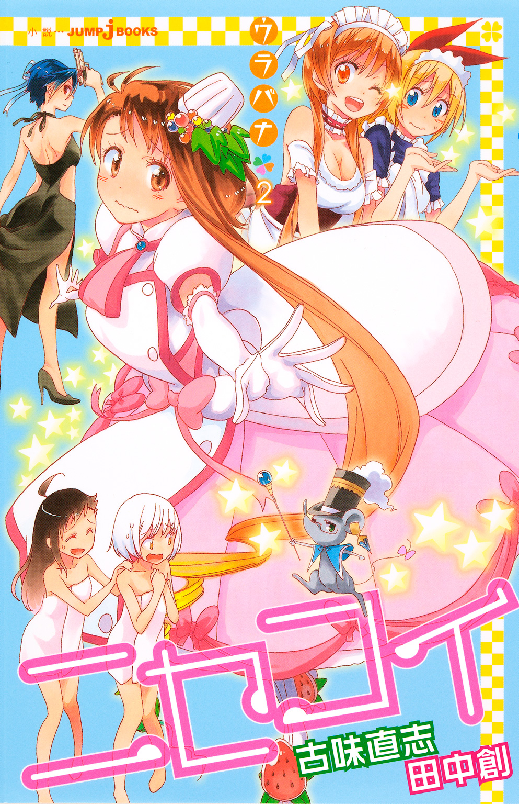
この本は縦書きでレイアウトされています。
また、ご覧になる機種により、表示の差が認められることがあります。
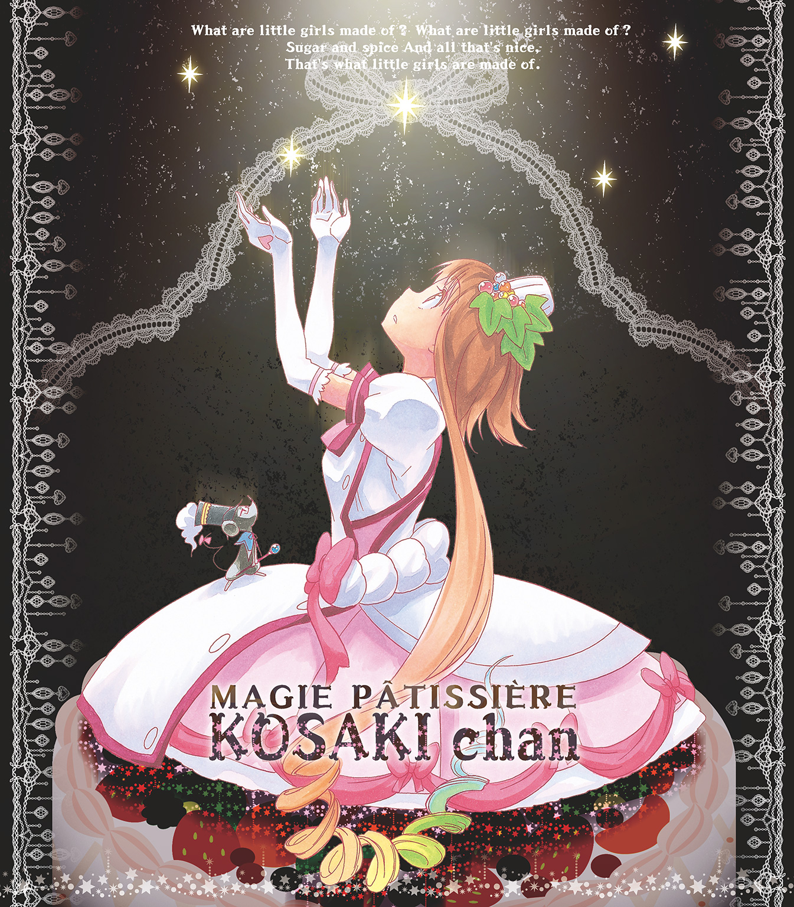
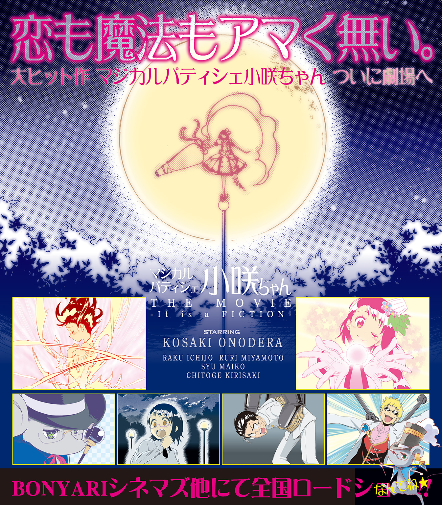
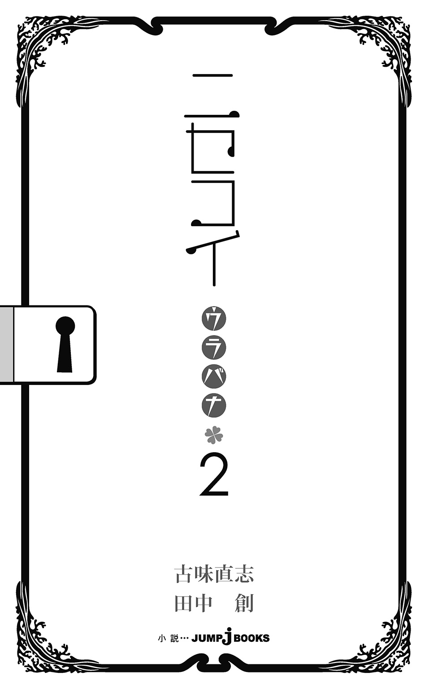
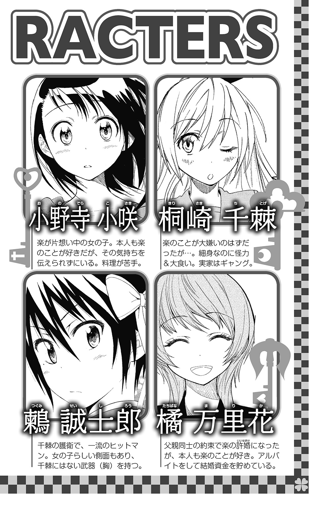

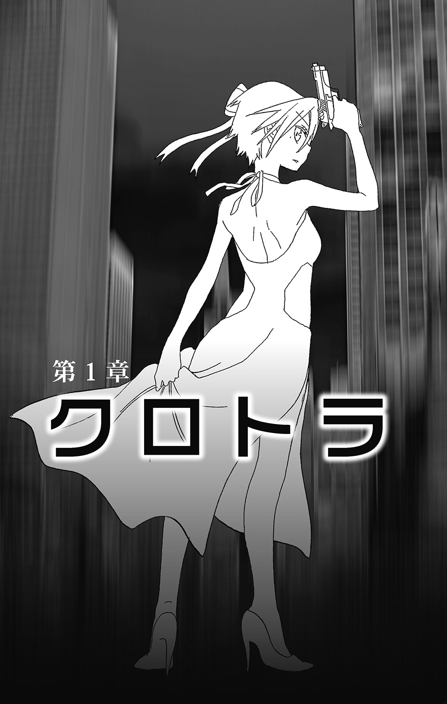
嗅ぎなれた硝煙と火薬の香りが、鼻腔をつんと刺激する。
つい先ほどまでギャングのアジトだったアパートのビルは、今や背後で爆炎にまみれ、轟音を立てながら崩れ落ちていた。
「うう、こんなガキ一匹に......」
足元を見れば、自分より一回りも二回りも大きなゴロツキどもが、這いつくばって呻き声を上げている。
「他愛ないな――」
Ｌ．Ａ．の裏社会でも、かつて類を見ないほどの破壊と暴力の夜。それをもたらしたのは、たった一人の、まだ幼い東洋人の少女だった。
少女は、手にした銃をホルスターに納め、さして感情をこめずにつぶやいた。
「アントライオン......この街を牛耳るギャング組織といっても、しょせんは烏合の衆だったということか」
倒れ伏したギャングの荒くれ者たちの中には、状況を理解できない者も多かった。重火器で武装していたはずの自分たちが、たった一人の子供に屈することになろうとは、夢にも思っていなかったのだろう。
その中で一人、アスファルトに膝をついていた男だけは、落ち着いた表情でまっすぐに少女を見つめていた。
「......ビーハイブのヒットマンよ」
それは片目を眼帯で覆った、白髪で彫りの深い顔つきの、壮年の男だった。顔面の大きな傷からして、相当の修羅場を潜ってきた男なのだろう。結果的に少女に両腕を撃たれ、倒されこそしたが、ゴロツキたちの中ではもっとも手練れの男であった。
この隻眼の男はおそらく、アントライオンでも腕利きの幹部クラスだったのだろう。少女は、そう判断していた。
「――余所者がわざわざこの街までやってきて、組織を潰した理由は何だ。麻薬権益の独占か？ それとも、アジアへの武器密輸ルートを乗っ取るためか？」
男の片目が、少女をじっと見つめた。
表面上は平静を保っているようだったが、そのグレーの瞳の奥には、怒りのようなものが感じられる。子供になすすべもなく倒され、プライドをへし折られた古強者の憤激だ。
「組織としての利益か。そんなものに興味はない」
少女は冷たく言い放った。
「ならばなにが目的だというのだ、少年」
この時、男が少女を『少年』と呼んだのは、単純に見た目の問題だろう。
髪型は短いざんばら髪だし、身にまとっているのは強襲用のタクティカルジャケットだ。サプレッサーつきの二十二口径をホルスターに下げた少女には、年頃の娘の可憐さなど微塵もない。
もちろん、少女はそのことを自覚している。大事なものを守る力さえあれば、女の幸せなど不要――本気でそんな風に思っているのである。
「貴様らは、私の大切な人を傷つけようとした。......だから潰したまでだ」
「大切な人、だと......？ まさか......アーデルトの娘のことか？」
眼帯の男が、眉をひそめた。
「――確かに以前、部下が誘拐を企てたという報告は受けている......。失敗に終わったとは聞いていたが、貴様が阻止したのか」
黒髪の少女がうなずくと、男は得心がいったように笑みを浮かべた。
「なるほど......たった独りで我々を壊滅させるようなヒットマンが相手では、下っ端のチンピラ程度が誘拐を企てたところで、成功するはずもないか」
「たとえ貴様の部下が勝手にやったことだろうと、お嬢に手を出した時点でアントライオンは私の敵だ。ゆえに、徹底的に殲滅させてもらった」
少女が真顔で言い放つのを聞いて、眼帯の男は破顔した。
「ははは、これは恐れ入った。〝徹底的に殲滅〟などというのは、普通、子供がギャング組織相手に使う言葉ではない。......こんな常軌を逸したヒットマンを育てるとは、ビーハイブというのは恐ろしい組織だな」
「なんとでも言え。私は、お嬢を傷つけようとする者を断じて許さない。それだけだ」
焼け落ちるアジトを一瞥し、少女が口を開いた。
この隻眼の男にはもう戦う力は残されていない。何を言おうと、それはただの負け犬の遠吠えにすぎないのだ。
「くく......。娘ひとりのために武装組織を壊滅させてしまうとはな......。年齢にそぐわぬ戦闘技量もさることながら、真に恐るべきは忠誠心のほうらしい。......少年よ。君のその忠誠心の根源は何だ。大金で釣られたのか？ それとも、洗脳でもされているのか？」
「どちらでもない。私は、お嬢と約束しただけだ。その約束を果たすことだけが、私の存在理由だ」
迷いなく告げる少女の言葉に、男が顔をしかめた。
「約束だと？」
「そうだ。だがそれは、貴様には関係ないことだがな」
これ以上、無駄なおしゃべりにつきあっていても仕方がない。男の視線を振りきり、少女はその場を立ち去ろうとする。
「――待て。君の名を聞いておこう」
ため息をつきつつ、少女が足を止める。
「名乗る名などないが......あえて言えば、〝黒虎〟だ。この世界では、私をそう呼ぶヤツが多い」
少女の言葉に、眼帯の男は目を丸くした。
「そうか......君が〝黒虎〟......。そういう名の凄腕がいるとは聞いてはいたが、よもやこんな幼い少年だったとはな」
「だったらなんだというのだ」
「いや、気を悪くしたのなら謝罪しよう」
男は微笑んだ。
「――どうだ。黒き虎よ。ビーハイブを抜けるつもりはないか？ 報酬は今の三倍出す。君なら、いずれ私の右腕にもなれるだろう」
男の提案に、〝黒虎〟は即座に首を振った。
「御免こうむる。私の居場所は、お嬢の傍だけだ」
「......そうか。残念だ」
男の声を無視するように、少女はつぶやいた。
「どのみち貴様らはもう終わりだよ。......これだけの規模の爆発が起こったのだ。連邦捜査局の調査の手が伸びるのも時間の問題だ。アジトの中の麻薬が見つかった時点で、ブタ箱行きは免れまい」
「ふん......潰れる組織に鞍替えする奴はいない、と言いたいのか」
圧倒的に劣勢な状況であるにもかかわらず、眼帯の男は狼狽える様子をまるで見せない。執念深そうな眼光で、少女をにらみつけた。
「――あいにくだが、たとえアントライオンが潰れようとも、私はこんなところで終わる男ではない。力を蓄え、いつの日か必ずビーハイブに借りを返してやる。そのとき君は、私の誘いを拒んだことを後悔することになるだろう」
「ふん......陳腐な捨て台詞だな」
男に背を向け、少女がつぶやいた。この手の恨み言は、もう何度聞いたかわからない。敗者の言葉になど、いちいち取り合ってはいられないのだ。
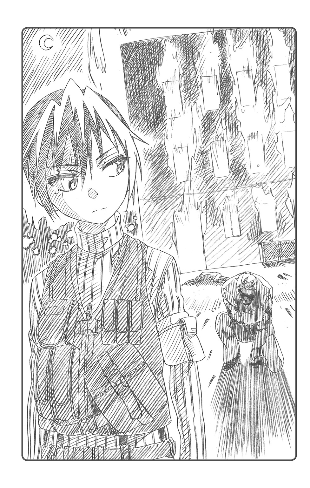
「黒き虎よ。君にはもはや、安息の日々は訪れない。パンやスープを口にするときも、ベッドで眠るときも、日曜日の教会でさえも――常に私の銃口が、君を狙っていると思え。今後はせいぜいあの小娘の傍で、怯えながら過ごすことだな」
少女は足を止めることもなく、淡々とつぶやいた。
「そんな覚悟は元よりできている。お嬢に仕えて生きていくと決めた時に、私は安息など捨てた。〝黒虎〟とは、修羅として生きる者の名なのだからな」
※
テラスから夜空を見上げ、鶫誠士郎は物思いに耽っていた。
日本の冬の空は空気が透き通っていて、こうして外に出てみると、なかなか気分がいい。あとは頭上に星でも見えれば文句なしなのだが、こんな都市部ではそれは無理そうだ。地上の強い灯りのせいで、夜空には何も見えない。
――そういえばあのＬ．Ａ．の夜も、星は見えなかったな。
お嬢――桐崎千棘とともに、日本に来てから数か月。ここ最近は、彼女の身にさしたる危険が及ぶこともなく、護衛の鶫も、穏やかな日常が続いている。
組織が今夜のような豪華な新年会を開くことができたのも、もちろん平和あってのことだろう。
鶫は、視線をパーティ会場のほうに移した。
地上六十階建てのビルの最上階、西洋風の装飾で彩られた、絢爛豪華な大ホールである。
広いテーブルに並べられた色とりどりのオードブルを前にして、着飾った客人たちがゆったりと談笑していた。招待客はおよそ百名ほど。その多くは、ビーハイブに関連した組織の役員や、集英組などの友好的な組織の幹部たちである。
しかし参加者は強面ばかりというわけでもない。大ホールの中央付近には、麗しいドレスをまとった千棘や、その友人たちの姿もあった。
「いかがですか楽様、このドレス。今夜のパーティのために仕立て直したんです。......ふふっ、セクシーでしょう？ 少なくともそこのゴリラ女なんか、目じゃありませんわよねえ？」
「誰がゴリラよ!? ......ねえ、ダーリン、あんたはどう思う？ 私と万里花、どっちが綺麗？」
「......一条君。小咲のドレスだってなかなか露出度高いわよ。ほら、背中のラインがこんなに大胆。なんたって小咲はこの日のためにダイエット――」
「ちょ、ちょっとるりちゃん!?」
「いやあ、ホント、よりどりみどりだよなぁ、楽。あー、カメラ持って来れば良かったぜ......。え、なんでるりちゃん、そんな冷たい目でオレのこと見てるの」
それは、いつもの教室でのやりとりと何も変わらない、和気あいあいとした友人たちの姿だった。
「ま、まあ、誰が綺麗とかそういう話は置いといて、今は料理を楽しもうぜ？ こんな豪華なパーティ、滅多に来れねえんだからさ」
集英組二代目にしてお嬢の恋人――一条楽は、自分の周りに詰め寄るドレス姿の少女たちを、ひきつった笑みで誤魔化していた。
お嬢の恋人ならば、迷わずお嬢のドレスを褒めるべき場面だと鶫は思うのだが、どうもこの男、そういう気の利いたセリフが吐けない人間らしい。せっかくのタキシード姿が台無しになるくらいの情けなさだった。
「ほらハニー、肉食え、肉。うまいぞ」
「なんか適当にあしらわれてる気がするけど......。むぐむぐ......あ、でもこのローストビーフ、ホントに美味しー！」
肉の一切れをパクリと一口でたいらげ、千棘が満足そうに微笑んだ。花より団子な彼女の性格は、小さいころから何も変わっていない。
――平和なのだな。本当に。
友達の少なかった米国での生活に比べれば、今の千棘はずいぶんと楽しそうに見える。彼女にとって、日本に来たことは正解だったのだろう。
最近の幸せそうな彼女の表情を見ていると、鶫まで幸せな気分になってくる。
――お嬢の護衛として、あの笑顔は死んでも守らねばなるまいな。
背筋に気合いを入れ直し、鶫は「よし」とつぶやいた。
「おーい！ 鶫、なに独りで難しい顔してんだ？ お前もなんか食えよ」
両手にフランクフルトを持って、楽がテラスのほうへとやってきた。離れた場所にいる鶫を気遣って、食べ物を持ってきてくれたのだろう。
しかし鶫は、差し出された串を手で振って断った。
「気持ちはありがたいが......。警備担当として会場にいる私が、料理に手を出すわけにもいかんからな」
鶫の服装は、地味な男物の黒ジャケットにスラックス――会場で待機している他のビーハイブの護衛と同じ格好だった。今夜の鶫は、あくまで主催者側の警備員なのだ。
「杓子定規なやつだなあ......。お前んとこのクロードも、さっきしこたま飲みまくってたじゃねえか。別にちょっとぐらい羽目を外してもいいんじゃねえの？」
「クロード様には、組織の幹部としての役目がある。他組織の幹部と杯を交わすのも大事な仕事だからな。私とは立場が異なるのだ」
「仕事って......。あいつ、ウチの竜と張りあって飲み比べしてたようにしか見えなかったんだが」
ちなみにクロードも竜も、パーティ開始三十分で酔いつぶれ、現在別室でダブルノックダウン中である。組織の幹部というのもいろいろ大変であるらしい。面子とか。
「と、とにかく、クロード様がいない今だからこそ、私が警備に集中せねばならんのだ」
「いや、つーかさ。そもそも警備って必要なのか？ こんなギャングとヤクザだらけの会合に、喧嘩売りに来るような奴がいるとは思えねえんだけど」
楽が大口を開けてフランクフルトを頰張った。その吞気な顔には「そう簡単に賊なんか入りゃしねえよ」と書いてあるように見えた。
「まあ......実際いるからこうして警備をしているわけだが」
「いる？ どういうことだよ？」
楽が眉間にしわを寄せた。
「実は今朝、この会場に脅迫状らしきものが届いたのだ。『今夜、このパーティ会場を爆破する』とな」
「ば、爆破ぁっ!?」
楽が驚きのあまり、口にしていたフランクフルトを吹き出した。
鶫は顔をしかめつつ、冷静に告げる。
「案ずるな。ビーハイブにとっては、こんな脅迫など日常茶飯事だ。一応、念のためにビル中を探させたが、爆弾は見つからなかったよ。......大方、性質の悪いイタズラだろう」
「そ......そうか、ならいいんだけど」
爆弾が見つからなかったと知って、楽が安堵のため息をついた。
「もっとも、たとえ脅迫状が本物でも、開催を告知した時点でパーティを中止にすることは不可能なんだがな」
この新年会には組織内外のコネクションを強め、力を誇示する目的もある。
もし真偽不明の脅迫状などに屈してパーティを中止したりすれば、ビーハイブは周りから〝腰抜け〟の烙印を押されてしまうことになる。そうなれば、縄張りや権益を維持するのは難しくなるだろう。
「万一の場合に備え、私は警備をおろそかにするわけにはいかんのだよ」
楽が、串をくわえつつ「ふうん」とつぶやいた。
「でも、他の護衛の連中だって、なんだかんだでみんな楽しんでるじゃねえか」
楽の言うとおり、会場にいる黒スーツの護衛の多くは、他の招待客と一緒に酒や肴に舌鼓を打っている。もともとがアウトローな連中の会合なのだ。飲食しながらの警備でも、それに異を唱える者はいない。
「お前ももっと、フツーにパーティを楽しんでいいんじゃねえの。こんな離れたテラスでぽつんと警備しなきゃなんねえ理由もないだろ」
そう言って楽は、会場の友人たちを指した。
小野寺小咲と橘万里花がビュッフェスタイルの魔力とダイエットの意義について話しあっている一方、千棘はすでに五枚目のローストビーフを注文している。その背後では、宮本るりが巨大なホールケーキを一人で黙々と口にして、舞子集を驚かせていた。
「......相変わらず、見ていて飽きない連中だな」
鶫がふっと笑みを浮かべた。
ドレスで着飾ったクラスメートたちは、年相応に美しく、輝いて見えた。
平和な環境で育ってきたからこそ、彼らはあんなに楽しげな笑顔を人に向けることができるのだろう。この一条楽だって、それは同じだ。
――どうも、気後れしてしまうな。
自分のように荒事専門の世界で生きてきた人間からみれば、彼らは、眩しいくらいに遠い存在なのだ。
鶫は、視線を外の夜景に落として、そっけなく楽に言った。
「いや。やはり私には、こういうパーティのような煌びやかな場所は相応しくない。遠慮しておくよ」
「そんなことねえと思うけどな。千棘だって、『せっかくつぐみにドレスあげたのに、なんで着てくれないんだろ』って不思議がってたぞ」
楽が鶫のジャケットに目を落とした。
確かにパーティが始まる前、鶫は千棘にドレスを押しつけられたのだが、どうにも着る気になれなかったのだ。
「私のような者にドレスなど似合うものか。お嬢には悪いが、あとでお返しするつもりだよ」
「もったいねえな。せっかくスタイル良くて美人なんだし、お前なら絶対ドレス姿も似合うと思うんだけどな」
「なっ――」
あまりにナチュラルに容姿を褒められ、思わず鶫は赤面してしまった。
この一条楽という男、気が利かないかと思いきや、ときおり真顔で歯の浮くようなことを言うこともあるのだ。始末が悪いというか、油断も隙もない男なのだ。
紅くなった頰を、こほん、と咳払いで誤魔化す。
「お世辞のつもりなのかしらんが......。一条楽、そういう口説き文句は私ではなく、お嬢に言うべきだろう......！」
「く、口説き文句じゃねえよ。一般論だ、一般論！」
楽は「とにかく」と鶫の目を見つめた。
「お前、何か最近、肩に力入りすぎなんじゃねえかと思ってさ」
「私が？」
「もしかして、こないだのことで何か気にしてるのか？ あのポーラって子が来たあたりから、お前の様子が少しおかしい気がするんだけど」
脳裏に、白いケープ姿の少女の姿が浮かんだ。
米国時代の同僚、ポーラ・マッコイだ。彼女と再会するなり、ちょっとした恥ずかしい騒動を繰り広げることになってしまったことは、まだ記憶に新しい。
「まあ、久しぶりに旧友と会ったことで、思うところがあったのは事実だがな」
それどころか実際、それが最近の〝悩み〟のきっかけになった気がする。
彼女は当初、荒事から離れた生活を送る鶫を〝牙をもがれた虎〟だと表現したが、それは間違いだった。米国で相当の実践経験を積んできたはずのポーラと刃を交えても、鶫はまるで引けを取らなかったのだ。そんな鶫が普通の女子高生であるはずがない。
――私はやはり、どこまで行っても〝黒虎〟なのだろうな。
確かに、日本の生活には慣れた。お嬢やそのご友人たちと、平和なスクールライフを送るのも悪くない。
だが、根本的な部分で、鶫と彼らの立ち位置は異なるのだ。結局のところ、自分は組織のヒットマン――〝黒虎〟として生きることを選んだ人間なのだ。
青春とか友情とか......まして恋などとは、縁遠い存在なのである。
鶫は、じっと楽の顔を見つめた。
「なんだよ。思うところって」
「貴様に話すようなことではない。気にするな」
「なんだそりゃ。気にするなって言われたら、余計気になっちまうじゃねえかよ」
怪訝な顔で、楽が鶫をにらみつける。
鶫はため息交じりに、
「貴様はお嬢の恋人らしく、早く会場に戻れ」
と、楽を追い払おうとしたそのとき、鶫の懐で携帯電話が震えた。
「何だ......？」
警備に当たっていた仲間の番号が、ディスプレイに表示されている。何か不都合でも起きたのかと不思議に思いつつ、鶫は通話ボタンを押した。
『久しぶりだな。〝黒虎〟』
通話口から聞こえてきたのは、低い男の声だった。仲間の声ではない。もっと敵意にまみれた不吉な声だった。どこかで聞いたようなその声色に、鶫は眉をひそめる。
「誰だ貴様は。この電話の持ち主はどうした？」
『彼には眠ってもらったよ。私は、これから行われるゲームの主催者だ。これから君に、それに挑戦してもらおうと思って連絡を差し上げたのだがね』
「ゲームだと？」
『そうだ。この音が聞こえるかね？』
電話口の向こうから、ピッ、ピッ、ピッと規則的なデジタル音が聞こえてきた。
それは、ただの時計の音ではない。鶫は脳内で、危険信号が鳴り始めるのを感じる。
経験から言って、そのデジタル音の正体は――。
「まさか、爆弾か......？」
『ご明察』
男が笑う。
『聡明な君にはもう察しがついていると思うが、これから君に挑戦してもらうゲームは、爆弾解除ゲームだ。パーティの来場者全員の命をかけた、ね』
「貴様......脅迫状の男か」
『その通り。君たちのことだから、どうせあんな紙切れ一枚、さっくりと無視してパーティを開くと踏んでいたが、思っていた通りだったな』
男の笑い声に、鶫は全身の血が冷えるのを感じた。
この電話の本来の持ち主を含め、警備に当たっていた護衛たちはいずれも、銃器で武装した手練れぞろいだったはずだ。なのにどうして、この男はやすやすと会場に忍びこみ、爆弾を仕掛けることができたのか。
答えはおそらく単純だ。この男が、相当腕が立つ奴であるということだろう。
『予告に従い、君たちのいるフロアにひとつ、強力な爆弾を仕掛けさせてもらった。どこに仕掛けたかはもちろん内緒だ』
鶫の反応を楽しむかのように、男はもったいつけた喋りかたをしている。
『起爆は、今からきっかり三十分後......。もし爆発すれば、フロアごとパーティ会場が粉々になるくらいの爆弾だ。さぞかし綺麗な新春祝いの花火が上がるだろうな』
話している内容は恐ろしいものだったが、男の口調自体は冷静で落ち着いている。愉快犯の類には思えない。爆弾など仕掛ける以上、何か強い動機があるはずだ。
「要求は何だ。金か？」
鶫が問う。
すると笑いをかみ殺すように、電話の男が答えた。
『〝そんなものに興味はない〟......これは三年前の君の台詞だったな、少年』
「何だと......？」
『私の目的はたったひとつだ。黒虎、君への復讐だよ』
男は、はっきりと怨嗟の念をもってそう告げた。
『私はこれでも負けず嫌いな性質でね。一度でも私に膝をつかせた相手は、例外なく殺すことにしている。それがたとえ一国の首相だろうが、君のような子供だろうが、ね』
「私への復讐......そのために、百人あまりの人間を巻きこんで殺そうというのか」
裏社会の人間で、黒虎に恨みを持つ者は少なくはない。実際、これまでにも仇討ちや報復が仕掛けられたことはある。
しかし、これだけ大規模に他人を巻きこんでの復讐はさすがになかった。もちろん、それを冗談めかして〝ゲーム〟などと呼称する者も。
いったいこの電話の男は、何を考えているのだろうか。
「復讐したいなら、私個人を狙えばいい。お嬢や他の者たちを巻き添えにするようなやりかたは、フェアじゃない」
『フェアじゃない、か......。三年前、少女一人のために組織を潰した君が、そんな綺麗事を言うとはな。平和な国で暮らして、ずいぶんと善人面が板についたようじゃないか』
しょせん、君はこの国には似つかわしくないヒットマンなんだよ――。男にそう指摘されたような気がして、鶫は苛立ちを覚えた。
『もっとも、ゲームに自信がないというのであれば、投降することくらいは認めてやろう。黒虎の首さえ手に入るならば、君の大事なお嬢様の命だけは保障してやる。......まあ、そうした場合でも、どのみち爆弾は他の連中を吹き飛ばしてしまうがね』
「ふざけるな、誰がそんな要求を吞めるか！」
お嬢を救えたとしても、他の全員を見殺しにするなどという選択肢がとれるわけはない。
怒鳴る鶫の声にもさして動揺を見せず、男は淡々と続ける。
『もうゲームのカウントダウンは始まっている。......君が三十分以内に仕掛けられた爆弾を解除するか、お嬢様以外を見殺しにして投降するか、はたまた全員で瓦礫に埋もれるか。君が選びうる選択肢は三つだ。......おっと、他のビーハイブの連中の手を借りるのは反則だぞ？ 私は常に君を監視している。ルール違反をしたら、その時点で容赦なく爆弾が爆発すると思ったほうがいい』
その声色は本気のものだった。よほど黒虎に強い執着がある男なのだろう。
鶫はようやく、電話の男の正体に思い当たった。
『三年前のように、君一人で何とかしてみせたまえ。黒き虎の少年よ』
「やはり貴様、あのときの――」
電話の向こうで、男が笑った。
「そうだ。私はアントライオンの生き残りだ。君を地獄へと引きずりこむために、再び舞い戻ってきたのだよ」
※
「なんということだ......」
通話を切り、鶫は肩を落とした。
過去に自分が殲滅した組織の生き残りが、自分への復讐のために日本にまでやってきた。しかもそのために、ビーハイブのパーティ会場に爆弾を仕掛けられるという事態に陥ってしまったのである。
「クロード様もいない、こんなときに......！」
あの予告を、イタズラだと即断してしまったのは早計だったかもしれない。まさか、ビーハイブの警備をかいくぐるほどの賊の仕業だったとは。
――お嬢や他の皆を危険に晒してしまうなど、何をやっているんだ私は......！
歯嚙みして悔しがっても、それで状況が良くなるわけではないのはよくわかっている。
「おい鶫。今の電話はなんだったんだよ。ただごとじゃねえ感じがしたんだが......」
ふと気づけば、楽がいつになく深刻な表情で鶫の顔を覗きこんでいた。
鶫は一瞬説明をためらうも、どうせ黙っていてもいずれバレることだと思い、しぶしぶ口を開いた。
「脅迫状は事実だったということだ。あいつは、このビルに爆弾を仕掛けたらしい」
「な、なんだって!?」
電話の内容を楽にかいつまんで説明する。
楽は額に脂汗を滲ませ、ごくりと生唾を飲んだ。
「鶫一人で爆弾を探し出して解除しろ、ってことか......？ なんかおかしくねえか？ そのアントライオンの生き残りって男は、なんでまたそんな回りくどいやり方で仕掛けてきやがったんだろうな？」
確かに、楽の疑問ももっともだ。
敵は復讐だと言いつつ、わざわざ〝爆弾解除ゲーム〟などと鶫に告げている。まるで意図がわからない。単に復讐が目的ならば、問答無用でビルごと爆破するとか、それこそ殺し屋を雇って闇討ちするほうが手っ取り早いはずだ。
「不合理極まりないが、それだけに得体の知れない不気味なヤツだな」
「そうだな......。だけど今は、その理由を考えてる暇はねえ。爆弾が爆発するまで、もう三十分もねえんだろ？ だったら早くオレたちで爆弾見つけてなんとかしねえと」
そう言って楽は、上着を脱ぎ、蝶ネクタイを投げ捨てた。
いつの間にか、覚悟を決めた男の顔になっている。
「ちょ、ちょっと待て一条楽！ お前まで爆弾探しをするつもりか!? 電話で名指しされたのは私だけだ。それ以外の人間の助力を得るわけにはいかんのだぞ？」
電話の男に提示されたルールがあるのももちろんだが、何より彼を危険に巻きこむわけにはいかない。鶫はあわてて楽を止めようとしたのだが、
「大丈夫だ。ルール違反なのは、『ビーハイブの連中の手を借りる』ことだろ。オレはビーハイブの人間じゃねえし......。何より、聞いちまった以上は何とかしねえとな」
楽は、ちらりとホールにいる千棘たちに視線を送った。彼女たちは何も知らず、楽しげにおしゃべりに興じている。
楽は彼なりに、彼女たちを守ろうとしているのだろう。
「千棘や他の客に説明して避難させる......ってのはルール違反なんだろうな。だったら、ヘタにあいつらを心配させるよりも、三十分以内にオレらで爆弾をなんとかしちまったほうがよさそうだ」
「し、しかし、一般人を巻きこむわけには――」
「心配すんな、鶫。オレはこう見えて一度、黒虎に勝った男だぞ？」
楽は、にこり、と笑みを浮かべた。
まるで先ほどとは人が変わったような男らしさである。この一条楽という男、普段抜けているように見えて、やるときはやる男なのかもしれない。
鶫は、ふいに、自分の頰が火照るのを感じた。
「あ、あのプールのときの決闘は無効だと言っただろう......！」
誤魔化すようにそっぽを向いて言った。
「――ま、まあいい。この際、猫の手でも借りたいところだ。貴様程度でも、何かの役には立つだろう」
実際のところ、楽が手伝いを申し出てくれてかなり心強かったのだが、そんなことはおくびにもださなかった。
楽が満足げにうなずく。
「よし、じゃあさっそく爆弾探しをするか......。このフロアに仕掛けられてるんだよな。どこにあるのやら......」
腕時計に目を落とすと、残り時間はおよそ二十五分。決して長い時間ではないが、一フロア分くらいならギリギリなんとかなる。
楽が近くの椅子の前にしゃがみこみ、首を振った。
「さすがにはこの狭いテラスには、爆弾なんて仕掛けるとこねえよな......」
「ああ、時限装置のデジタル音も聞こえん。爆弾が置かれているのはフロアの別の場所だろう」
鶫は淡々と応える。まさか、そんな簡単に見つかるとは思ってはいない。
「探さなきゃなんねえのは、クロークに厨房、トイレに廊下、それに会場の大ホールあたりか？ ......さすがに大ホールを調べるのは骨が折れそうだが」
楽が辟易するのもわかる。大ホールは広い上に、クロスのかけられたテーブルの下、観葉植物の鉢の中など、爆弾を隠せそうな死角は無数にある。
おまけに、大ホールには百人ほどの招待客がいるのだ。もし爆弾が、人が簡単に身に着けたり手荷物に隠したりできるようなものなら、探しようがない。
「安心しろ。おそらく大ホールに爆弾が隠されているということはありえない」
「なんでだ？」
「先ほどの男からの電話で、背後から人の声が聞こえなかったからだ。携帯電話を通じて時限装置のデジタル音が鮮明に聞こえる場所となれば、爆弾を仕掛けたのは、おのずと人が少ない場所に限定されるだろう」
「へえ。なるほど......」
感心したように楽がうなずいた。
「さすが冷静なんだな、鶫。......やっぱこういうのに場馴れしてる感があるっつーか」
「ふん。お世辞は不要だ。......早く他のとこに行くぞ」
そっけなく言って、鶫は顔を背けた。
いくら、さすがと褒められても、それは結局、「普通じゃない」と告げられているに等しいからだ。
――やはり、この男も、私をそういう目で見ているのだろうか。
ちくり、と刺さった胸の痛みを振り払うように、鶫は駆け出した。
今はとにかく、千棘や他の招待客を救うのが先決だ。それこそが、黒虎として生きることを選んだ自分の、なすべきことなのだから。
※
ふたりでクロークをひととおり見て回ったが、爆弾らしきものは発見できなかった。預けられている荷物や上着からも、デジタル音が鳴っているようなものは見つからない。
爆弾探しは思ったよりも難航するかもしれない――焦りを感じる鶫だったが、転機は意外にも早く訪れた。
「妙だな」
厨房に足を踏み入れた瞬間に、鶫は違和感を覚えた。
「ああ。確かに、パーティ中の厨房なのに、コックが一人もいないっつーのはおかしいよな」
楽が厨房を見渡しながらつぶやいた。
調理台には、切っている途中の野菜がまな板の上にそのまま放置されていた。包丁やピーラーなどの器具がその下の床に無造作に落ちている。普通なら、こんな状況で料理人が厨房を離れることはまずありえないだろう。
入口近くに置かれたカートの上には、出来立てと思われるピラフが銀皿に山盛りに載せられていたが、これも不自然だ。せっかく作った料理を放置しているのは、明らかにおかしい。
まるで厨房にいたスタッフが忽然と姿を消してしまったかのような、不可思議な状況である。
「おそらく、何者かの襲撃を受けたのだろう」
鶫は、厨房の奥の冷蔵室の扉をゆっくりと開いた。
「うおっ......!?」
中に人が倒れているのを見て、楽が驚きの声を上げた。
食品庫と思われる四畳半ほどの部屋の中には、三人の男が猿轡を嚙まされ、床に転がされている。いずれも手足を縛られたまま気絶させられており、二人は白いコック服、もう一人は鶫と同じ黒のジャケットを身に着けていた。
ジャケットの男が、警備をしていたビーハイブの人間だということは、顔を見た瞬間にわかった。アントライオンの生き残りを名乗るあの男は、厨房を襲って携帯電話を奪ったのだ。
「間違いない。爆弾が仕掛けられているのは、この厨房のどこかだろう」
「そうなのか？ でも、なんつーか、これじゃあからさま過ぎる気がするけどな。爆弾見つけてくださいって言ってるようなもんじゃねえか」
楽が眉根を寄せた。
確かに、組織を潰された復讐というわりには、隠し場所に芸がない気がする。普通の工作員であれば、爆弾を仕掛ける際にこんなにわかりやすい痕跡は残さない。
たとえ厨房に仕掛けるにしても、コックや護衛に見つからないように隠すはずだ。そっと食材のダンボールと一緒に搬入するとか......少なくとも、鶫ならそうする。
「爆弾解除を〝ゲーム〟などと呼んでいる時点で十分おかしいが、どうも思考の読めない相手だな。性質が悪い」
「もしかして、厨房はフェイクだったりするのか？ わかりやすい場所に誘導しておいて、爆弾はもっと見つけにくい場所に隠してある、とか」
他の場所を探そうか、と悩む楽に、鶫は首を振った。
「その可能性も否めないが......裏の裏をかいて、ここに仕掛けられているかもしれない。そのあたりを疑い出したらキリがないからな。いくら怪しくとも、ここは敵の誘導に乗るしかないだろう」
爆弾を仕掛けられてしまった以上、すでに敵にイニシアチブは握られている。こちらは、時間の許す限りひとつひとつ調べていくしかないのだ。焦ったら負けである。
鶫は身を屈め、流し台の下から爆弾探しを始めた。
「まずは耳を澄まして、時限装置のデジタル音を聞き取れ。間違っても不用意に扉を開けたりするなよ。どんな罠が仕掛けられているかわからないのだからな」
続いて、食品棚、冷蔵庫、調理器具のケースに耳を近づけ、丹念にチェックしていく。
爆発物探知機などがあればもっと楽に見つけられるのだろうが、残り二十分弱という時間の制約を考えると、そんなものを準備している余裕はない。
そうやって手探りで探しているうちに、コンロの傍にいた楽が声を上げた。
「あれ、なんか音がする......？」
彼が耳を当てているのは、ガス台に載せられた業務用の圧力鍋だ。五十リットルくらいの容量がある、かなり大きなものである。
「どんな音だ？」
「ピッ、ピッ、ピッ......って電子音だ。普通、鍋の中にはキッチンタイマーなんか入れねえよな」
鶫は、ごくり、と息を吞んだ。あの巨大な鍋の中に、爆弾が仕掛けられているのだろうか。爆薬の種類にもよるが、かなりの量だと思われる。
「と、とりあえず、鶫、これどうすれば――」
言いつつ、楽は鍋の取っ手を握る。
それを目にした瞬間、鶫はとっさに叫んだ。
「馬鹿者！ 迂闊に触れるな！」
「えっ!?」
楽はびくり、と驚き、鍋の取っ手を両手で持ち上げたまま硬直した。ぽかん、と口を半開きにしている表情は、「蓋も開けていないのに、なぜ怒鳴られたのかわからない」と言いたげな様子だった。
「起爆装置には、時限式と振動感知式を兼ね備えたものがあるんだ」
「な、なんだそれ」
きょとん、とする楽を見て、鶫は頭を抱えた。
失敗した。やはり素人に爆弾探しを協力させるなど、浅はかだったのかもしれない。
ゆっくりと楽に近づき、動揺させないよう、静かな声で告げた。
「いいか、一条楽。死にたくなければ一ミリたりとも動くな。もちろん、絶対に取っ手から手を離すなよ。......まずは落ち着いて、深呼吸をするんだ」
「な、なんだよ鶫。なんでそんな深刻な顔してんだ？」
楽はひきつった笑みを浮かべている。
鶫はそんな彼の背後に回り、彼の脇の下から手を伸ばして、鍋の蓋に手を触れる。
「なにを......？」
そのまま鶫は、ゆっくりと慎重に鍋の蓋を持ち上げた。
中に八分目くらいまでいっぱいに入っていたのは、白い粘土のような物体だった。
「――Ｃ４か」
プラスチック爆弾。比較的ポピュラーで扱いやすい割に、高性能な爆薬である。鶫もかつて何度か、破壊工作に使用したことがある爆薬だった。
「や、やばいのか、これ」
爆薬の上には、導線で接続された黒っぽい箱が置かれていた。箱の天板には、デジタル表示のタイマーが取りつけられ、「16：36」を表示している。電子音が鳴るごとに、無慈悲に数字が減少していく様は、誰が見ても時限爆弾だとわかる代物だった。
「大鍋一杯くらいの量のＣ４なら、パーティ会場どころか、このビルそのものが吹っ飛びかねんくらいの威力はある」
「......マジかよ」
楽が身震いした。
これだけの爆薬を前にして、縮みあがらない者などいない。場数を踏んでいる鶫だって、逃げ出したいくらいなのだ。
「だが、恐ろしいのは爆発物の量だけじゃない」
鶫は、黒い箱の上側についた、ガラス製の透明な円筒形のチューブを指した。
チューブの中には赤い小さなボールが入っており、少し傾けただけで左右に転がってしまうような構造になっている。
「このチューブとボールはおそらく、振動感知システムだろう」
「あ、ああ......さっき言ってたヤツだよな」
鶫は神妙な顔でうなずいた。
「このチューブの中のボールが、転がって端のセンサーに触れればアウトだ。そうなれば、カウントダウンなどもはや関係ない。その時点で起爆装置が作動してしまうのだからな」
「う、うそだろ......？ じゃあオレがちょっとでも鍋を傾けたりしたらそこで、ドカンってわけか......？」
楽の顔色から血の気がさっと引いたのがわかった。ようやく彼にも、事態の深刻さが理解できたらしい。
「手を動かすなよ。力のバランスが少し崩れただけでも、爆発の可能性がある」
「勘弁してくれよ......」
泣きそうな声で楽がつぶやいた。
この凶悪な装置こそ、電話の男の罠だったのだ。
厨房に侵入の痕跡を残していたのは、こちらをうまく誘いこんで、鍋に手を触れた瞬間、絶望を突きつけるためだったのだろう。
「頼む、一条楽。その姿勢のまま絶対に動くな。お前の両手に今、パーティ会場全員の命がかかっていると思ってくれ」
「ちょ、お前......。プレッシャーかけるようなこと言うんじゃねえよ！」
両手はしっかりと鍋を握りつつも、楽の声は震えていた。背中にじっとりと汗をかいているのが、シャツ越しでもわかる。
「大丈夫だ。起爆装置は必ず私が解除してやる。お前はあと十五分ほど、そのままの姿勢でいてくれればいい」
不幸中の幸いだったのは、かろうじて楽の背中越しに鶫が手を伸ばせることだった。まだなんとか、爆弾を処理できる可能性がある。これが楽ひとりだったら、鍋を手にした時点でどうしようもなくなっていたかもしれない。
「で、できるのか、爆弾の解除なんて」
「ああ。この手の爆弾については、製作も解体も、少し覚えがある」
このまま、楽の後ろからガス台のほうに手を回して作業をするしかないだろう。細かい作業をするにはキツイ体勢だが、これが唯一の方法である。
楽の背中に身体を押しつけ、肩ごしに鍋を見据える。
「少し窮屈だが、こらえてくれ」
「わ、わかった。鶫、お前に任せるよ」
楽の了承を得られたところで、鶫は懐からアーミーナイフを取り出した。
折り畳み式で、栓抜きや缶切り、ドライバーなどが付属している便利用品だ。任務の際に何かと役に立つので、鶫はいつも懐にこのナイフを携帯するようにしている。
「さて、まずは天板からだな」
ふう、と深呼吸してから、鶫は、マイナスドライバーの先を、黒い箱の上蓋のネジ部分に差しこんだ。振動感知用のボールを刺激しないよう、慎重にネジをくるくると回転させていく。液体窒素でもあればもっと効率よく解体作業ができるのだが、ないものねだりをしている状況ではない。
「ネジ穴には、トラップの類はないようだな......」
あわてて手元がくるった瞬間、あの世行きなのだ。亀のように息のつまりそうな速度でも、焦ることなく、じっくりとドライバーを回す。一本、また一本とネジが外れるにつれ、鶫はじっとりとした汗が全身から噴き出るのを感じていた。
「これでよし......」
タイマーつきの天板をゆっくりとずらしあげ、内部を露出させることに成功する。
箱の中では、雷管につなげられた導線が数多く絡みあっていた。思わず辟易するくらいの複雑さだったが、鶫はすぐに頭を振った。
――こんなことで躊躇してはいられん。私しか、お嬢やみんなを救うことはできないのだから。
残り十三分。鶫は、これまでの経験で得た爆発物に関する知識をフル動員し、絡みあった導線をより分ける作業を開始した。
「爆弾の解体までできるなんて、すげえんだな、鶫」
楽が口だけを動かしてつぶやく。
「効率よく敵を殲滅する手段の一つとして、クロード様が爆発物製作のイロハを教授してくださった。解体はその応用というだけだ」
「あ、いや。そういうことじゃなくてな。こんな命がけの状況で、よくまあそんな冷静に作業できるもんだなって。......オレなんて、震えるの堪えるだけで精一杯だからさ」
楽は素直に感心しているのだろうが、鶫にとってそれは、あまり言われて嬉しい一言ではなかった。
「別に大したことをしているわけではない。私には、こういうことしかできないからな。華やかなドレスで着飾るよりも、死と隣り合わせの世界で生きるほうが性に合っているというだけだ」
「おい鶫、もしかしてお前――」
楽が何かを尋ねかけたそのとき、厨房の戸口側から、少女の声が響いた。
「すいませーん、料理なくなっちゃったんですけどー！ 何かありませんかー？」
その吞気な声は、鶫にも楽にも非常に聞き覚えがあるものだった。
鍋の中で爆弾を解体する手を止め、思わず鶫は戸口を振り返る。
そこにいたのは、爆弾のことなどつゆ知らず、食べ物を探して厨房にやってきた桐崎千棘の姿であった。
「お、お嬢!?」
「あれ、つぐみ？」
彼女は鶫と目を合わせると、目を丸くした。どうしてここに鶫がいるのか、疑問に思っている様子である。
「あ、あの、これはですね、」
突然の千棘の登場に、鶫はこの状況をどう説明していいか戸惑っていた。
――しまった。誰かが厨房に入ってくることくらい、当然、予想するべきだった......！
爆弾のことで頭がいっぱいだった鶫には、まったく他のことに気が回らなかったのである。千棘も一応、ビーハイブの人間。爆弾のことを説明したらルール違反になるかもしれない――。
「てか、そこにいるの、楽......よね？ あんたら、ここでいったい何を――」
厨房に入るなり、千棘はふたりの姿を見て絶句した。
「あ」
これは、非常にマズい。鶫は直感的にそう思った。
彼女に爆弾の事情を知られるのももちろんマズいのだが、それ以上に問題なのは、今の楽と自分の体勢である。
楽の背中にぴたりと身を預け、腕を前に回している鶫の姿は、千棘の目にはどう映っているだろうか。考えるまでもない。
――これではどう見ても、私が一条楽を背後から抱きしめているようにしか見えないではないか......！
明らかに、深刻な誤解を生みかねない場面を千棘に見られてしまった。
「い、いや！ えーと、その、」
頭の中で必死に言い訳を考える鶫だったが、先に口を開いたのは千棘のほうだった。
「ちょ、ちょっと!? え？ なんで？ どういうこと？ パーティの最中にふたりでどっかに行ったと思ったら......こんなところで、えっ？ えええっ!?」
千棘は口も半開き、あわあわと取り乱し、何を言っているのかわからない。かなり動揺しているようだ。無理もない。彼女は今、自分の恋人と自分の護衛が、不実なアバンチュールを繰り広げていると思いこんでいるのだろう。
――ああ、お嬢にこんな顔をさせてしまうなど、一生の不覚だ......！
鶫が心の中で悔恨にくずおれる一方、楽が、あわてた様子で弁解を始めた。
「ハ、ハニー、あのな。落ち着いて聞いてくれ。これはたぶん、お前の考えてるようなことじゃねえ。詳しくは話せねえが、深い事情っつーもんがあってだな――」
「な、なな、なによそれ？ 深い事情ってなに？ 具体的に言えないとか、ますます怪しすぎるわよ？」
千棘はむっとした表情で、コンロのほうへと近づいてきた。
「――大体ね、なんであんた、私を見て話さないの？ ずっと明後日のほうに目線そらして......心にやましいことがあるって証拠じゃない」
「ち、違ぇーよ！ 首を動かせない事情があるんだよ、こっちには！」
千棘は楽の傍までつかつかと歩み寄ると、じいっと彼をにらみつけた。
楽がごくりと生唾を飲みこみ、必死で震えを我慢しようとしていることが、背中越しに鶫にも伝わる。
――ここでお嬢をなんとかしないと、まずい！
このままでは、振動感知センサーが作動してしまうかもしれない。爆破の危機を感じた鶫は、とっさに笑顔を浮かべた。
「お、お嬢！ これは一種の......えーと、そう、整体でして！」
「え？ 整体？」
千棘が首をかしげた。
こうなったら、力押しで誤魔化しきるしかない。鶫は、ままよとばかりに思いついた噓八百を並べ立てることにした。
「いや、実はこの男、何故か急に『首と腰が曲がらなくなった』とか言い出しましてね......！ 仕方がないので私がこうして背中から、クロード様直伝の整体マッサージを施してやっているところなのですよ！」
「マッサージ......？ そ、そうなの？」
わかったようなわからないような顔で、千棘が首をかしげた。とっさの言い訳だったが、疑われてはいないようだ。こうなればもう、誤魔化しきるしかない。
鶫の意図は楽にも伝わったらしく、彼もすぐに鶫の策に便乗して作り笑いを浮かべた。
「そ、そうそう！ さっき急に関節がおかしくなっちまってな......。恥ずかしいから言い出しにくかったんだよ。......んで、みんなに隠れて、ここで鶫にマッサージしてもらってるってわけだ！」
一条楽、なかなか空気の読める男だ。
「ま、まるでオッサンだな一条楽！ 貴様もお嬢の恋人なら、少しは身体でも鍛えたらどうなんだ？」
「お、おう、気をつけなきゃな！ ......ははは！」
ふたりでデタラメをまくし立てていると、千棘も納得したのか、
「なーんだ、そういうことか......」
心底、ほっとした様子でため息をついた。
「――まあ、つぐみみたいな可愛い子が、そもそもこんなもやしなんて相手にするはずないもんね」
なんとか危機は乗り越えたらしい。お嬢が素直な女の子でよかった。
「そ、そうですよ。誰がこんなヘタレなんぞと好きこのんで抱き合うものですか」
愛想笑いを浮かべつつ、鶫は鍋の中のカウントダウンタイマーを確認する。
残り時間は九分四十秒。そろそろ解体作業に戻らなければ危ないかもしれない。
鶫は、千棘に、先にホールへと戻っていてほしいと声をかけようとしたのだが、
「......ところで楽、あんたマッサージにかこつけて、鼻の下伸ばしたりしてないでしょうね」
千棘は半目で恋人をにらみつけていた。
「だ、誰が伸ばすかよ」
「どうかしらねー。つぐみ胸おっきいし。背中をぎゅっとされて、内心喜んでたんじゃないの」
それは、千棘が冗談半分で言った一言にすぎなかったのかもしれない。
だが鶫はその一言で、天地がひっくり返るほど激しく動揺した。
「なっ――!?」
そう。爆弾解除に集中していたため、今の今まで気がつかなかったのだ。
背中側から脇の下に手を通すこの体勢は、どうやったって楽に胸が当たってしまうということに。あまつさえ緊張のあまり、ぐいぐいと押しつけていたのではないだろうか。
急に気恥ずかしくなって、鶫は身体を離した。
「緊急時とはいえ、私はなんて破廉恥なことを......」
「き、気にすんな鶫！ それどころじゃなかったんだし、しょうがねえよ！」
ややうわずった楽の声を聞いて、千棘が目を細めた。
「......む、やっぱりこのもやし、エロいこと考えてたんじゃないの」
彼女は「よし」とうなずくと、鶫の肩に手を置いて微笑んだ。
「つぐみにマッサージをやらせるのは気もひけるし......私がやるわよ」
「え？ お嬢――」
「ほら、まあ、一応、彼氏の面倒みるのも彼女の仕事だし？」
有無を言わさず鶫を脇にどけると、千棘は、楽の背後に陣取った。先ほどまでの鶫のポジションである。
千棘は、ぽきぽきと両手の指を鳴らし、すうっ、と深く息を吸いこんだ。
不穏な空気を背中に感じたのか、楽がおそるおそる尋ねる。
「お、おい千棘、お前何する気なんだよ？」
「何って、肩たたきに決まってるじゃない。確か、首が曲がんないのよね？」
「あ、いや、別にお前にしてもらわなくても、鶫に......」
「遠慮することないわよダーリン。ちゃんと一発で治してあげるから」
一発、という単語に鶫は違和感を覚えたが、そのときにはもう、千棘の行動を止めることはできなかった。
「ちぇすとおおおおおおおおおおおおっ！」
電光石火の一撃。突然振り上げられた千棘の手刀が、楽の首筋に鋭く叩きこまれたのである。
「あがあああああっっっ!?」
前を向いて静止することを義務づけられていた楽には、この不意打ちに対処することはできなかった。強烈な手刀をもろに受け、思わずガス台へと倒れこんでしまう。
「ああっ――――！」
もちろん、楽が握っていた大鍋も、勢いで弾き飛ばされてしまった。
スローモーションで宙を舞う大鍋を見て、鶫は息を吞んだ。
「あっ......！」
振動感知センサーが作動すれば、鍋一杯のプラスチック爆弾が爆発する。千棘の一撃によって吹き飛んだ鍋には、誰がどう見ても〝振動〟というレベル以上の力学的エネルギーが加えられている。あれではもはや起爆装置の作動は免れない。
――もうダメだ......！
会場全員の命が、まさかこんな予想外のアクシデントで終わりを迎えるとは、誰が予想できただろうか。
鶫は、爆風による死を覚悟してかたく目を閉じた。
「............！」
床に落下した大鍋の、がしゃん、という音が響いて、一秒、二秒、三秒......。
「......え？」
しかし、いつまで経っても爆風はやってこない。
耳に聞こえたのは、「げえほっ、ごほっ......！」という楽の苦しそうな嗚咽だけであった。
「.........爆発、しない？」
鶫が目を開くと、コンロの上から上体を起こし、首筋をさすっている楽の姿があった。
彼もまた、厨房の床に落下した鍋を見て、不思議そうに眉をひそめている。
「あれ......？ なんで、オレ、まだ生きてるんだ？」
「あはは。その様子だと、ちゃんと効いたみたいね、私の肩たたき」
どうやらこの状況で笑顔を浮かべていられるのは、千棘だけのようだった。
涙目の楽は、「そういえば」と、首筋の痛みの元凶をにらみつけた。
「あ、あれのどこが肩たたきだ!? 死ぬかと思ったぞ！」
千棘の剛腕から繰り出された手刀の一撃は、確かに肩たたきというには暴力的過ぎるものだった。良い子は絶対真似してはいけないレベルの殺人技である。
「まあ、多少痛いのは仕方ないわよ。一発で治るように、気合いをこめたんだもん」
「あの、お嬢。そもそもマッサージは、そんな一撃必殺で行うようなものではないと思うのですが」
突っこみつつ、鶫は床に転がった鍋に目をやった。
鍋の中では、振動感知用のチューブが砕け散っていた。カウントダウンタイマーも八分台で停止しており、あの電子音もすでに聞こえなくなっている。
本来ならとっくに、このフロアごと瓦礫と化していてもおかしくないはずだった。しかし、どういうわけか爆弾は爆発しなかったのだ。
――なんなのだ、いったい？
鶫が首を捻る一方、何も知らない千棘は、明るい声を上げた。
「さーて、楽の変な筋肉痛もどきも治したことだし、そろそろホールに戻ろうかな。......お、このピラフ美味しそう」
カートの上に置かれた銀皿に目をつけ、にこりと微笑む。
「お嬢、私はここを片づけてから行きますので、先に戻っていてくださいますか」
「あ、じゃあオレも......」
千棘は「じゃ、よろしく」とだけ言って、戸口からカートを押して出て行った。当初の予定通り食べ物を手に入れることができたからか、ご満悦の様子だった。
「はあ......」
しかし鶫には、彼女のようにご機嫌に振る舞うことはできそうになかった。作動しなかった爆弾が、不気味すぎて仕方がないのだ。
千棘が去ったのを見計らって、楽が静かに口を開いた。
「なあ鶫、なんで爆弾は爆発しなかったんだ？ 解体は終わってたのか」
「いや。そういうわけではない。あの時点で衝撃を与えたら、爆弾は爆発しているはずだった」
鶫は、転がった鍋を拾い上げ、改めて床に置き直した。中には、黒い箱に繫がれた爆薬が、いまだ鍋一杯に詰められている。
「起爆装置自体に問題はなかった。中身の導線を見たからな、間違いない。......それでも爆発しなかったとなれば、爆薬のほうに問題があるはずだ」
鶫は鍋の中から爆薬を一ブロック拾い上げ、じっくりと調べる。これは本当に、プラスチック爆弾なのだろうか。何か違和感を覚える。
「む、この匂い...？」
「匂い？ 爆薬に匂いなんかあるのか？」
「いや、Ｃ４は無臭のはずだ。だが、このブロック片からは、乳製品めいた香りがする」
「それって、どういうことだ？」
「これはそもそも、爆薬なんかじゃない。ただのチーズの塊だよ」
舌打ち交じりに鶫が言うと、楽が驚きに目を見張った。
「ち、チーズ......!? じゃ、オレ、さっきまで、チーズを抱えて死ぬほどビビッてたってことか......!?」
「いまいましいが、我々はまんまと電話の男に踊らされていたようだな」
思えば、最初に爆薬が本物かどうかを確認するべきだったのかもしれない。爆弾解除に焦るあまり、そんな単純なひっかけを見落としてしまったのだ。
「くそっ、ふざけんなよ。マジで死ぬかと思ったじゃねえか......！」
楽も舌打ち交じりに毒づいている。あれだけ酷い目に遭わされたのだ。その怒りももっともだった。
「しかし問題なのは、この爆弾がダミーだった以上、他に本物が隠されている可能性がある、ということだ」
「そうか......確かにそれはヤバイ......！ 今から探して解除する時間なんかあるのか？」
携帯を開いて、残り時間を確かめる。先ほど男が電話をかけてきた時間から、すでに二十五分以上経過していた。
絶望的な残り時間に、一瞬気が遠くなる。あと五分弱でこのフロアからもう一つ爆弾を見つけ、その上解体するなど到底無理だ。
一か八か、客に告げて全員で会場を逃げ出すべきか――そう楽に告げようとした瞬間、手のひらで携帯が震えた。
『ゲームは楽しんでいただけたかね、黒虎』
低い男の声が、電話口に響いた。例の、アントライオンの男だ。
鶫は、不快感を隠そうともせずに応えた。
「ふん。なにが爆弾だ。散々バカにされて、楽しいはずがないだろう」
『そうかな？ 君たちの様子は盗聴器で逐一確認させてもらっていたが、それを聞く限り、なかなか愉快な様子に見えたがね』
盗聴器、と言われてようやく、鶫は、鍋の側面に取りつけられたボタン型の金属部品に気がついた。舌打ち交じりにそれをむしり取り、思いきり地面に叩きつける。
チーズ爆弾に右往左往する自分たちの様子が、この盗聴器を通じてモニターされていたかと思うと、非常に胸糞悪い。
「趣味の悪い男だ......。本物の爆弾はどこにある？」
憤る鶫に対し、男は鼻で笑って答えた。
『ふっ。本物の爆弾だと？ 安心したまえ。そんなものは最初からないのだよ』
「なんだと？」
『言っただろう、これは爆弾解除〝ゲーム〟だと。遊びなど、しょせん玩具でやるものだ』
「遊び、だと......」
男の言葉にほっとすると同時に、鶫は、何か得体の知れない胸騒ぎを感じていた。
『そもそも、君ひとりへの復讐のために、多くの人間を巻き添えにするような野蛮な真似をするはずがないだろう。黒虎、私は君のような魔獣ではないのだ』
魔獣。その言葉が、鶫の胸に重くのしかかった。
かつて米国にいた頃の自分は、周囲の者を巻き添えにすることもいとわず、いくつもの敵対組織を容赦なく潰してきた。アントライオンもそのひとつである。
千棘を守るためには手段を選ばなかった黒虎は、まさに魔獣と呼ぶにふさわしい存在だったかもしれない。
「貴様......。こんな悪趣味なゲームを仕掛けた目的は何だ。私をおちょくるためだけに、わざわざ侵入してきたわけではないだろう......！」
言いようのない不安に苛まれつつ、鶫が口を開いた。
この男は、会場のセキュリティを突破し、厨房の護衛を倒してまでニセ爆弾を仕掛けたのだ。そこまでの行為には、何らかの意味があるに違いない。
『その通りだ。今のゲームはあくまで、本当の復讐を果たすための手段にすぎんよ』
「本当の復讐だと？ どういう意味だ？」
男が、せせら笑うように言った。
『......それはつまり、こういうことだ』
電話の先で、携帯が誰かに手渡されたような気配があった。
急激に湧き起こる嫌な予感に、鶫は生唾を飲みこむ。
『あ、もしもし、つぐみ？』
通話口から聞こえてきた少女の声を聴いた瞬間、鶫は、悪い予感が当たってしまったことを知った。それは、つい先ほどまで自分たちと会話をしていた少女の声だったのだ。
「お嬢!?」
いったいどうして彼女は、この男の傍にいるのだろうか。
『なんかさっき、ホールに戻ろうとしたら急にこのオッサンに声かけられたのよ......。〝鶫誠士郎の身に危険が迫っているから来てほしい〟って。......つぐみ、なんかあった？ 大丈夫なの？』
「いえ、私は大丈夫ですが――」
迂闊だった。千棘は、ひとりで廊下を歩いているところをこの男に見つかったのだ。おそらく、先ほどの爆弾解除ゲームは、千棘から鶫を引き離すための手段だったのだろう。
最初からこの男は、千棘を狙うつもりだったのだ。
「お嬢は無事ですか？ その男に傷つけられたりなどしていませんか？」
『へ？ 私は別になんともないわよ。っていうか、この眼帯のオッサンってつぐみの知り合い――』
まだ千棘が言い終わらないうちに、強引に男の声が割りこんだ。
『安心したまえ。君の大事なお嬢様には傷ひとつつけるつもりはない』
電話口の後ろのほうから、千棘が「ちょっと！」とむくれている声が聞こえる。
「復讐などと嘯いて、お嬢を誘拐するのが目的だったということか......。私は、貴様の仕掛けた罠にまんまと嵌ってしまったというわけだな」
鶫は自分のうかつさに憤り、を握りしめた。
これでは、完全に護衛失格である。今日の行動は、すべて裏目裏目に出てしまっているようだ。
『確かに、桐崎千棘嬢から君を引き離すことがゲームの目的だったが、何も、誘拐が目的というわけではない』
「どういうことだ？」
電話の向こうで、男がニヤリと笑った気がした。
『目的はあくまで君への復讐だ。これは断じて噓でも遊びでもない。彼女にお越しいただいたのは、あくまで復讐を完璧なものにするための交渉材料とするためだ』
「交渉材料、だと？ なんだ。何を要求するつもりなのだ」
『少年よ。最初から何度も言っているだろう。これは復讐なのだと。私の要求はひとつ。......君の命だよ』
鶫を殺す。この男は、そう言い放ったのだ。
『今から大ホールに来るのだ。ビーハイブの構成員やこの少女が見ている前で、私が直々に君を処刑してやる』
「お嬢をだしに使ったのは、私に逃げる余地すら与えないため、か」
『そうだ。それが三年前、アントライオンを滅ぼした君に対する復讐だ。あのときの君と同様、一切の話し合いに応じるつもりはない。もちろん、投降も許さない。......丸腰で、ひとりで死にに来るのだ』
男の声色には、はっきりと殺意がにじみ出ているように聞こえた。
これまでのとらえどころのない雰囲気とは、明らかに異なっている。今のこの男は、鶫に対する復讐を、確実に成し遂げようとする意志を漲らせていた。
「私を殺すためだけに、ずいぶんと手のこんだことをするものだな......」
『悔しいが、君ほどの達人が相手では、こういう手段でしか復讐を果たせないのだよ。卑怯だろうがなんだろうが、好きなだけ罵るといい』
「そうではない。私のような者を、そこまでして殺す価値があるのかという話だ」
鶫は、自嘲気味につぶやいた。
『君が自身に価値を見出しているかどうかは、私の復讐には関係がない。かつて私に与えられた屈辱に対し、最大限に報復する。それだけが私の目的だ』
男は、感情をこめずに一方的に告げた。
『......時間は十分後だ。大勢のギャラリーの前で、君の脳天に９ミリ弾をぶちこむ瞬間を楽しみにしているよ』
それだけ言って、男は通話を切った。
隣の楽が、神妙な顔つきで鶫を見ている。おそらく、横で今の会話の内容をすっかり聞いていたに違いない。
「汚ねぇ野郎だな。千棘をネタに、脅しをかけてくるなんてよ」
温厚な彼にしては珍しく憤りを見せている。それは、自分の恋人が危険に晒されてしまったからなのだろう。
鶫は、そんな楽に頭を下げる。
「すまんな......一条楽。こうなったのも私の浅慮が原因だ」
「謝る必要なんてねえよ。悪いのは全部、今の電話の男なんだろ。だったら、まずはどうやってソイツをやっつけるかを考えるべきなんじゃねえか」
楽が息巻いた。
「あの男を倒す案......か。それは思いつかないが、お嬢を取り返す案ならひとつある」
「それって？」
鶫は、つぶやくように口を開いた。
「簡単なことだ。あの男の要求通り、私が丸腰で行けばいい。あの男の目的が私に対する復讐だけというのなら、それでお嬢は解放されるはずだ」
そう、相手の要求をそのまま吞めば、すべては丸くおさまる話なのだ。
これが現状考えられる中で、もっとも確実で、そして誰にも迷惑がかからない解決案なのは疑う余地がない。
だというのに目の前のこの男は、「そんなのダメに決まってんだろ！」と首を振った。
「バカかお前！ 死ぬつもりなのか!? 千棘を拉致られたことに責任を感じてんのかもしれねーが、お前がそんなことしたって、誰も喜ばねぇよ！」
「今回の責任を取るという意味ももちろんある。......だがな、一条楽。その方法を採る理由は、それだけじゃない」
「なんだよそりゃ......」
にらみつけるような強い視線で、楽は鶫の顔を覗きこんだ。
「私はかつて黒虎として、ビーハイブの敵を数多く倒し、対立組織をことごとく潰してきた。もはやその名は裏社会では恨みの象徴となり、命を狙われることも少なくない」
鶫もまた、きっ、と楽を見返した。
「――私は、お嬢や貴様たちとは根本的に違う側の人間なのだ。こんな人間が傍にいれば、それだけで他の人々を私闘に巻きこみ、傷つけることになりかねない。......今回のが良い例だ。皆を守ることを本当に第一に考えるのなら、私などいなくなったほうが――」
「バカヤロウ！」
楽の怒鳴り声に、鶫は思わず、びくりとしてしまう。
両肩が、強い力でつかまれるのを感じた。鶫の目の前には、いつになく真剣なまなざしがある。
「お前が犠牲になって、本当にオレたちが喜ぶとでも思ってんのか!? そんなの違うに決まってんだろ！」
「いや、だが......」
目線をそらしつつ、鶫が口ごもる。
しかし今、自分が犠牲にならなければ、千棘を救うことはできないのだ。この男は、それをわかっているのだろうか。
「お前がいなくなった世界で、アイツらが笑えると思うか？ そんなわけねえだろ。オレだって笑えねえ。......お前がいなくなったりしたら、寂しいにきまってる」
「............」
握られた肩に、ぎゅっと力がこめられる。
「お前は確かに千棘の護衛だ。でも、お前が守んなきゃなんねえのは、千棘だけじゃねえ。......お前自身も含めて守んなきゃ、誰も幸せになれねえんだよ！」
「あ――」
熱く言い放つ楽の言葉に、鶫は何も言い返すことができなかった。
そのかわりに、左胸がとくん、とくんと脈打つのを感じる。なんだか、全身が熱を帯びたような感覚だった。
――私自身も含めて、守らなきゃならない......？
鶫の肩をつかんだまま、楽はなおも続ける。
「お前が黒虎だとか、命を狙われてる暗殺者だとか、そういうことはどうでもいいんだよ！ だいたい、本当にそんなスゲー達人だっつーなら、襲いかかってくるヤツ全部まとめてぶっとばして、千棘もみんなも守って、それで済む話じゃねえか......！」
それは理想論で、夢物語で、裏社会のことなどろくに知らない少年の稚拙な考えかただったかもしれない。
だが同時に、シンプルで、爽快で、あまりに真っ直ぐな答えだった。
「ふっ......はは、はははは......」
聞いていた鶫は、なぜか笑いをこらえることができなかった。
当の楽は、顔を赤らめつつ、そっぽを向く。
「な、なんだよ。笑うなんて失礼なヤツだな」
「ふふ......仮にも女子に向かって〝全部まとめてぶっとばせ〟はないだろう......？ 男らし過ぎるにもほどがある」
さすがヤクザの一人息子というべきか、一条楽はその見た目に反して、非常に熱い男なのだ。思えばこの半年、鶫はいつも彼の一言に勇気づけられてきた気がする。
「そ、そうか？ 確かに勢いで言いすぎたかもしれねえけど――」
「いや、いいんだ」
鶫は手を振って応えた。
「私には、そのほうが性に合う。〝全部まとめてぶっとばせ〟......わかりやすくていいじゃないか」
なぜか鶫は、心がすっと軽くなったような気分がしていた。
黒虎としての過去は、足枷になっているだけではない。その力は、大切なひとを救う力にもなる。たとえこの国の友人たちとは生きる世界が違っても――いや、違うからこそ、皆を守ることができるのだ。
そんな当たり前のことに気づかなかった自分は、やはり、バカだったのかもしれない。しかし、土壇場で気づくことができて良かった。
「一条楽。私に考えがある。あの男をぶっとばして、お嬢を救い出す作戦だ」
鶫は、楽に思いついた案を話した。それは自分だけでなく、楽にもかなりのリスクを背負わせてしまう作戦であったが、決して成功の見こみが低いものではない。
説明を聞いた楽は、にやりと笑って膝を打った。
「なるほど、そりゃ面白えかもな」
鶫も、それにニコリと微笑み返した。
今なら――この男と一緒なら、何でもできる気がする。
※
大ホールのパーティ会場は、相変わらず盛況に包まれていた。赤ら顔だったりクダを巻いていたり、強面たちは、宴もたけなわ、といった様子である。
今このホールの中で、辛気臭い顔を浮かべているのは、もしかしたら自分ひとりかもしれない――そんな風に、桐崎千棘は思った。さすがの千棘も、ようやく自分が置かれている状況がつかめつつあったのである。
「あまり変な動きはしないことですよ、お嬢様。自分の命が惜しいのであれば、ね」
背後に立つ隻眼の男が、不気味な笑みを浮かべつつ言った。
片目に眼帯を当てた、白髪の欧米系の男性だった。身長は百八十をゆうに超えており、プロレスラーのようにがっちりとした体格をしている。どちらかというとスポーツマンや軍人といった面持ちの男で、フォーマルなタキシードはまるで似合っていない。
「あんた、このパーティの招待客じゃなかったのね......」
さっきから千棘の背中に、こつんこつんと硬い何かが当てられているのを感じる。この男が握った銃が、千棘を牽制しているのだ。もちろん、他の客からは見えないように、手首にナプキンを乗せて隠している。
――な、なんでこんなことになっちゃったのかしら......。
男の顔をちらりと振り返りつつ、千棘は内心毒づいた。
いつの間にかパーティ会場には賊が侵入していたようで、どうやらその賊は千棘を人質に取って、鶫を脅迫している......らしい。さっきこの男がかけていた電話の様子から、千棘はおぼろげにはそんな状況を把握していた。
――そういや、さっき楽やつぐみの様子がなんとなくおかしかったのも、トラブルに巻きこまれてたからなのかな......？
千棘は、背後の眼帯の男を、じっとにらみつけた。
「おっと、そう怖い顔でにらみつけるのも禁止です。お友達に変に勘ぐられてしまっては、コレを黒虎以外にも使わざるを得なくなってしまいますからね」
再び背中に、こつん、と銃口が当たる。
男は、目的のためなら手段を選ばない非道な人間の目をしていた。千棘は、ビーハイブを通じて垣間見た裏の世界で、こういう目をした人間を何人か見たことがある。そういう奴らは大抵、相当厄介なアクシデントを引き起こすものなのだ。
――できれば小咲ちゃんや万里花たちは、巻きこみたくないもんよね。
離れたところで歓談している彼女たちには、『千棘がビーハイブつながりの年上の知り合いと、何事か会話をしている』ように映っていることだろう。もし今、彼女たちに自分の状況が勘ぐられたら、彼女たちまで危険に晒すことになってしまうかもしれない。
千棘は、なるべく平静を装って口を開いた。
「人質を取って脅迫するなんて、最低に外道なヤツね、あんた」
「外道で結構。私も貴女も、それからあの黒虎も、結局はギャングではありませんか。もとより正々堂々など期待されても困ります」
男は、一切悪びれずに口元を歪ませた。
「......で、つぐみに何するつもりなの」
「報いを受けてもらうのですよ。かつて我々の組織に対して、極悪非道な振る舞いをした、その報いをね」
「復讐ってこと？ でも、昔一度負けたあんたが、つぐみに勝てるとは思えないけどね。あの子、超強いから」
「さてお嬢様。それはどうでしょうかね。今回、こちらには貴女という人質がいるのですよ？ いくらあの黒虎でも、人質を取られていては反撃のしようもないでしょう。......せめてあなたの前で、苦しまずに殺して差し上げますよ」
そう言って脅す男に物怖じもせず、千棘は笑みを浮かべた。
「そんなの、あの子ならきっとなんとかしてくれるわよ」
それは強がりなどではない。千棘は、鶫誠士郎を心から信頼していた。
かつて「お嬢のことを守れる人になる」と約束した彼女は、いつだって、自分を守るために全力を尽くしてくれた。それはもう、ときには過保護といってもいいくらいに。
――今日だって、助けてくれるわよね......！
そのとき、会場の人ごみを分け入るようにして、こちらへとやってくる人影が見えた。
「さあ、どうやら主賓が到着したようだ」
男は、息荒く自分たちの前に現れた人物に、不敵な視線を送った。
「お、お嬢を放せ......！」
急いでここまで来たのだろうか。額には玉の汗が浮かび、シャツも汗で透き通るくらいに濡れているようだった。
「君ならば逃げずにやってくると思っていたぞ、黒虎。さあ、こちらに来たまえ」
「ダメだ。ちと――お嬢を放すのが先だ」
自分を救うべく現れた黒髪の人物の顔を見て、千棘は首をかしげた。
「え......？」
何故、彼がここにいるのか。
この眼帯の男は、確か、鶫をおびき出して復讐しようとしていたはずなのだ。
ならばなぜ、鶫ではなく彼がここに来たことに、何も違和感を覚えないのだろうか。
彼は、千棘の護衛でも黒虎でもなんでもない、普通の少年のはずなのに。
「ねえ、ちょっと、なんであんたがここに――？」
不思議がる千棘に、黒髪の少年――一条楽は焦ったように目配せをした。
〝話を合わせろ〟
どうして彼が鶫に代わってここに来たのかはまったくわからないが、どうやら、楽には何か考えがあるらしい。とりあえず千棘は、素直にうなずいておくことにした。
背後の男に向かって、
「ほら、お目当てのつぐみが来たわよ。私を解放してくれるんでしょ」
「そうだな。鶫誠士郎がここに来た時点で、貴女はもう用済みだ」
背後の眼帯の男が、軽く千棘の背中を押した。
やはり、どうやらこの男、なぜか楽のことを鶫だと思いこんでいるらしい。
解放された千棘はすぐに男の傍を離れ、楽の近くに駆け寄った。
楽は、膝を震わせながらも男をにらみつけていた。
「の、望み通り来てやったんだ。あとは煮るなり焼くなり好きにしろよ」
「では、希望通りに」
男はニヤリと笑うと、手にしていた銃を楽の額に向けた。ナプキンを払いのけて。もはや周りに隠すつもりもないらしい。
「――この大勢の観客たちの前で、君の頭はザクロのように吹き飛ぶことになる。それが、黒虎の伝説の終焉だ。実に相応しい舞台だろう？」
銃を突きつけている男の姿に、周りの客がどよどよとざわめき始めた。銃を見てもパニックにならなかったのは、この会合の出席者の大多数が裏社会の人間だからだろう。何か余興がはじまった、くらいの認識でいるのかもしれない。
遠くにいる小咲や万里花も、ぽかん、とした表情でこちらの状況を見つめていた。
「これで終わりだ、黒虎......最後に何か、言い残すことはあるかね？」
男は引き金に指をかけ、口角を吊り上げた。
もはや楽の命は、風前の灯だった。しかし千棘にはどうすることもできず、楽を信じて状況をただ見守るしかなかった。
当の楽は冷や汗をかきつつも、気圧されることなく笑った。
「ふふ、ふ......」
「何がおかしい？」
隻眼の男が、訝しげな表情を浮かべた。
「いや、作戦は大成功だと思ってな。なんか言い残すとしたら、それはお前のほうだぜ、オッサン」
「何だと？ どういうことだ？」
「後ろを見てみろよ」
楽に言われるまま、男は視線を背後に送った。彼は、そこにいた人物の姿を見て、はっと目を見張った。
「――計画通り、これでチェックメイトだ」
少女の凜々しい声が、ホールに響いた。
黒い短髪に切れ長の目元、まだ幼さの残るしなやかな指先には、自動銃が握られ、男の脳天に狙いをつけている。
彫刻のように均整の取れた彼女の体軀を包んでいたのは、前に千棘が渡したベロア生地のワンピースだった。彼女の瞳と髪の色に合わせた、神秘的な黒の夜会服であった。大胆にウエストがカットされたデザインが、見立て通りに彼女の魅力を十二分に引き出している。
鶫誠士郎は、そんな華やかなドレス姿で、ホール中の視線を集めていた。
「つぐみ！」
千棘が叫んだ。
頑なにドレスを拒んでいたはずの彼女が、この局面でどうしてその姿で現れたのか。楽が鶫のフリをしていることといい、千棘にはちんぷんかんぷんなことだらけだった。
眼帯の男が、信じられないといった表情で首を振り、鶫を頭の先から足の先まで凝視していた。
「まさか、君が黒虎なのか......？ よもや女性だったとは思わなかった」
「貴様は、私のことをずっと『少年』と呼んでいたからな。それでピンときたよ。大方、三年前から私の性別に気づいていなかったのだろう」
鶫が「ふん」と鼻で笑った。
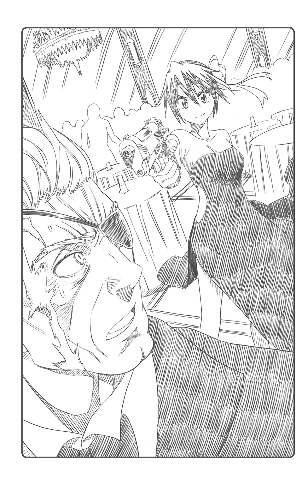
確かに、男装を好む彼女は、人に性別を間違えられることも多い。よほど勘のいい人間でなければ、二、三度会っただけで彼女の性別を看破することはできないだろう。
「だからこそ、そこにつけいる隙があった。黒虎を男だと思いこんでいた貴様は、この格好で近づく私を、ただの女性客のひとりだと勘違いしたはずだ。だからこそ、こんなに簡単に背後を取ることができた、というわけだ」
「いや、まさか、本当にオレのことを鶫だと誤解してくれるとは思わなかったけどな......」
つまり、楽を囮にして眼帯の男の目を惹きつけ、本物の黒虎である鶫が、男の背後に忍び寄って奇襲をする、というのがふたりの作戦だったのだろう。
「マジでびびったけど......どうやら、その甲斐はあったみたいだな」
内心、ひやひやしながら黒虎を演じていたのだろう。楽は額の汗をぬぐいつつ、安堵の笑みを浮かべている。
一方、眼帯の男は、悔しそうに楽と鶫を交互に見ていた。
「なるほど、すっかり騙されてしまったというわけか」
欧米で生活している人間には、アジア人の顔を見分けることが難しいという。千棘も、日本に来たばかりの頃はそれで少し戸惑った経験がある。
数年前に一度会ったきりで、黒髪で短髪の少年、という印象しかなければ、鶫の顔を間違えてもおかしくはない。
男は、ドレス姿の鶫を見て、やれやれと首を振った。
「あの修羅のような少年が、たった三年でここまで美しい女性に変貌するとは......。その容姿なら、裏社会のほとんどの人間が、君を見ても黒虎だとは気づかないだろう。性別を隠しているのは、潜入任務か何かのためなのか？」
実はただ育ての親が、いまだに彼女を男だと誤解しているだけなのだが、あえて千棘はそのことを口には出さないでおくことにした。
鶫は銃を突きつけたまま、口を開いた。
「それで、貴様はどうするつもりなのだ？ まだ続けるつもりなのか？」
「......」
男は無言のまま、銃を床に投げ捨てた。もはや、鶫に対しての復讐は困難であると悟ったのだろう。
相手の降伏の姿勢を見て、鶫もまた、銃を下ろした。
「潔いものだな」
「言っただろう。無益な殺生をするつもりはない、と」
ビーハイブの黒服たちが、眼帯の男の左右の腕をつかみ、そのまま床へと引き倒してしまった。彼らは、鶫とこの男が敵対している様子を見て、ようやくパーティに賊が入りこんだことを認識したのだろう。
床に押さえつけられた隻眼の男は、「ぐうっ」と呻き声を上げた。
「黒き虎よ。私の敗因は、君の性別を見抜けなかったことではない......。こんなバカげた芝居に協力するような命知らずが君の傍にいることを、見抜けなかったことだ」
眼帯の男が、楽を見上げてつぶやいた。
「三年前には孤独な魔獣だった君が、他人を信頼し共闘するようになっているとはな。完全な計算違いだったよ......」
「この国に来て私が強くなれたのは、コイツや、みんなのおかげなんだ」
そう告げる鶫の頰に、少し赤みが差しているように見えたのは、千棘の気のせいだったのだろうか。
※
ホールで起こった一連の騒動は、隻眼の男が拘束されたことですぐに収束した。
小咲らも含め、ほとんどの招待客は最後まで余興だと思っていたらしい。彼らは今や何事もなかったかのようにパーティに戻っていた。
捕らえられたあのアントライオンの男は、この後ビーハイブの幹部たちに引き渡され、内々に処理されることになるだろう。
鶫は、誰も傷つけることなく騒動を終えられたことに安堵し、テラスでひとりため息をついていた。
――どうやら、あいつには感謝しなければならないようだな。
当の一条楽は、再びホール内でドレス姿の友人たちに囲まれていた。
「――それで楽様、結局私と桐崎さんのドレスでは、どちらが好みなんです？」
「万里花......あんたいつまでそんなことにこだわってるのよ」
「やっぱり小咲が一番よね。一条君」
「る、るりちゃんもしつこいよ～！」
先ほどまでの男らしさはどこへやら、少女たちに詰め寄られ、楽はまたしても困ったような愛想笑いを浮かべていた。
――まあ、今日ぐらいは大目に見ておいてやろう。
鶫はふっと口元を緩める。
今夜は彼を散々な目に遭わせてしまった負い目もあるし、お嬢の恋人として根性を叩き直すのはまたの機会にするのが、優しさというものだ。
ぼんやりと夜景を見ながらそんなことを考えていると、楽の声が聞こえてきた。
「いや、誰のドレスが一番かなんて、センスがないオレにはわかんねえけど......今夜この会場で一番輝いてたのは、やっぱ鶫なんじゃねえか？」
「ん？」
急に名前を呼ばれたことに驚き、鶫はホールに目を向けた。
万里花や小咲が、「なるほど」といった様子でうなずいている。
「確かに、鶫さんの黒のドレスは素敵ですわね。急に着替えて出てくるなんて、あれは何のパフォーマンスだったんです？」
「そうそう。突然現れて、怖い顔の人に銃を突きつけちゃうんだもん......。映画のワンシーンかと思っちゃった」
「だよねー。誠士郎ちゃん、女優も顔負けのプロポーションだし？ ぶっちゃけセクシーさならナンバーワンかも」
友人たちに思いがけない賞賛を受け、鶫は鼻がむず痒くなるのを感じた。
ドレスを着たのは、ただ必要にかられてのことだったのだが、こうして褒められてみると、それもなんだか悪い気はしない。
「なんたって、つぐみは私の大親友で、自慢のヒーローだからね」
千棘が、ふふん、と鼻を鳴らしている。
「――ねえ、つぐみもこっちおいでよ！」
「あ、はい！」
こっ恥ずかしさに顔を赤らめながら、鶫はホールへと入ることにした。友人たちは、いつもと変わらない笑顔を鶫に向けてくれている。
――みんなとは違う私だからこそ、みんなを守ることができる。
もし彼らの笑顔を奪う敵が現れたら、そのときは全部まとめてぶっ飛ばしてやる。
それができるなら、黒虎としての自分も、そう悪いものではないな――鶫は、そんな風に思うのだった。
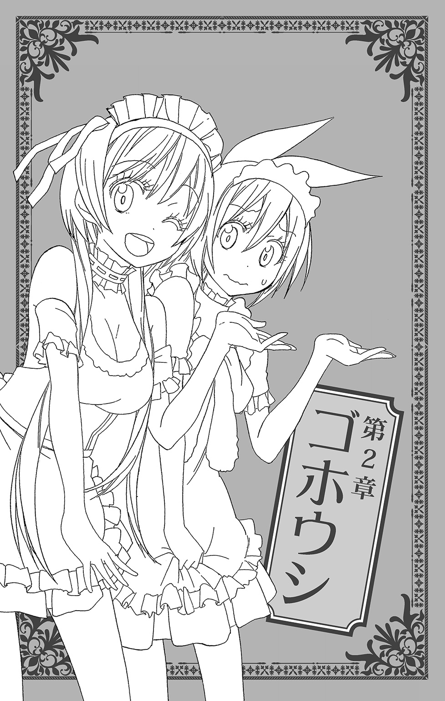
パステルカラーの壁紙に、大きな採光窓。カウンターには色とりどりのボトルやフルーツが並べられ、喫茶店の店内は可愛らしい雰囲気に包まれていた。
先ほどから入口のドアベルがカランコロン、と鳴るたびに「いらっしゃいませ、ご主人様～」という黄色い声が聞こえてくる。
このテストが無事に終われば、自分も笑顔でそのセリフを言うことになるのだろう。それを思うと、桐崎千棘はなんとなく複雑な心境に捉われた。
店の奥のソファーに座り、千棘はケチャップのボトルを握りしめていた。隣に座るお客様に、〝文字入れオムライス〟をご提供するためである。
――ここはやっぱり、〝ＬＯＶＥ〟とか書くべきなのかしら......。
ご主人様――一条楽の顔を盗み見つつ、千棘は唸った。
「い、いや......そんなににらみつけられてもな」
普段とは違う雰囲気に緊張しているのだろうか、楽は冷や汗を浮かべてカチカチに固まっていた。
もちろん彼のその気持ちもわかる。だが、緊張しているのはむしろ千棘のほうであった。
――うわあ、ダメだ。痛すぎる。いくらなんでも、オムライスに〝ＬＯＶＥ〟だなんて、私のキャラじゃないわ......！
今日の千棘の装いは、白いエプロンに膝上十センチのミニスカート姿というものだった。頭に載せているのも、いつものリボンとカチューシャである。胸に着けた「ちとげ」の名札が、なんだかすごく、こっ恥ずかしい。
ありていに言ってしまえば、今日の千棘はメイドであった。しかもいわゆる、メイド喫茶仕様の、露出度高めな衣装に身を包んだメイドである。
千棘が逡巡していると、ソファーの奥――楽を挟んだ向こう側から、猫なで声が聞こえてきた。
「ねえ、楽様。そんなゴリラ女のオムライスよりも、私の特製愛情入りパフェのほうが美味しいですわよ？ ......ほら、『美味しくなあれ、きゅんきゅんきゅーん♥』って」
こぼれ落ちそうなほどたっぷりとクリームを掬ったスプーンを片手に、橘万里花がニコリと微笑んでいた。
千棘と同じく、彼女もここの試用店員なのだが、衣装はまるで千棘とは違っていた。
いったいどこから仕入れてきたものなのか、肩口や太ももを大きく露出させたデザインで、胸の谷間がことさらに強調されている。千棘のものよりも数段いかがわしいというか、かなり扇情的な衣装である。
「ほら、楽様、あーん」
万里花は楽の腕を抱きしめ、彼の肩に頭を預けながら、空いた手でスプーンを彼の口元へと運んだ。
やはりこの女、あざとい。あざとすぎる。
「ちょ、ちょっと万里花？ あんた、うちのダーリンにくっつきすぎじゃないの？」
「あら、別にいいじゃありませんか。だって今日の楽様は、桐崎さんの彼氏である前に、私のご主人様なんですもの」
ですよね楽様、と言いつつ、さらに万里花は楽に身体を密着させた。
「ちょ、ちょっと待て、橘......！」
さすがに楽も驚いたのか、腰を浮き上がらせた。
それもそのはず、彼の左腕には、万里花が思いっきり胸を当てているのだ。これには千棘もムッとくる。
「あんたのご主人様じゃなくて、私のご主人様よ！」
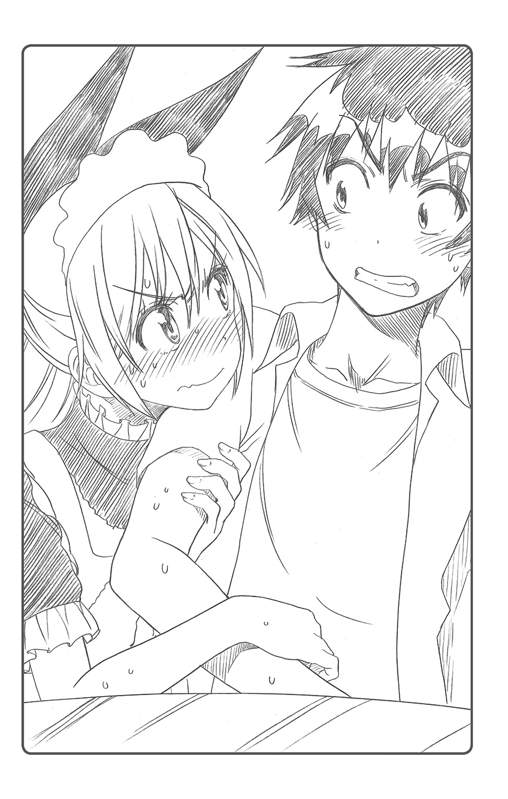
ケチャップを放り投げ、千棘は負けじと、楽の右腕をぎゅっと抱きしめた。
「お、おい、千棘まで......！ なんだ、なんなんだ!? 今日のお前ら、いったいどうしたんだ!?」
両脇からメイド姿の少女に抱きしめられ、楽があたふたと首を左右に振った。
もちろん普段の千棘には、楽相手にこんな積極的なアプローチは絶対にできない。
だが、今日だけは話が別だ。
――このご奉仕で、万里花に負けるわけにはいかないんだから......！
※
それは、一時間ほど前のことだった。
「メイド喫茶でアルバイト、ですか......。私はやはり、賛成できませんね」
一緒に店の前まで来たというのに、鶫誠士郎はいまだに浮かない顔をしていた。駅前のメイド喫茶『ラ・仁義 一号店』の看板を見て、ため息をついている。
千棘は、情報誌に載っていた〝高額短期アルバイト〟〝メイド急募〟の文字を見て、アルバイトをすることを思いついた。そこで、面接のためにこの店を訪れようとしていたのである。
しかし鶫は、千棘がアルバイトをすることにどうも納得がいっていないようだ。
「だいいち、桐崎家の娘であるお嬢が、そこまでお金に困っているわけではないでしょうに」
「まあそりゃ、お小遣いはそこそこあるけどさ。でも、ママにプレゼントを買うには、やっぱり自分で稼いだお金じゃないとね」
去年のクリスマス、久しぶりに多忙な母と過ごせたことは、千棘にとっては嬉しい思い出だった。そこで、あのときのお礼に母の日のプレゼントをするべく、千棘は日々金策に考えを巡らせていたのだが、どうにもいい手段が見つからなかった。
だが、もう母の日まで一か月を切った今日、ようやく天は救いの手を差し伸べてくれたようだ。都合よく、バイト情報誌で短期高収入のアルバイトを見つけたのである。
「ですが、お嬢のようなお方が給仕の真似事で金銭を得るなど......」
「しょうがないわよ。母の日までの短期間に稼げる仕事って、他にないんだから」
不安げな様子の鶫を安心させるべく、千棘は微笑みを浮かべた。
「大丈夫だって。変なお店じゃなさそうだし。......それに前々から、メイド服っていうのもちょっと可愛いと思ってたしね」
鶫にそう言って、千棘は店のドアを開いた。
「先に帰ってていいよ」と伝えたのだが、彼女は面接が終わるまで店の外で待っているという。まったく、本当に律儀というか、過保護な子だ。
店に入った千棘は、さっそくスタッフルームに足を踏み入れた。そこで店長と思しき白スーツの男性に、バイトの面接で来た件を伝える。
しかし、その店長の反応は芳しいものではなかった。
「......ああ、そりゃタイミングが悪かったな、嬢ちゃん」
「え？」
「実はついさっき、同じようにメイド希望の面接で来た子がいてな。今回の募集はその子に決めようと思ってたところなんだよ」
そう言って店長は残念そうに、傷だらけのスキンヘッドを振った。
「あー......そうですか」
ついてないな、と、千棘は肩を落とす。
せっかくいい仕事を見つけてラッキーだと思ったのに、ぬか喜びだったようだ。他にいい仕事の当てもないし、さてどうしたものか。
浮かない顔で千棘が踵を返そうとしたその瞬間、店長が肩をつかんだ。
「いや、ちょっと待て」
店長の鋭い目が、千棘を頭の先から足の先までジロジロと熟視する。
「――よく見れば嬢ちゃんも、さっきの子に負けず劣らず器量は良いな......。このまま返しちまうのは惜しい」
「え、あの......？」
「よし。じゃあさっきの子と一緒に入店のテストをして、成績が良かったほうを雇うことにしよう。......せっかく来てもらったのに追い返すのも忍びねえからな。どうだ？」
強面の店長が、ニコリと唇を歪ませた。
確かに彼の言うとおり、このまま手ぶらで帰るというのも悔しい。
――他にアテもないし、やってみる価値はあるわよね。
店長の申し出に千棘がうなずいたそのとき、スタッフルームの扉がガチャリと開かれた。
「店長さん、メイド服はこちらでよろしかったですか？ 私、自前のものを用意してきましたので」
その令嬢然とした口調には、聞き覚えがあった。部屋に入ってきた露出度満点のメイド少女は、あの橘万里花だったのである。
「あら、桐崎さんじゃありませんか。どうしてこちらに？」
「どうしてって、バイトの面接に来たんだけど......。もしかして万里花、あんたもそうなの？」
「ええ。可愛らしいでしょう、このメイド服」
ミニスカートの裾をつまみ、くるりと一回転。どうやら彼女は、この自前らしきメイド衣装がお気に入りらしい。
「てかあんた、前にファミレスでもバイトしてたじゃない。そっちはいいの？」
「もちろんかけ持ちですわ。私の崇高な目的のためには、お金はいくらあっても困りませんもの」
万里花が柔らかく微笑みを浮かべた。
そういえば前に彼女は「楽との結婚資金を貯める」とかなんとか言っていた。動機は相変わらず不純だが、意外に勤労少女なのだ。このお嬢様は。
「店長の言ってた『さっきの子』ってあんたのことだったのね」
予想外のライバルの登場に、千棘は苦笑いするしかなかった。
「でもね万里花。今日は私にも大事な目的があるの。だから、ここでのバイトの座は譲れないわ」
「譲れない......？ どういうことです？」
眉をひそめる万里花に、店長が事情を説明した。これから行う入店テストで、千棘と万里花を審査し、成績が良かったほうを正式に雇う――その話を聞いて、万里花は鷹揚にうなずいた。
「なるほど、そういうことですか。......結構です。どのみち私、桐崎さんに負けるつもりはありませんもの」
強気ににらみつけてくる万里花に、千棘は「望むところよ」と視線を返した。
「それで店長、そのテストってなんなんですか？」
「簡単に言えば、お客様へのご奉仕ってやつだ」
そう言いつつ、店長はスタッフルームの扉を開けた。ホールでは数人の店員が、客の傍に立って楽しそうにおしゃべりをしている。店長は、店の入り口のドアを指した。
「次にあのドアを開けて入ってくるお客様を、ふたりで担当してもらう。んで、お会計の際に、どちらのご奉仕がより満足いただけたかを聞いて、名前が挙がったほうの勝ちだ」
説明を聞いて、千棘は息を吞んだ。
つまりはご奉仕対決......メイド喫茶としては実に単純明快な審査である。
――いったいどんなお客さんが来るのかしら......。
万里花とともに固唾を吞んで入り口を見守っていると、すぐにカランコロン、と音を立ててドアが開いた。
「ち、ちわっーす......」
店に入ってきた人物を見て、千棘は目を丸くした。
それは、公的には自分の恋人である少年――一条楽が、どこか落ち着きがなさそうに、きょろきょろと店内を見回しながら入ってきたのである。
「あのもやし、なんでこんなお店に......!?」
※
「ふふ......ここが気持ちいいんですか、楽様？」
「あ、いや、まあ」
「遠慮しなくてもよろしいんですよ？ この耳かきコースは、楽様限定のスペシャルメニューですから。この橘万里花、楽様にならいくらでも無償でご奉仕する所存です」
ふう、と艶めかしい息をつきつつ、破廉恥メイド服の橘万里花は、楽の耳の穴をこしょこしょと綿棒でくすぐっていた。
「な、なんか妙に上手いな......。どこでこんなの覚えたんだ、橘」
彼女の太ももに頭を乗せた楽は、嬉しいのか恥ずかしいのか、ぎこちない苦笑いを浮かべていた。
「......ったく」
もっとも、それを脇で見ている千棘のほうが、さらにぎこちない顔をしていたのかもしれない。万里花に積極的にご奉仕される楽を見ていると、どうも気分が落ち着かないのだ。
「てか、まさか、あんたがメイド喫茶なんかに出入りしてるとはね」
「だから何度も説明してるだろ。ここの店長は、前は集英組の組員だったんだよ。......堅気になったあとも、親父が心配しててな。『様子見て来い』って言われて来ただけだよ」
別に常連客とか、そういうわけじゃねえ――寝そべったままの楽が言った。
どうやらあのコワモテの店長さんは、元極道のひとだったらしい。
日本のヤクザには、足抜けしてメイド喫茶を開く者も多いのだろうか。さすがクールジャパン、侮れない。
「まあ、確かに事情はわかったけどさ......。でもなんでよりによって、私と万里花のご奉仕相手があんたなのかしらね。さすがに運命のイタズラを感じるわ......」
結局、楽があのとき偶然店に入ってきたせいで、彼をご奉仕するのがテスト内容になってしまった。本来コイツは客ではないはずなのだが、「せっかくだから、坊ちゃんに判断してもらいやしょう」という店長の鶴の一声で、こんなことになってしまったのである。
知り合い相手だと、こういうのはどうにもやりにくい。
楽もこちらの衣装が珍しいのか、ちらちらと顔を赤らめつつ見ているようだ。それがなんだか妙に恥ずかしくて、そわそわしてしまう。
「そうですか？ 私はむしろ、運命の導きを感じましたけれどね。最初のお客様が楽様だなんて、幸せです。......いっそのこと、楽様専属メイドとしてここで働かせていただけないものでしょうか」
「いや、さすがにそりゃあ無理なんじゃねえのかな......ははは」
「まあたとえバイトでなくとも、私、橘万里花、ご用命があればいつでも楽様のメイドになる準備はできておりますけれど。......そこの金髪に飽きたら、いつでもお呼びくださいませ」
そう言いつつ、万里花はニヤリと千棘に流し目を送った。余裕の表情で、こちらを挑発している。
――マズイわね......。
千棘は若干、焦りを感じていた。このご奉仕勝負、どうにも万里花がアグレッシブ過ぎて、千棘は後手後手に回っているような気がする。少なくとも千棘には、楽相手にあんな膝枕アンド耳かきなど、できる度胸はないのだから。
苛立ちのあまり、つい口調を荒らげてしまう。
「ふん、バカもやしも大概よ......デレデレしちゃって」
「あら、なんですか桐崎さん？ ツンデレ罵倒コースですか」
「ち、違うわよ！」
とにかく、このあたりで一発挽回しないと万里花に勝つことは難しい。母の日のためにも、店員の座を譲るわけにはいかないのだ。......それからあと一応、恋人の座も。
千棘は意を決して、口を開いた。
「ら、楽！ チェキるわよ！」
「は？ ちぇきる？」
楽がぽかん、とした表情を浮かべた。
彼が知らないのも無理はない。どうやらこのメイド業界では、インスタントカメラで店員とお客様がツーショットを撮ることを〝チェキる〟などというらしい。千棘も先ほど知ったばかりの業界用語である。
万里花が、ふっと鼻で笑った。
「ツーショット写真とはまた可愛らしいものですね。でもそんな、恋人同士なら当然するようなことを今さらやったところで、楽様が満足できるとは思えませんが......？」
千棘は「うっ......」と詰まる。恋人同士なら、とは言うが、そもそも楽と千棘は本物の恋人同士ではない。ツーショット写真だってハードルが高い行為なのだ。
「な、なにもただのチェキをするだなんて言ってないわよ？ そう、えーと――」
万里花に舐められっぱなしというわけにもいかない。そこで千棘は、大胆にもこう言い放った。
「ハグチェキよ、ハグチェキ！ 楽、ハグチェキするわよ！」
「は、ハグチェキ!?」
万里花の顔色が変わった。
ハグチェキとは、つまりハグをしながらのチェキ――メイドがご主人様を「ぎゅっ」と抱きしめるポーズで、ラブラブなツーショット写真を撮影することである。
「そんなの、メニュー表にないじゃありませんか！ 卑怯ですよ、桐崎さん！」
「あんただって〝楽様限定のスペシャルメニュー〟とか言ってたでしょ。おあいこよ」
むむむ、と頰を膨らませる万里花。策士策に溺れる、というやつである。
楽が顔を真っ赤に染め、あわてて上体を起こした。
「お、お前マジでそんなことする気か......？ ここ人目もあるのに......」
「べ、別にいいじゃない。あんた、私のダーリンでしょう？」
いくら恋人のフリをしているからとはいえ、人前でハグは千棘だってかなり恥ずかしい。だがこれも、母の日のプレゼントを買うためなのだ。背に腹はかえられない。
そんな千棘の強い意志を視線から感じたのか、楽はしぶしぶうなずいた。
「わかったよ。しょうがねえな」
楽の承諾が得られたところで、千棘はソファーから少し腰を上げ、楽の傍へと身を寄せた。
「う、うん。......それじゃ、いくわよ」
楽の息遣いを感じる距離。千棘は改めて、躊躇を覚えてしまった。
そもそも普段の生活で、楽とこんなに接近することがあっただろうか。じっくり考えてみると、なんだか鼓動が高鳴り、顔が火照ってくるのを感じる。
楽もまた、少し困ったような表情でこちらを見ていた。
――は、恥ずかしい......！
千棘は頭を振った。いや、大丈夫。今の自分たちは、ご主人様とメイド――いつもとは違った関係なのである。ご奉仕ならば、こういうことをしても平気なのだ。
――私はメイド、私はメイド、私はメイド.........。
千棘は自分にそう言い聞かせた。すると、こうしてメイド服を着ているだけで、自分が楽の従者に思えてくるから不思議なものだ。
ご主人様の言いつけだから、ハグも仕方がない。そう、仕方がないのだ――。
「はいはい、ハグチェキやるならさっさと抱き合ってくださいな」
悶々としていたら、万里花ににらみつけられてしまった。彼女はお店のカメラを構えて、こちらを撮影しようとしてくれているようだ。
ドキドキ鳴る胸を押さえ、千棘は深呼吸をした。
「あ、うん......。ご、ご主人様、それではハグさせていただきます......」
一旦やると言ってしまった以上、もうハグチェキを敢行するしかない。あとはもう、勢いである。
腹をくくって、千棘は楽を思いきり抱きしめた。
「......ええいっ！」
何故か、その瞬間、ゴキリ、という鈍い音とともに楽の悲鳴が聞こえた。
「ふぐおおおおおっ!?」
「え？ なに？」
「肩っ......！ これ、関節っ......！ 外れてる......!?」
「か、関節!?」
薄目を開けて見てみれば、楽が目を見開き、大口を開けて悶え苦しんでいた。どうやら千棘が勢いよく肩口に抱きついたせいで、楽の左肩がはずれてしまったらしい。
「て、てめえ......少しは加減つーものを考えろよ！」
涙目で楽が怒鳴りつけてきた。
しかし千棘も乙女のはしくれ。恥ずかしいものは恥ずかしい。勢いで多少は力が入ってしまっても仕方がないのだ。
「ちょ、は、放してくれっ......！」
「だ、ダメよ！」
せっかく恥ずかしいのを我慢して抱きしめたのに、いま楽に逃げられては元も子もない。そこで、千棘はさらに力をこめることにした。
「ぎゃああああああああっ!?」
案の定、再び悲鳴が上がった。
「関節の一個や二個我慢してよ！ こっちだって恥ずかしいんだから！ ......ま、万里花、ほら早く撮って！」
「......はあ、じゃあ撮りますわよー。はい、チーズ」
気のない万里花のかけ声でシャッターが押される。
そのあとも、千棘が何とか肩を嵌め直すまで、楽はずっと苦しげな喘ぎを漏らしていた。
「メイド喫茶で冥土に送られるかと思った......。いや、冗談じゃなく」
「あ、あはは、ご主人様うまーい......」
いまだに呻いている楽の背をさすりながら、千棘は心の中で「ごめんなさい」と謝ることしかできなかった。出来上がった写真はもはや、ハグチェキというか絞め技チェキである。関節技を食らった楽の、青い顔が痛々しい。
――ご奉仕ってのも難しいもんなのね......。
だが、弱音を吐くわけにもいかない。なにより、このご奉仕勝負には母の日のプレゼントがかかっているのだから。
一方、万里花は、千棘のご奉仕が功を奏さなかったのを見て、薄く笑みを浮かべていた。
彼女はカメラを脇に置くと、テーブルの中央に置かれたグラスに、おもむろに手を伸ばした。
「さて、次は私の番ですわね」
グラスの中に入っているのは、数本のチョコレートスティック菓子だ。万里花はその中から一本をつまみあげ、満面の笑みを浮かべた。
「楽様、ゲームしましょう、ゲーム」
「ゲーム？」
「いやですわ楽様。このお菓子で行うゲームといえば、もうアレしかないではありませんか。こうやって、お互いに端っこと端っこを咥えて......」
万里花はチョコレートスティックの先端を軽く咥え、「んー」と、もう一方の端を楽に突き出した。
楽が「ぶほおっ!?」と噴き出したのも無理はない。これは間違いなく、お菓子を両端から食べることによってキスに到達するという、国民的に有名な例のラブラブゲームだろう。
千棘はあわてて、万里花の口からスティック菓子を引っこ抜いた。
「ちょ、ちょっと万里花！ いくらなんでもそれは反則じゃない!?」
「邪魔をなさらないでください桐崎さん。さっきはチェキを大人しく譲ってあげたんですから、私の順番は黙って見ているのが筋というものですわよ」
「んなっ!?」
万里花が、ふふん、と笑った。
そういえばさきほど万里花は、彼女にしてはやけに大人しく撮影係に回ったものだった。普段なら「私もツーショット撮りますわ！」などと言ってもおかしくはなかったのに。
それがよもや、さらにアブない行為を要求するための前フリだったとは。
「だ、ダメに決まってるでしょ、そんなの！」
このままでは、強引に押し切られかねない。千棘は、万里花の肩をつかんで止めた。
「ていうか、恋人の私を差し置いて楽とキスしようだなんて、そんなの見過ごせないわよ！」
「あーら、別にいいじゃありませんか。大体、もう私と楽様はキスを済ませているんですよ？ 何を今さらこんなお遊びごときで」
うふふ、と笑顔を浮かべつつ、万里花は再び新たなチョコスティックを口に咥えた。そして千棘の手を振り払うと、実に自然な動作で、楽をソファーへと押し倒したのだった。
「ごひゅひんはまー！ おほうひいはひまふわ！」
「うお!? 落ち着け橘！ 誰もそんなことは頼んでねえよ！」
「そ、そうよ！ 強引すぎるにもほどがあるってば！」
楽に身体を重ねようとする万里花を、後ろから羽交い絞めにして何とか食い止める。千棘が全力で引っ張っても咥えたお菓子を決して離そうとしないのだから、すごい執念だ。
「離れなさいってば、もう！」
この橘万里花という少女、一見華奢に見えるが、楽がらみのこととなるととんでもないポテンシャルを発揮する。侮れない女である。
「はにゃれるもんれふかぁぁぁっ！」
目を血走らせた万里花をどうやって大人しくさせようか、千棘が思案に暮れていると、
「おい、嬢ちゃんたち、ちょっといいか？」
渋い男性の声がかけられ、万里花と千棘はピタリと静止する。
振り向いてみると、こちらのテーブルのほうに、スキンヘッドの店長がやってくるのが見えた。騒ぎ過ぎたのはマズかったかも、と千棘は一瞬身構えたが、どうやら怒られるということではなさそうだ。
「え？」
店長の隣に立っていた人物を見て、千棘は首をかしげた。
どうしてここに鶫がいるのだろう。しかも千棘と同じ、メイド服姿で。
こちらの訝しむような視線に気づいたのか、鶫はあわてて口を開いた。
「あの、お嬢。私もよくわからないのですが、なぜか成り行きでこんなことに......」
鶫は、店長にちら、と視線を送る。
店長は腕組みをして、「実は」と説明を始めた。
「いや、さっきからずっと店の前で待ちぼうけしてるこの子が気になってな。何してんのかって声をかけたんだよ」
ミニスカメイド姿の鶫を見て、店長は満足げにうなずく。
「そしたら、この子、『お仕えしてる方を待っているだけだ』とか言うじゃねえか。驚いたよ、まるで忠誠心の塊だもんな......。この子を見た瞬間、俺は思ったね。彼女には、天性のメイドの才能がある、と」
そういえば鶫はさっき、外で待っていると言っていた。
まさか彼女は、千棘と万里花がご奉仕勝負をしている間中、まるで忠犬ハチ公のごとく微動だにせず、ただ黙って立っていたのではないだろうか。
彼女の忍耐強さを考えれば、それもありうるかもしれない。
「ルックスもスタイルも抜群、おまけに性格もよさそうだったしな。試しにメイド服着せて調理や掃除その他もろもろの雑用を手伝ってもらったんだが、どれもソツなくこなしやがる。やはり俺の目にくるいはなかったってことだ」
鶫は恥ずかしそうに顔を赤らめつつ、コホンと咳払いをする。
「いえ、私は、ここでお嬢が給仕として働くのなら、何か手伝えることはないかと思ってやっただけですが」
「はあ、つぐみが......」
実際、彼女は千棘の護衛としてもよく気が利くし、礼儀作法もバッチリだ。その可愛らしいメイド衣装も、とても似合っている。メイドの才能は十分すぎるほどに備わっているのだ。
だが、この流れは非常にまずい――千棘は予期せぬ伏兵の出現に、不安を覚えた。
店長は、千棘と万里花のほうを見て、笑いながら後ろ頭を搔く。
「すまねえな、嬢ちゃんたち。今回の店員の募集は、この子に決めた。せっかくテストを受けてもらってなんだが、ま、運がなかったと思って諦めてくれや」
「そ、そんな......」
意外な勝負の幕切れに、千棘はがっくりと肩を落とした。
千棘の落胆を感じ取ったのか、鶫があわてて駆け寄ってきた。
「あ、で、でもお嬢！ 私がお嬢の代わりにここで給仕のアルバイトをすれば、金策はなんとかなるかも――」
「だから、自分で稼がなきゃしょうがないんだってば......」
深いため息をひとつつく。
傍らを見れば万里花も、スティック菓子を咥えながら、不満そうな表情を浮かべていた。
ライバルとして反目し合っていた相手だったが、さすがにこの勝負の幕切れについてだけは、彼女と気持ちが通じ合ったようだ。
※
「まさかつぐみに勝負を持っていかれちゃうとはね......」
夕暮れに染まる街を歩きながら、千棘はつぶやいた。散り始めた桜の街路樹も紅に色づき、何故だか哀愁を感じてしまう。
鶫自身、さすがに千棘を押しのけてまでバイトをする理由もなかったようで、店長の申し出は辞退することにしたらしい。しかし店長のほうはよほど鶫に惚れこんだのか、それでも強いオファーをかけたようだ。鶫はそれを断るべく、いまだに「ラ・仁義」で交渉中だった。
一方、万里花は、あの後すぐにアルバイト情報誌片手に電話をかけ始めていた。他の仕事を探し、再び面接に行くつもりなのだろう。見上げたバイタリティだ。
すっかりやる気をなくした千棘には、楽と一緒に帰宅をするしか選択肢がなかった。
「まあ、そんなに気を落とすなよ千棘。ああいうバイトがしたけりゃ、働き口は他にもあるんじゃねえの？ お前のメイド服姿も、まあ、なかなか似合ってたしな」
「......あー、はいはい。取ってつけたようなフォローありがと」
ぷい、と楽から顔を背ける。面と向かって「似合ってた」などと言われては、ちょっぴり照れてしまうではないか。
「でも、今から他のアルバイトを探して面接――なんて時間もないのよね。はあ......」
千棘は、本日何度目になるかわからないため息をついた。
「これじゃママにプレゼント送れないかも......」
「ん？ ママって、華さんのことか？」
興味深げな楽に、千棘はアルバイトを探していた理由を説明することした。
母の日までにまとまった金銭を得なければ、プレゼントを買うことはできないこと。そして、そのタイムリミットは絶望的に近づいているということも。
「なるほど、母親想いのいい話じゃねえか」
「いや、結局プレゼントは買えなそうだし、母親想いでもなんでもないんだけどね」
「そうか？ オレは別に、プレゼントなんて金をかけたもんじゃなくてもいいと思うけどな」
楽の自信ありげな言葉に、千棘は首をかしげた。
「どういうこと？」
※
五月の第二日曜日は、良く晴れた日だった。
もっとも、たとえ晴天の日曜日であったとしても、桐崎華に休暇はない。今日もまた、使えない夫や部下たちに指示を出したり、無駄な書類の山に忙殺されたりして、胃にストレスを蓄積していくのだろう。少なくとも、今朝オフィスに到着した段階ではそう思っていた。デスクに届けられた、娘からのプレゼントを見るまでは。
「ぷっ......！」
封筒に入っていた写真を見て、華は思わず噴き出してしまった。
――メイド服姿の我が娘が、何故かあの恋人役の少年を締め落としている。
こんな写真がどういう状況の下で撮影されたのかは、さっぱりわからない。同封の手紙には、多忙な華を労る言葉が連ねてあるだけだ。
ただ、写真のふたりの様子が、まるで若いころの自分と夫を見ているようで、つい笑みを堪えきれなくなってしまったのだった。
「ま、仲良くやっているようで何よりだわ」
手紙と写真をデスクの引き出しに入れ、華は、うーん、と背伸びをした。
今年のクリスマスには、あの子にメイド服でも送ってあげようかしら――そんなことを思いつつ、華は山積みの書類に手を伸ばすのだった。
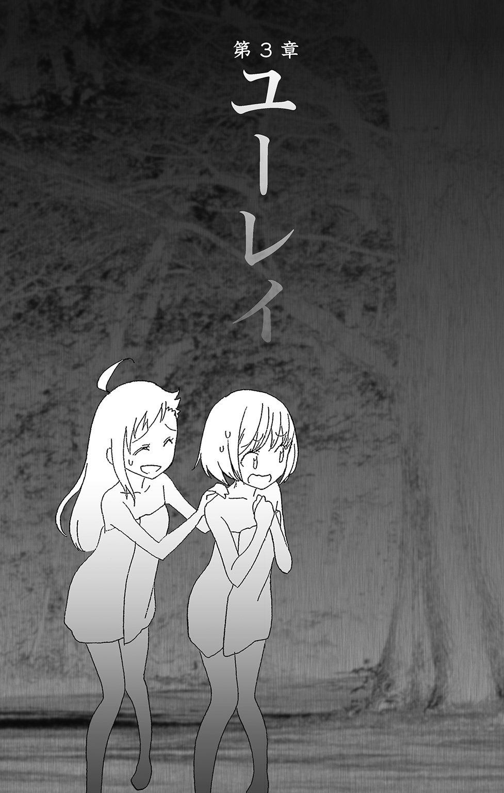
鹿おどしの風流な音色が、広い大浴場に響き渡った。
小野寺春は、温泉にのんびりと身体をゆだね、リラックスタイムを満喫していた。
「あー......癒されるー......。気持ちいいね、風ちゃん」
「そうだね。露天風呂なんて、普段入る機会ないもんね」
ふたりで湯船に浸かり、ほっこりと息をつく。
春たち一年生が林間学校で訪れたのは、周囲を自然に囲まれた郊外の合宿所だった。大浴場も天然の岩石を利用した造りの露天風呂になっていて、都会ではなかなか味わうことのできない解放感に浸ることができる。めいっぱい伸ばした手足の先から、今日一日分のフィールドワークの疲れが、湯船に溶けて消えていくようだった。
「林間学校最高だなあ......。毎週来てもいいくらいだなあ」
「あはは。気持ちわかるー。でも、毎週はさすがに大変かなぁ」
白い湯気に満たされた大浴場には、他の生徒たちの姿はなかった。先ほどまで先生に頼まれ、ふたりで夕食の片づけを手伝っていたため、クラスメートたちと入浴の時間がずれてしまったのだ。
現在、時刻は午後九時ちょっと前。入浴はだいぶ遅くなってしまったが、その分、貸切状態の露天風呂を、風ちゃんと一緒に楽しむことができたのはラッキーだった。
「ホントいいよね、温泉って。こうやって春とふたりでお肌の触れ合いができるし」
湯船の中、そう言って風ちゃんが身を寄せてくる。二の腕に彼女の柔らかさを感じ、春はついどきっとしてしまう。
「くっつきすぎだよ。風ちゃん」
「いいじゃない。私と春の仲なんだし」
まあ女の子同士だし、たまにはこういうのも悪くないか――そんなことを思いつつ、春は口を開いた。
「温泉の他にもさ、おっきな部屋で雑魚寝したりとか、みんなでカレー作ったりとか......あっという間だったけど、結構楽しかったよね」
「うん、明日帰るっていうのがもったいないくらい」
二泊三日という時間は、思ったよりも早く過ぎ去るものだった。普段と違う集団生活というのも、想像していた以上に楽しい。四月に高校一年生として出会ったクラスメートたちとも、この林間学校中にずいぶん仲良くなれた気がした。
――若干一名、まだ距離を感じる子はいるけど......。
春の脳裏に浮かんでいたのは、クラスで隣の席の、ちょっと変わった外国人の女の子だ。自由時間などにちょくちょく、春は彼女に何度か話しかけてみたりしたのだが、そっけない対応をとられてばかりだった気がする。友達になれれば楽しい子だとは思うのだが、なかなかうまくはいかないものだ。
隣の風ちゃんが、夜空を見上げながら口を開いた。
「これであと、肝試しさえ中止にならなかったら完璧だったのになー......」
「本当なら、今頃やってる予定だったんだっけ......。残念だよね」
林間学校の二日目の夜に、森の中で肝試しをやるのがうちの学校の定例行事だったらしい。少なくとも、一学年上の代まではそうだったようだ。
姉の小咲から聞いたところによれば、去年の肝試しはなかなか盛り上がったらしい。くじ引きでペアを組むドキドキ感とか、幽霊役としてクラスメートを驚かせるワクワク感とか、話を聞いただけでも面白そうだった。
しかし、姉からそんな話を聞いて楽しみにしていただけに、今年は肝試しが中止になってしまったと聞いた時には、非常に残念だった。
「先生たち、なんで中止になんてするかなあ......」
「もしかして、あの噂のせいかもね」
「噂？」
風ちゃんと一緒にいったん湯船から上がり、岩の上に腰を下ろした。火照った身体に、冷たい外気が心地よい。
「風ちゃん、中止の理由知ってるの？」
風ちゃんは、「うん」とうなずいた。その表情には、なにやら深刻そうな色が浮かんでいる。
「去年の肝試しの最中、森の中でいなくなっちゃったんだって。女の子が」
「え......。いなくなったって、行方不明ってこと？」
それはいつもにこにこしている彼女には珍しい、真面目な表情だった。
「神隠し......か何かなのかな。先生たちもずいぶん捜し回ったみたいなんだけど、いなくなっちゃった女の子は結局見つからなかったみたい。警察とか捜索隊とかにも頼んで、何日も捜してもらったそうだけど、無駄だったんだって」
「うそ......」
「その子は最後まで誰にも見つけてもらえないまま、死んじゃったって言われてる。まだ死体も見つかってないんだって。崖や沼に落ちちゃったのか、それとも、動物に食べられちゃったのか――」
「そ、そんな話、聞いたことないよ？ お姉ちゃんも、去年の林間学校は普通に楽しかったって言ってただけだし......」
「それは、春のことを気遣ってくれたんじゃないかな。女子生徒が失踪しちゃったなんて言ったら、林間学校楽しめなくなっちゃうもん。......それに、事件のことについては先輩たちの代で箝口令も敷かれてたみたいだし......」
さあっと冷たい風が吹き、森の木々が風に揺れる。風ちゃんは声のトーンを落とし、じっとその様子を見つめていた。
「――で、その話には、まだ続きがあるの。その子がいなくなっちゃってからなんだけど、この森、〝出る〟ようになっちゃったんだって」
「出るって、まさか」
「そう、幽霊。......髪の長い女の子の幽霊が、森の中を彷徨っているらしいの。血まみれの、うちの学校の体操着を着てね」
「ち、血まみれ......？」
「うん。それで、彼女と目が合うと虚ろな瞳で『こっちへおいで、一緒に行こう』って誘ってくるんだって......」
「ちょ、ちょっと風ちゃん、冗談やめてよ」
背中にぶるっと悪寒が走った。温かい温泉に浸かっているはずなのに、どうにも身が凍える思いがする。
「その子に〝連れて〟行かれて、いなくなっちゃったハイキング客も結構多いんだって。この一年で、もう五人も六人も、森の中で行方不明になってるみたい」
「そ、そんなに......!?」
風ちゃんの話を聞いて、春はごくり、と喉を鳴らした。
「誰にも見つけてもらえなかったのが寂しくて、森に来る人を神隠しに遭わせちゃうのかな。たとえばこんなふうに――」
突然風ちゃんが目を見開き、がばっと春の身体に覆いかぶさってきた。
「『ねえ!? どうして私を見つけてくれなかったの!?』」
「ぎゃあああああああああああああ!?」
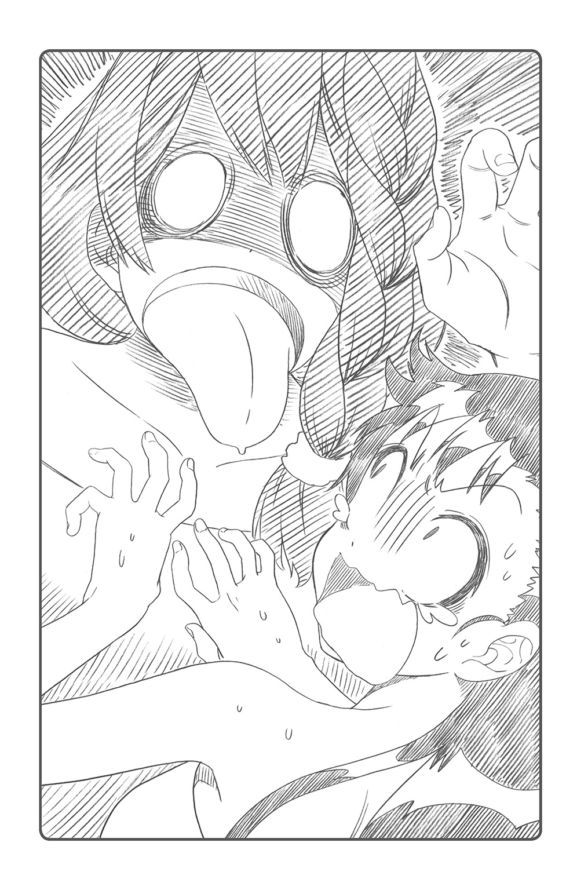
突然の風ちゃんの変貌に驚いて体勢を崩した春は、ざぶん、と頭から湯船の中に突っこんでしまった。
「......ぷはっ！ お、脅かさないでよ風ちゃん！」
「あはは、ごめんごめん。冗談」
ぺろり、と舌を出して見せる風ちゃん。それは、いつもの柔らかい彼女の笑顔だった。
「もう、風ちゃんのいじわるー」
「まあ、ただの噂話だし、気にすることもないよ」
しかしその幽霊の話には、なんとなく〝ただの噂話〟だとは切り捨てられない恐ろしさがあった。彼女の語り口が妙に真に迫っていたということもあるし、それに事実、今年の肝試しは中止になってしまっているくらいなのだ。
近くの森の中に、本当に血まみれの幽霊が出たとしてもおかしくはない。
「うう......そんな噂が立ってたら、肝試しが中止になるのもしょうがないよね。お化けが出る森なんか、怖くて入れないもん」
春は両手で自分の肩を抱え、身震いした。怖い話はあまり得意ではない。さっき風ちゃんにビックリさせられたおかげで、どうにも悪寒が止まらないのだ。
「今夜はおとなしく、部屋でトランプでもしてよっか」
と、風ちゃん。
「うん。そうだね」
肝試しがないのは残念だったが、神隠しに遭うくらいなら、部屋の中で風ちゃんたちと過ごしたほうがずっといい。ババ抜きだって、十分スリルあるし。
風ちゃんは「さてと」と言いつつ立ち上がり、洗面台のほうへと向かった。
「私は先に上がるけど、春はどうする？」
「もうちょっとだけ温まってから上がる......。なんか、背中がぞくぞくしちゃって」
「あ、ごめんね。もしかして、本気で怖がらせちゃった？」
「あはは......肝試しの代わりくらいにはなったかな」
ぎこちなく笑顔を浮かべてはみたものの、春は内心、結構本気で恐怖を感じていた。
すぐ目と鼻の先の森の中に、幽霊が出るかもしれない。それも自分たちと同じ学校の、林間学校中に亡くなった、血まみれの少女の霊が。
そんな怪談を聞いてしまった以上、いくらただの噂だと念を押されても、割り切れるものではない。怖いものは怖いのだ。
下手をすれば、神隠しの犠牲者に名を連ねることになってしまうかもしれない。
――明日の自由行動は、森には近づかないようにしよう......。
固く心の中で決意して、春はしっかりと湯船に浸かりなおすのだった。
※
濡れた髪をタオルで拭きつつ、合宿所のロビーに向かう。
ロビーでは、数人の体操着姿の生徒たちがソファーで談笑したり、お菓子に舌鼓を打ったりしていた。だが、彼らの中にも、春が捜している人物は見つからない。
「おかしいな。風ちゃん。どこ行ったんだろ......」
彼女は確かに、「部屋に戻ってるね」と言って先に浴場を出たはずだった。しかし春が部屋に戻ったときには、風ちゃんの姿はなぜかそこにはなかった。
同室のクラスメートたちが言うには、どうやら彼女は春が戻って来る前に、ふらりと部屋を出て行ったらしい。
「ロビーにもいないなあ......。ジュースでも買いに行ったのかなって思ったんだけど」
各階の廊下や女子トイレなど、合宿所内で彼女がいそうなところはあらかた捜し回ったはずなのだが、風ちゃんの姿を見つけることはできなかった。
「もう、私にあれだけ怖い話聞かせておいて、いなくなるとかありえないよ。こっちはすごく心細いのに......」
ここまで捜していないということは、もしかすると他の友達に声をかけられて、別の部屋にでも遊びにでも行ってしまったのかもしれない。
「それならしょうがないかなあ......部屋で待ってるしかないか」
なんか心細いなあ、とため息をついたそのとき、
「ねえ」
ロビーの端――ローテーブルの前にひとりで座っていた女の子と、目が合った。
「――さっきからあなた、何きょろきょろしてるの。ちょっと挙動不審よ？」
そこにいたのは、切れ長の瞳が印象的な、銀髪のクラスメート――ポーラ・マッコイだった。基本的に授業は休みがちで、クラスの誰に対してもクールな態度の女の子である。妙な物をいつも持ち歩き、体操着姿でも決してマフラーを外さない、ちょっと変わり者の外国人だ。
「いや挙動不審って。......それはむしろ、こっちのセリフだよ？」
テーブルの上には、林間学校にはそぐわない物騒な品物が置かれていた。
いつか見たパイナップル型の手榴弾に、巨大なナイフが数本。白と黒の拳銃が二丁に、分解途中の長い筒。いったい何が入っているのかわからない、筆箱大の謎の黒いケースもあった。素人目にもオモチャには見えない精巧な造りの品々である。明らかにキケンな代物だった。
こんなのをテーブルの上に広げている子に挙動不審だとか言われるのは、ちょっと癪である。
「私はただ武器を手入れしてるだけ。組織のヒットマンとしては、ごく日常的な行為よ」
「うーん......。林間学校の女子高生としては、日常的な行為じゃないんだけど」
このポーラ・マッコイという少女、周りの視線を一切気にすることなく、ロビーの目立つ場所に座って平気な顔で武器を弄り回していた。
やはり、相当変わっている。林間学校に出席したのが不思議なくらいだ。
「そんなことより、あなたは何をしてるの。誰か捜しているみたいだったけど」
「あ、うん。風ちゃんを捜してるんだ。......ポーラさん、どこかで見なかった？」
「ああ、あの子」
ポーラは手元の銃に目を落としたまま、合宿所の玄関を指した。
「――あの子なら、三十分くらい前に、外に出るのを見かけたわ」
「外？」
春は眉をひそめた。
こんな夜更けに、いったい風ちゃんは外に何の用事があったのだろう。
「なんかフラフラって、森のほうに入っていったみたいだったけど」
「森に入った？ なんで？」
「さあ......私の知ったこっちゃないわね」
森には人を神隠しに遭わせる幽霊がいる――その噂話を教えてくれたのは風ちゃんだった。彼女だってあの噂の怖さを知っているはずなのだから、わざわざひとりで森に入るとは思えない。風ちゃんは好奇心だけで幽霊を見に行くほど、向こう見ずな性格ではない。そのくらい、つき合いの長い春はよく知っている。
ライフルの銃口にふうっと息を吹きかけながら、ポーラが何の気なく口を開いた。
「なんだか心ここにあらずって感じだったし。もしかして、オバケにでも取り憑かれちゃったのかもね」
「と、取り憑かれた......!?」
しかしポーラの言うことも、あながち冗談ではないかもしれない。
件の少女の幽霊が、森の中にしか出ないという保証はないのだ。この合宿所の中に現れて、風ちゃんを〝連れて〟行ってしまった可能性だってある。
――風ちゃん、まさか神隠しに遭ったんじゃ......。
よく考えてみればこの合宿所自体、もう何人もの人間が失踪したという呪われた森に囲まれているのだ。建物内に幽霊が出ないとも限らない。風ちゃんも、その失踪者たちの仲間入りをしてしまったのだろうか。
春は、さあっと背筋が凍りつくのを感じた。
「た、大変......！ 早く風ちゃんを捜しにいかなきゃ......！」
玄関の方向に足を向けた春だったが、当たり前のことに気がついて、はたと立ち止まった。
――私ひとりじゃ、あんな怖そうな森で風ちゃんを捜すなんてできないよ......。
風ちゃんは早く助けにいかねばならない。しかし、幽霊がいる森なんかに、ひとりで向かうのは危険すぎる。ミイラ取りがミイラになりかねないし、だいいち、すごく怖い。
ちらりと、ポーラに目を向ける。
「......な、何よ？」
ブルーの瞳が、怪訝そうに春を見ていた。銃の筒を手の中で弄びつつ、〝私は忙しいんだから邪魔しないで〟オーラをびんびんに発している。
「えーと、風ちゃん捜すのに、協力してくれたら嬉しいなー......って」
「は？ どうして私が？」
「だって、先生たちは絶賛宴会中で、ぐでんぐでんに酔っぱらってて頼りにならないでしょ。かといって、クラスの他の友達に頼むのも、なんか危ないから気が引けるし......。その点、ポーラさんが一緒だったら、心強いかなって思ったんだよね」
彼女はやたらと強そうな武器をたくさん持っているし、身のこなしもなんとなく普通の人とは違っている。頼り甲斐でいえば、ポーラは今この合宿所にいる人間の中でピカイチだろう。
しかし彼女は、ふん、と鼻を鳴らして、
「いやよ、めんどくさい」
「めんどくさいってそんな......結構ヒマそうに見えるけど」
「なんでわざわざ好きこのんで、夜の森になんて入らなきゃいけないのよ。あなたたちのために、ひと肌脱いでやる義理もないし......。護衛を依頼したいなら、組織を通してくれないかしらね」
そっけなく言って、ポーラは手元の銃の解体作業に戻ってしまった。完全にこちらに興味なし、といった様子だ。
まあ、こんな彼女のつれない態度も、春にとってはいつものことである。ため息をつきつつ、踵を返した。
「はあ......。そうだよねー......。さすがのポーラさんでも、幽霊の出る森は怖いよねー......」
「なんですって？」
再び顔を上げたポーラが、ぴくりと顔を引きつらせた。
「ポーラさんがその様子じゃしょうがないよね。うん。......他にもっと、幽霊に物怖じしなさそうな人を探すことにするよ。......邪魔してごめんね」
春は、それじゃ、と手を振ってその場を去ろうとした。......のだが、すぐさまポーラに肩をむんずとつかまれてしまう。
「ちょ！ ちょ、ちょっと待ちなさいよ！ それじゃなんか私、オバケが怖くて引き下がったみたいじゃない！」
「でも、わざわざ夜の森には入りたくないんでしょ？」
「いや、それはただ億劫だからで......」
「やっぱり、さすがのポーラさんでもオバケを相手にするのは心理的にキツイってことだよね。......うん。いいよ。大丈夫。強がらなくていいから」
にこり、と春は微笑みを浮かべた。
そう。ポーラだって同年代の女子なのだ。お化けが怖くても仕方がない。むしろ「億劫だから」という理由で誤魔化すあたり、可愛いものではないか。
「つ、強がってないわよ!? 何よあんた、喧嘩売ってんの!?」
「え？ ケンカ？ 違うってば。......そんなに怒らないでよ。ポーラさんが幽霊を怖がってたことは、みんなには内緒にしておくから」
「だぁぁぁぁもぉぉぉっ！ やっぱあんた、喧嘩売ってるでしょう!?」
ポーラは立ち上がり、地団駄を踏んだ。
「――わかった！ わかったわよ！ その喧嘩買ってやる！ 私だってビーハイブ最強の〝白牙〟だ！ オバケなんか全然怖くないってこと、証明してやるんだからっ！」
「え？ つまりいっしょに風ちゃん捜すのに協力してくれるってこと？」
ポーラは眉間にしわを寄せつつ、こくり、とうなずいた。
「そ、そうよ！ ここまでバカにされた以上、ビーハイブの〝鉄の掟〟に則って、逃げも隠れもしないわ！ オバケでもなんでもどんと来い！」
彼女はテーブルの物騒な品々をやおら片づけ始めると、その一部を懐やポケットに仕舞った。やっぱりなんだかんだ言いつつも、彼女はいい人のようだ。
「ありがと、ポーラさん」
「......ふん。別にお礼を言われる筋合いはないわよ」
鼻息荒くそっぽを向いてしまうのも、照れ隠しかもしれない。
「よし、じゃあ風ちゃんを捜しに行こう！」
「やれやれ......。なんか丸めこまれた気がしないでもないけど」
かくして春は自称ヒットマンの少女とふたり、悪霊の棲む森へ向かうことになったのであった。
※
月すらも見えない鬱蒼とした森の中を、足元に気をつけながらゆっくりと進む。
もちろん、森の中には舗装された道路もなければ、街灯もない。視界を確保する手段は、合宿所から持ち出した懐中電灯だけだった。
「あ、足跡発見。......これ、きっとあの子のだわ」
ポーラの懐中電灯が、ぬかるんだ土に残った足跡を照らしだした。足跡はまだ固まっておらず、誰かが通ってあまり時間が経っていないことがわかる。
それは、森の奥のほうまで点々と続いていた。これを辿っていけば、おそらく足跡の主のところまでたどり着けるだろう。
「風ちゃん、ずいぶん奥のほうまで行ったんだなあ」
額に浮かぶ汗をぬぐいつつ、春が嘆息した。
高校生の女の子がこんな暗い森の中を歩いて行ったなんて、ちょっと信じられない。あちこちにミミズクの不気味な鳴き声が響き渡り、今にもそこの暗がりから何か飛び出してきそうな、薄気味の悪い森なのだ。
やっぱり風ちゃんは、幽霊に取り憑かれてしまったのか。
「私だったらこんな気味悪いところ、絶対ひとりじゃ歩けないよ......」
生暖かい風が木々を揺らし、上のほうで、さわさわ、と葉擦れの音がする。それがなんだか人のくぐもった笑い声のようにも聞こえて、風が吹くたびにドキリとしてしまう。正直、心臓に悪い。
「そう？ 別にこんな暗闇くらい、怖くもなんともないわよ」
おそるおそる歩を進める春とは対照的に、ポーラの足取りはしっかりしていた。いつも教室で見せているクールな表情を変えることもなく、淡々と藪を踏み分けている。
「ポーラさん落ち着いてるなあ......。ほんとに全然怖くないの？」
「全然よ。こういう夜間の森の茂みに潜む任務も、結構数をこなしてきたからね。......恐怖を感じるっていうなら、本気を出した黒虎とバトルした時のほうがよっぽど」
と、その瞬間、突然ポーラの顔色が変わった。
「――よっ......ぽど......」
「どうしたの、ポーラさん」
「――こぎゃわああああああああぁぁぁぁっ!?」
「わわっ!?」
彼女は突然目を皿のように丸くし、金切り声をあげたのである。森を震わせるようないきなりの絶叫に、春は寿命が縮むのを感じた。
「ひ、ひいっ......!? 何これぇっ!? な、なんなのぉっ!?」
「え？ え？ どうしたの？」
「な、ななな、なんか冷たい何かがっ！ く、首筋にっ！」
少し前までの冷静な雰囲気が一変して、ポーラは真っ青な顔で脂汗を浮かべていた。目を白黒させながら硬直し、全身をガタガタと震わせている。
「オ、オバケの手が！ ジャパニーズゴーストがっ！ し、死体みたいに冷たい手に、うしろから触られてるのっ！」
「うしろって......誰もいないけど......？」
「ぜ、絶対いるっ！ ひんやりして、ぬるぬるした手が、首筋に触れてるんだからっ......！ うう、き、きっと私の魂を抜き取ろうとしてるんだっ......！」
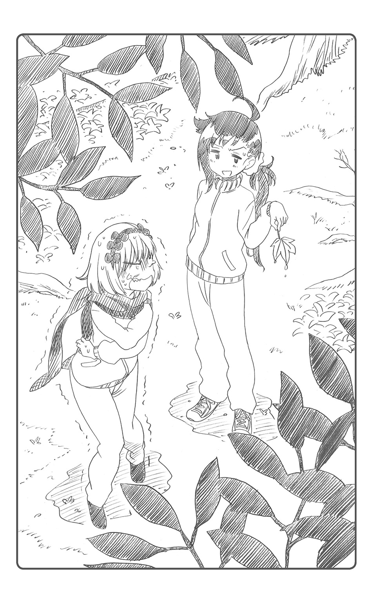
自称ヒットマンの少女は、蒼い瞳に涙を溜め、あわあわと取り乱している。
「お、落ち着いてポーラさん！ それたぶん、この葉っぱだから！ 木から落ちた葉っぱが、首元に入っちゃっただけだから！」
春は、ポーラのマフラーを少しずらし、首元に張りついていたカエデの葉っぱをつまみあげた。頭上から落ちた葉っぱが、偶然彼女の首元に入りこんだのだろう。夜露に濡れた大きな落ち葉を、冷たい幽霊の手だと勘違いしたのだ。
ポーラは、ぐすん、と鼻をすすりつつ、
「葉っぱ......？」
「そ、そう。ただの葉っぱだよ。お化けじゃないって」
「............」
彼女はじいっと、葉っぱを見つめる。
ややあって、ビーハイブ最強の〝白牙〟さんは、ようやく自分が勘違いをしていたことに気がついたらしい。
「......ふ......ふふ。どうやら、私としたことが取り乱してしまったようね......」
クールな笑みを浮かべて見せているつもりなのだろうが、その冷や汗まじりの微笑みには、先ほどまでの余裕は微塵もうかがえなかった。
「あのさ、もしかしてポーラさんって」
「......な、何よ」
「幽霊とか、本気でダメな人？」
春の歯に衣着せぬ物言いに、ポーラの頰がさっと朱に染まった。
「ななな、なにを言い出すかと思えば、この私がオバケごときを怖がる？ はん!? そ、そんなこと、あるわけがないじゃないっ!?」
強がりを言いつつも、歯の根はかみ合っていない。顔も真っ青だ。
どうやら本気でダメな人だったらしい。
「あー、うん......。わかった。......なんとなくわかった」
「あ、ちょっと!? 信じてないだろ！ その目は全然信じてないだろ!?」
本当のことを言うと面倒くさそうなので、スルーを決めこみ歩き出す。
ここに至って春は、風ちゃん捜しに彼女を同行させてしまったことを、少し後悔しはじめていた。
自分も幽霊など全然得意なほうではないが、さすがに葉っぱ一枚でここまでは取り乱さない。
荒事に巻きこまれている状況とかならまだしも、いざ幽霊がでてきたときに、この怖がりな少女に何ができるとも思えなかった。これはむしろ、春が守ってあげなければいけない立場なのではないだろうか。
――まあ、いっしょにいて飽きないのは事実だけど。
「くうっ......！ バカにされてる！ 一般人にバカにされてるうううっ！」
むきー！ と憤ったポーラを、どうやってなだめすかそうか、春が思案を始めたそのときだった。
かさり。かさり。かさり。
それは、ふたりの背後から聞こえてきた。
「え？」
「何、今の......」
春とポーラは思わず顔を見合わせ、その場で立ち止まる。
音のする方向を振り向いても、そこには何もなかった。背の高い木々や茂みが生い茂っているだけだ。
「気のせい......？」
首をかしげ、再び歩き出す。
かさり。かさり。かさり。
またしても聞こえる。誰かが背後で草むらを踏みしめているような、そんな音だ。
風の音だとか、野生動物が動き回る音ではない。もっと人智を超えた何かのような......。
かさり。かさり。かさり。
背後をつかず離れず、一定の距離を保ちながら、その音はこちらについてくる。
「............」
ふたりが足を止めると、その不思議な音は数メートル背後で、ぴたりと止まった。
こうなるともう、聞き間違いなどではない。
誰かが自分たちの後を尾行ているとしか、思えない。
「だ、誰？ 風ちゃん......？」
春が背後の暗闇へと、おそるおそる声をかけた。
しかし、暗い森からは、何ひとつ返事は返ってこない。絶対に、誰かがうしろにいるような気がしたのに。
「......もしかして、幽霊？ 血まみれの女の子が、私たちの後をついてきてるの？」
「そ、そんなわけないじゃない......！ 知ってるわよ。日本のオバケには足がないんでしょ？ だったら足音なんてそもそも......」
「じゃあゾンビなのかも......。森で死んだ女の子の死体が、歩き回ってるとしたら」
「じょ、じょじょじょ、冗談はやめなさい。そ、そんなこと、あるわけが......」
ポーラの顔からは、すでに血の気が引いてしまっていた。
気持ちはわかる。こんな暗い森の中で正体不明の何かに後をつけられるなんて、並みの恐怖ではない。春もまた、全身の血が凍りつきそうな恐怖に襲われていた。
かさり。かさり。かさり。
再び歩き出したふたりの背後に、またしても音が聞こえてきた。
しかも、だんだん近くなっているような気がする。茂みをかき分け、音はだんだんと背後に迫っているのだ。
「......これ、近づいてるよね。絶対近づいてるよね......」
プレッシャーが次第に大きくなり、春はごくりと唾を飲みこんだ。
かさり。かさり。かさり。
かさり。かさり。かさり。
「や、やだ......やめてよ......」
ちゃぷん、と水滴の跳ねる音がした。泥の水たまりを、誰かが踏みしめたような音だ。それは春たちのすぐうしろから聞こえてきた。
「ひっ......！」
いる。確実にいる。
自分たちの背後に、正体不明の存在がいる。まさか、これが噂の、少女の怨霊なのか。
しかしここで振り向き、その正体を確かめようとする勇気は、今のふたりは持ち合わせてはいなかった。
できることといえば、せいぜいが悲鳴を上げることだけだ。
「「ぎゃあああああああああああああああああっ」」
ふたりの叫喚が、木々の間に響きわたった。
少しでも怖さを払拭するため、間髪入れずに全力でその場から走り出す。
「やだやだやだやだ！ 何なのよこの森っ！」
自分たちの背後にいたのは、噂の幽霊かもしれない。きっと血まみれの少女の怨霊が、春とポーラを〝連れて〟行こうと、背後に忍び寄っていたのだ。
「か、神隠しなんて、やだああああっ！」
決して広くない木々の間を、息せき切って駆け抜ける。背の低い木々の枝で腕や脛が引っ搔かれてしまったが、気にしている場合ではない。捕まったら、もう合宿所には戻れないのかもしれないのだから。
「ひいっ、ひいっ......！」
冷や汗なのか、走ってかいた汗なのか、気づけばシャツの背がぐっしょりと濡れていた。恐怖のせいか息はあがり、膝が笑ってしまっている。隣のポーラはともかく、運動部でもない春に、全力疾走はかなりの苦行だった。
だいたい視界が悪い上に、木の根っこがそこらじゅうに出っ張っていて、しかも凹凸の多い地形なのだ。走りにくいったらありゃしない。気を抜いたら転んでしまいそうだった。
だが、のんびり逃げているわけにもいかない。
「お、おおお、追ってきた!?」
がさっ、がさっ、がさっ、がさっ。
走るこちらの足並みに合わせるかのように、例の足音までリズムを上げてきた。こちらはかなり全力で走っているはずなのに、まるで引き離せている気配がない。相当足の速い幽霊のようだ。
「うわあああっ!? もう何、アレ何なの!?」
「し、知らないわよっ！ 生前は陸上部員だったとかじゃないの!?」
隣を走るポーラも、引きつった表情を浮かべていた。
「こうなったら......！」
彼女は春の腕をつかむと、手近な木の陰に引っ張りこんだ。
ポーラと春が身を隠せるくらいの、幹の太い巨木だ。どこまでも相手が追ってくるというのなら、隠れてやり過ごすしかない。
息を整え、ポーラが口を開く。
「――ただ、ひとつ言えるのは」
「い、言えるのは？」
言いにくいことを告げるかのように、ポーラが口を歪めた。
「あの足音の主は、間違いなく人間じゃないってことね......！」
「に、人間じゃないってことは......やっぱり......？」
ごくり、と喉を鳴らす。
「信じたくないけど......。フツーの人間だったら、こんな近くに接近される前に、気がついてるはずだもん。でも、全然気がつかなかった上に、いつのまにか背後まで取られてるし......」
「確かに、いつの間にかすぐうしろで足音が鳴ってたよね......」
「気配を遮断する能力だけでいえば、そこらのヒットマンのレベルを軽く超えてるわ」
あんなのが人間でたまるもんですか、と。
青ざめたポーラの表情を見る限り、それは誇張でもなんでもないようだ。自分たちを追ってきているのは、本当に化け物じみた存在らしい。
「ど、どうしよう......!? このままじゃ私たち、取り殺されるか、神隠しに遭っちゃうんじゃ......」
「ひいっ......！ そんなのいやっ......！ こんな島国でオバケに殺されるなんていやあっ......！」
ふたりでガタガタ震えている間にも、足音の主はかさり、かさり、とこちらに近づいてくる。どうやらこちらが木陰に隠れているのも、すっかりお見通しのようだ。
「あっ......！」
震える手から、懐中電灯を落としてしまった。ライトはそのまま地面を転がり、背後の追跡者を照らし出した。
「ひっ......」
光に照らし出されたのは、よく見知った体操着だった。春が着ているものと同じデザインのモノだ。顔こそよく見えないが、その体つきは紛れもなく同年代の少女のものだ。
「や、やっぱりアレ、去年いなくなった女の子の幽霊なんだ......！」
噂は真実だったのだ。
この森の中には、非業の死を遂げた少女の幽霊が彷徨っていて、訪れる人間を神隠しに遭わせてしまう。次の犠牲者に選ばれたのは、ポーラと春だったのだ。
「うう......ポーラさん......。ごめんね、こんなことに巻きこんじゃって......」
「じょ、冗談じゃない......！ このままやられるくらいならいっそ！」
覚悟を決めた表情で、ポーラが上着の内側に手を忍ばせた。懐から取り出したのは、黒いパイナップル型の秘密兵器だった。
「ちょ、それ......」
「このおおおおおおおっ！」
彼女は手の中のパイナップルを、近づいてくる体操着に向けて思い切り投擲した。
それが地面にコトンと落ちた瞬間、まばゆい閃光がほとばしった。
「きゃああああっ!?」
まるで真夏の太陽のような強烈なフラッシュライトが、夜の闇を照らした。
瞬間的に危険を感じて目を閉じ、身を屈めていたのが正解だったのかもしれない。あんなの、まともに直視していたら気絶していたところだ。
「も、もう！ ポーラさん！ そんなの使うなら、事前にひとこと......」
ようやく春が薄目を開けると、傍らのポーラの両手には、さらに強力な武器が握られていた。銃身の長い、白黒二丁の装飾銃である。
ポーラはためらいなく、閃光の中心へ向けて両手のトリガーを引いた。
「死ねっ！ 死ねえっ！ うう......こんにゃろおおっ、死ねえええええええっ！」
涙目で絶叫しつつ、銃を連射する。目がマジなあたり、よほど怖かったのだろう。あまりに彼女の表情が必死すぎて、「幽霊相手に死ねはないよね」と突っこみを入れることさえできなかった。
「......ちっ」
カチン、カチンと空トリガーを数回鳴らしてようやく、ポーラは全弾撃ち終えたことに気がついたらしい。舌打ちをして銃を放り投げ、今度は細長い円筒のようなものを懐の中から取り出した。
ラベルに記載された文字はそのままズバリ「ＤＹＮＡＭＩＴＥ」。素人の春でも、一目で危険だとわかる代物であった。
「ちょ、ちょっとポーラさん！ それはもうやりすぎ！ やりすぎだから！」
ライターを取り出したポーラの腕をつかみ、あわてて止めた。
爆弾なんて使ったら自分たちだって危ないし、最悪山火事にだってなりかねない。だいたい、幽霊相手に銃やら爆弾やらが効くという保証はないのだ。
だというのに、この錯乱気味のクラスメートは、
「うるさい放してっ！ 徹底的に殲滅しなきゃ、私たちだって危ないんだよっ！」
春の忠告など耳にはまるで入らなかったようで、手にしたジッポライターに火をつけてしまった。
「う、うわああ！ もう、何してんの!?」
「オバケの分際でこの〝白牙〟をビビらせようなんて、百万年早いんだあぁぁっ！」
導火線に火をつけ、彼女はダイナマイトを振りかぶる。
春が息を吞み、衝撃に対して身構えようとしたそのとき。
ターン、ターンッ！ と、甲高い音が続けて二回、響き渡った。
「えっ......!?」
「ええっ？ 狙撃!?」
ポーラが驚きに目を丸くした。
手にした爆弾は、導火線の着火部分だけが綺麗に吹き飛ばされていた。地面に転がったライターにも中央に大きな穴が開けられ、もう二度と使用できない状態になっていた。
ポーラの捨て身の行動は、暗闇からの超精密な射撃によって無力化されてしまったのだ。
しかしポーラが驚いたのは、その狙撃の腕ではない。
「な、なんで、オバケに反撃されるのよ......!?」
自身が先ほど銃の弾をありったけ撃ちこんだはずの方向を、ポーラは呆然と見つめていた。どうやら彼女が狙撃されたのは、幽霊自身からだったようだ。
「日本のオバケが銃を持ってるなんて、聞いたことないわっ!?」
※
春とポーラは、手に手を取って、再び森の中を走り出した。隠れるのも迎え撃つのも無理ならば、もう全力で逃げるしかない。
「じょ、冗談じゃないっ......！」
幽霊に銃弾が効かなかったことはともかくとして、まさか銃で反撃されるとは思わなかった。さまざまな死線を潜り抜けてきた（らしい）ポーラでさえ、幽霊相手に銃撃戦をした経験はなかったらしい。
「なんであのオバケ、銃なんて持ってるの!? 女子高生のオバケなんでしょ、アレ！」
「うーん......。〝実は本業はヒットマンだけど、何かの理由で高校に潜りこんでいた潜入女子高生〟の幽霊だとか？」
「ば、バカじゃないの!? 学校にヒットマンの女の子が潜りこんでるなんて、フツーありえないでしょ！」
走りつつ、春は「そうかな？」と首をかしげる。少なくともそれっぽい女の子なら、クラスの隣の席にいるのだが。
「とにかく、オバケが銃器で武装してましたー、なんて完全にシャレになんないわよ。あれ神隠しどころか、物理的にこっちを殺す気満々じゃないの！」
ポーラが腑に落ちない表情を浮かべた。
背後では、いまだ幽霊がこちらを追跡しているようだった。足音は依然乱れることなく、がさっ、がさっ、と一定のリズムを刻んでいる。いい加減にしつこすぎる。
「はあっ......はあっ......」
さっきから走りっぱなしで、そろそろ倒れそうなくらいに息はあがっている。だが、相手は凶悪な怨霊、それも武器を持っているらしいのだ。捕まったら殺されてしまうかと思うと、おちおち弱音を吐いてもいられない。
「で、でも、もう撃ってこないね？ どうしてだろ」
「ひと思いに殺さず、徹底的にこちらを追い詰めてからいたぶるつもりなのよ」
身震いしつつ、ポーラが言う。
「――昔相手にした敵のヒットマンの中にも、そういう残虐なヤツがいたわ。......このオバケも、きっとそんなサディストの類ね」
「い、いたぶられちゃうの、私たち......？」
確かにあの幽霊につかず離れず追われることで、精神的にも肉体的にも疲労はどんどん溜まっている。いっそのこともう、楽にしてくれたほうがいいかもしれない。
先に森に入った風ちゃんも、こんな執拗な幽霊に狙われたのだろうか。彼女の無事が非常に気がかりである。
「うう......。とにかくいったん森から離れて、態勢を立て直したほうがいいかも。もう私たちだけじゃ、手に負える状況じゃないよっ......！」
「まあ、準備不足は否めないわね......。くうっ......この私が、オバケ相手にすごすご逃げなきゃならないなんて......」
ポーラが悔しそうに下唇を嚙みしめた。よくわからないが、最強の〝白牙〟だとか名乗っているあたり、彼女にはプライドも、それに見合った実力もあるのだろう。
しかし、いかに彼女が強かろうと、相手が悪い。
敵は、死なない上に武装までしている怨霊なのだ。そんな化け物に追われていては、風ちゃんを捜すどころではない。
「こうなったら、拝み屋でも、組織の応援でもなんでも呼んで――」
とりあえず合宿所へと向かおうとした、そのとき。
「ん......あれ......？」
ふたりの進行方向、木々の間に人影を見つけた。
春と同じジャージを着た、髪の長い女の子だ。少女は木にもたれかかるようにして、所在なさげに立ちすくんでいる。
「あ、風ちゃん！」
しかし、人影からの返事はない。
彼女は全身を弛緩させ、ただ虚ろな目でこちらを見ているだけだった。
「風......ちゃん？」
「よく見て。あの子じゃないわよ......!?」
ポーラの握った懐中電灯が、目の前の少女を照らした。
「あっ......！」
息を吞む。よく見れば彼女は、風ちゃんとは似ても似つかない少女だった。
髪は風ちゃんよりも長く、どことなく色素が薄い。
顔も手足も真っ白で、薄笑いを浮かべた顔には、生気はまるで感じられなかった。
おまけに、身にまとっているのは、赤黒い体操着――彼女の全身には、べったりと血がこびりついていたのだ。
それは背後にいたはずの、あの少女の怨霊だった。
「......ひいっ......！」
少女がニヤリと微笑んだ気がして、春は思わず足を止めた。
どうして自分たちを追いかけていた幽霊が、進行方向の先にいるのか。
つい先ほどまで、足音はずっと背後から聞こえていたのだ。一瞬で前に回りこまれた、などということがあるわけがない。
「なんで......？ いつの間に......？」
だがそれは、相手が常識の通じる存在だというのが前提の話である。
元より、目の前の少女は幽霊なのだ。現れたり消えたりはお手の物、瞬間移動をしたとしてもなんらおかしくはないだろう。
「も、もうやだあっ......！ なんなんだよぉ......」
腰が抜けてしまったのか、ポーラはその場にすとんと座りこんでしまった。鼻水をすすり、恐怖で顔面を歪ませている。
春だって、泣きたいのは同じだ。
この恐るべき怨霊に対して、もう自分たちができることは何もない。神隠しに遭うか、殺されるかの二択だろう。
「や、やめて......こっちに来ないで......！」
うずくまってポーラの手を握り、うわずった声で血まみれの少女に必死に懇願する。しかし目の前の少女は、無慈悲に白い唇を歪ませるだけだった。
「......あ な た た ち も 連 れ て っ て あ げ る......」
それは囁くような、か細い声だった。
だが、こちらを見下ろすその冷たい目には、はっきりと恨みと殺意の色が満ちていた。春たちを無事に森の外に返すつもりなど、さらさらないのだろう。
「――――！」
春はあまりの恐怖に背骨が凍りつき、心臓が早鐘のように鳴りはじめるのを感じた。口を開くことさえできない。この血まみれの幽霊は、どんな方法で自分たちを始末するつもりなのだろう。
「うう......いったい私たちが何したってのよ......」
ポーラが目元をぬぐった。
ただいなくなった友達を捜しに来ただけだというのに、どうして殺されるような目に遭わなければならないのか。
しかしいくら怨霊に理不尽だと訴えても、もともとこの世ならざる存在に理屈など通用しないのだろう。孤独のまま死んだ恨みを晴らすために、問答無用で生者を〝連れて〟いく。このおぞましい姿の少女はきっと、そういうモノなのだ。
けひひ。けひひ。
声にならない笑い声を上げ、少女が一歩ずつ、こちらに近づいてきた。少女が纏っているかのような冷たい空気が、ひんやりと春の頰を撫でた。
「ひっ......やめ.........こないで......」
ポーラがガタガタと震えつつ、ぎゅっと春の袖口を握りしめる。
春も先ほどからなんとか逃げ出そうと試みているのだが、どうにも身体が動こうとしない。完全に足がすくんでしまっているのだ。蛇ににらまれたカエルの心境とは、こういうものなのかもしれない。
けひひ。けひひ。けひひ。
片足を引きずり、首をかくかくと前後に揺らしながら、血まみれの少女は緩慢な動作でこちらとの距離を徐々に縮めてきた。まるでＢ級ホラー映画のゾンビさながらの、人間離れした挙動である。
「あは......あはは......」
思わず、乾いた笑いが口元から漏れてしまった。人間、恐怖を通り越すと笑いがこみあげてくるものなのだろうか。
「わ、笑ってる場合じゃないわよっ......！」
一歩。また一歩。
手を伸ばせば、その白い指先がこちらに届きそうな距離まで、彼女は近づいてきた。
――私も〝連れて〟いかれちゃうの――？
春は息を止め、ぎゅっと固く目を閉じる。一瞬の後に訪れるであろう〝何か〟に対して身構えたのだ。
――ごめんなさい。お姉ちゃん、春はもう、お家に帰れないみたいです。もうあの先輩の毒牙から、お姉ちゃんを守ってあげられそうにないかも――。
ポーラとぎゅっと抱き合いながら、心の中で辞世の言葉をつぶやく。未練まみれのまま死ぬなんてやるせないが、ポーラと一緒だったことだけはマシだった。少なくとも、一人で寂しくこの世から消えることはない。
この森で神隠しに遭った人たちの中でも、自分は幸せなほうなのかもしれなかった。
「ううっ......こんなことなら、せめて一回だけでも黒虎に勝ちたかった......！」
ポーラの鼻水まじりの悔恨も聞こえてきた。
彼女でさえどうにもすることができないのだ。さすがに、もうダメかもしれない。
この段に至って、春はさすがに覚悟を決めたのだが、
「......あれ？」
何も起きない。
白く冷たい手が自分に触れることも、魂を抜かれることも、もちろん銃で撃たれるということもなかった。
「え？」
春がおそるおそる目を開けてみると、血まみれの少女の姿はどこにもなかった。きょろきょろ周りを見渡してみても、暗い夜の森が広がっているだけである。
「......消え......た......？」
ぞっとする。
「――どうして急に、消えちゃったの......？」
あの幽霊は、自分たちを神隠しに遭わせようとしていたのではなかったのか。
こちらに何も危害を加えることなくそのまま姿を消してしまうなんて、どういうつもりなのだろう。本当に気味が悪い。
「き、きっと私に恐れをなしたのね」
額の脂汗をぬぐいつつ、ポーラが笑みを浮かべた。
「――この私に反撃されることを恐れて、すぐに姿を消したのよ。......ふ、ふん。オバケなんて、恐れるに足らずだわっ......！」
「え？ どっちかっていうと、恐れをなしていたのはポーラさんのほうじゃ......」
などと言ったら涙目でにらみつけられてしまったので、春はあわてて口をふさいだ。
ともかく、今は無粋なツッコミよりも、危機を脱したことを素直に喜ぶべきかもしれない。
「よくわかんないけど、助かった......のかな？ どうしてだろ」
「オバケの考えてることなんて、わかんないわよ......。どうでもいいわ」
ふたりは、はあ、と安堵のため息をついて立ち上がった。
幽霊の気まぐれだったのか、どうやら、九死に一生を得ることはできたらしい。いまだに膝は震えていたが、なんとか歩くくらいはできそうだった。
そのまま二人、手をつないで森を歩きはじめた。
風ちゃんの手がかりがいっさい見つからない以上、まずは宿舎に戻るしかない。危険な森をこのまま闇雲にうろつくよりは、改めて出直したほうがいいだろう。
そう思っていたのだが。
「はる......」
そのときふと、名前を呼ばれた気がした。
「え？ ポーラさん、なんか言った？」
「いや、なにも言ってないけど......」
眉をひそめるポーラとふたり、再び森の音に耳を澄ましてみる。すると、風の音やミミズクの声に交じって、再び、悲痛な声が聞こえてきた。
「はる......助けて......」
春はすぐ、声の主の正体を理解した。漆黒の森のさらに奥深くから聞こえてきたのは、助けを求める親友の声だったのである。
「これ、風ちゃんの声だ......！」
※
がさり、がさりと草をかき分け、道なき道を進んでいく。
「うう、もう帰りたい......。これなら丸腰で敵アジトへの潜入を命じられたほうが、よっぽど気が楽だ......」
隣を歩くポーラがため息をついた。最初に比べて足取りがどこかおぼつかないのは、森に入ってから散々な目に遭わされているせいだろう。
そんな彼女の手を握り、春は無理やりに笑顔を浮かべてみせた。
「帰りたいのは私も一緒だけど、風ちゃんがこの先にいるかもしれないんだし......。私一人じゃどうにもできないもん。ポーラさんだけが頼りなんだよ」
「そういうことならまあ、しょーがないけど......」
森の奥部は、さらに草木が生い茂っており、闇がいっそう深くなっている気がした。空を覆うように巨木が枝を広げ、さっきまでは見えていた星々も、今ではまるで見えなくなっていた。
「怖い、ね......」
そのうえ、キィキィ、カサカサと何かが蠢く音が、そこらじゅうから聞こえてきて、気味の悪さに拍車をかけている。このあたりには、夜行性の動物たちでも群棲しているのだろうか。
あまり元気のなさそうな表情で、ポーラがつぶやいた。
「声の聞こえた方角は、本当にこっちで合っているの？」
「うーん......どうかな。たぶん合ってると思うんだけど」
先ほど聞こえた風ちゃんの声は、すぐに聞こえなくなってしまった。もしかすると彼女の身に何かが起こったのかもしれない。
「またあのオバケが出てきやしないでしょうね......。うう......」
泣き腫らした顔で愚痴るポーラは、なんとなく年相応の少女に見えた。心霊体験の連続で毒気を抜かれてしまったのか、いつもの刺々しさは消え失せていた。
と思いきや、
「な、なに見てんのよ！ オバケが怖くて悪いっての!?」
ポーラが声を荒らげて憤る。
ついに開き直ったようだ。
「――い、言っておくけどね！ オバケが怖いのは、やつら、閃光弾も銃弾も効かないチート連中だからよ！ 反撃さえできれば、全然怖くないんだから！」
真っ赤なポーラの顔を見ていると、なぜか和んでしまう。
――肩肘張ってるより、こういう素直な表情のほうが可愛い気がするんだけどなあ。
そんなことを考えて怖さを紛らわせつつ、森を進む。
十分ほど進むと、木々に切れ目が見えてきた。森の中にぽっかり空いた広場のような場所が、数十メートル先に広がっていた。
「ねえ、あれ」
ポーラが指をさした先。広場の中央の草むらに、誰かが倒れているのが見える。見慣れた体操着のその少女は、今度こそ捜していた人物に他ならなかった。
「風ちゃん！」
ポーラとふたり、あわてて倒れている風ちゃんに駆け寄った。森の中を歩いてきただけあって、服や体の一部に汚れが付着してはいたが、怪我をしているわけではないらしい。
「......大丈夫。脈拍も呼吸も正常よ。気絶してるだけみたいね」
ポーラが風ちゃんの身体を簡単に調べ、そう告げた。
春は、ほっとして胸をなでおろす。
「よかった......」
怖い目にも散々遭ったが、なんとか風ちゃんを見つけることができた。ミッションコンプリートだ。あとは、彼女を連れて、森から外に出るだけだ。
「風ちゃんが目を覚ますのを待つか、このまま背負って帰るか......。どうしよっか、ポーラさん」
しかし春の問いに、ポーラは答えない。
「......ポーラさん？」
「あ、あ、あの、あれ、いま、」
ポーラが正面の木々の隙間をじっと見つめ、真っ青になって震えている。何を見つけたというのだろうか。
春はそちらのほうに振り返り、
「......え？」
思わず、自分の目を疑った。
「なに、あの化け物......!?」
それは、異形の怪物であった。
全身を黒っぽい泥――液状化した粘液のようなもので覆った、謎の生物である。
体は春よりもひと回り以上大きいようだ。かろうじて人型のようにも見えるが、暗いのでよくわからない。そんな怪物が、ズルリ、ズルリと足を引きずりながら、木々の間を移動しているのである。
あのクリーチャーは、いったい何なのだろうか。
先ほど現れた血まみれの少女は、まだ人の姿をしていたから理解できる。しかし、あの怪物に関しては、すべてが正体不明でおぞましい。この森に、あんな泥まみれのＵＭＡまで出るという話は聞いていない。
「......あふぅ......」
傍らのポーラが、こてん、と倒れた。
「ちょ、ちょっと、ポーラさん!?」
彼女は口から泡をふき、白目まで剝いていた。極限状態の果てに出現した謎の怪物に、とうとう精神が耐えきれなくなったのだろう。
無理もない。春だって一瞬、気が遠くなったくらいなのだ。
「なんなの、この森......。いったいどうなってるの......！」
魑魅魍魎が跋扈する、まさに人外魔境である。
どうして夜中にこんな森に入ろうだなんて思ってしまったのか、春は今さらながらに後悔する。
――怖いよ、お姉ちゃん......！
しかし、助けてくれる人は周りに誰もいない。家族も先生も、みんな森の外だ。頼みの友達ですら、恐ろしい化け物たちによって気絶させられてしまった。
――風ちゃん、ポーラさん......。
草むらに横たわる彼女たちを見て、ふと思い至った。
誰の助けも期待できない。ならばこの悪霊だらけの森で、誰が彼女たちを助けてやれるというのか。
「こうなったらもう、風ちゃんもポーラさんも、私が守るしかないんだ......！」
春は友人たちを一瞥すると、震える膝に活を入れて立ち上がった。
前方でうごめく奇怪な泥の塊を、きっとにらみつける。暗くてよく見えないが、ドロドロの化け物はこちらには気づいていないようだった。
――せめてなんとか、追い払うくらいはしないと。
春は大きく深呼吸をして、泥のクリーチャーに向けて駆け出した。
「う、うわああああああああああっ！」
春の叫び声に驚いたのか、怪物はぎょっとした様子で動きを止めた。
その一瞬のひるんだ隙を、春は逃さない。手にした懐中電灯を、怪物めがけて思いきり放り投げたのだ。
「えいっ！」
回転して周囲の暗闇をあちこち照らしながら、懐中電灯は放物線を描く。そしてそのままスコーン、と化け物の頭部に命中するのだった。
「あいてっ!?」
怪物は苦悶の声を上げ、その場に仰向けに昏倒した。正体不明のクリーチャーにしては、どこかで聞いたような声だったが、今の春にはそんな些事を気にしている余裕はなかった。
「この化け物おっ！ ポーラさんと風ちゃんに、手を出さないでっ！」
倒れた泥の怪物にさらに駆け寄り、蹴りを一発くれてやる。
「ええいっ！ このっ！」
「ちょ、ま、......いてえっ!?」
手加減などするつもりはない。風ちゃんとポーラを守るために、この化け物を早く追っ払わなければならないのだ。
「このっ、このっ！」
腹部に一発、さらにもう一発。徹底的に踏みつけてやる。効いているのか、ＵＭＡが足元でもがいているようだった。
「......うお、痛っ！ は、春ちゃ......！」
何やら叫びつつ、泥の化け物は必死に這って逃げようとしていたが、そうは問屋が卸さない。大事な友人を気絶させた報いを、しっかり受けてもらわなければ気が済まないのだ。
「化け物めえええっ！ 覚悟――」
とどめの一撃とばかりに、足を大きく振りかぶったその瞬間、
「ちょ、ちょっと待って春！ 乱暴はダメだよ!?」
突然うしろから聞こえてきた叫びに、春はぴたりと動きを止めた。
声の主は風ちゃんでも、ポーラでもない。それは、春にとっては聞き覚えがありすぎる声色だった。
「――え？ お、お姉ちゃん？」
背後にいたのは、春の姉、小野寺小咲だった。
彼女は泥の怪物と春を交互に見やり、困ったような表情でおろおろしている。間違いない。こんな顔をするのは姉しかありえない。人違いでも幽霊などでもない。
「なんでここに――」
「それはともかく、春、そのひとよく見て！ 一条君だよ!? 春が足蹴にしてるの、一条君だから！」
「は？」
小咲に言われ、足元の泥の塊に視線を落とした。
怪物は腹部を押さえ、「うう」と唸り声をあげながら、口を開いた。
「はは......容赦ねえな、春ちゃん......」
よくよく見てみれば、それは確かに見知った人物であった。
ひょろい体軀に気の抜けた顔つき。耳のうしろのヘアピン。やたら泥まみれで黒ずんだ体操着を着ていたのは、四月の頭から何かと腐れ縁な先輩である。
一条楽。
どういうわけか彼は、頭の先から足の先まですっかり泥をかぶっていた。そんなドロドロでぐちゃぐちゃな姿の先輩ならば、怪物と見間違えても仕方ないだろう。
「一条先輩......？ 何やってんですか、こんなところで」
わけがわからない。
こんな人里離れた森の中に、なぜ姉と一条楽がいるのか。一年生の林間学校の期間中、上級生たちは普通に町で週末を過ごしているはずなのに。
「えーと、それは......」
「う、うん。ちょっと理由があってね」
楽と小咲が、言いにくそうに顔を見合わせた。まるで、春に何か内緒にしておきたいことがあるようなそぶりである。
「もしかして一条先輩......！ お姉ちゃんをこんな暗い森に連れこんで、よ、よからぬことするつもりだったんじゃ......!?」
泥まみれの楽を、春がきっとにらみつける。
無垢なお姉ちゃんを言葉巧みに誘いこみ、森の中で押し倒そうとしていた。彼が泥まみれなのは、お姉ちゃんの思わぬ反撃に遭ったから――そんな一連の流れが、春の頭の中で瞬時に組み立てられた。一条楽が噂通りの極悪非道なスケコマシなら、ありえない想像ではない。
「か、怪物どころか、鬼畜じゃないですか......！ このヘンタイ！ 女の敵！」
「ん、んなことするわけねえって!? あのな、オレたちがこの森に入ったのは――」
あわてて否定する楽を、柔らかな声が制した。
「――それは私が説明しますよ、先輩」
「風ちゃん？」
ふと脇を見てみれば、風ちゃんが傍に立っていた。いつの間に目を覚ましたのだろうか。肌は血色もよく、先ほどまで気絶していたとは思えないくらいに意識もしっかりしている。
「春、先輩たちがここにいる理由は、私から説明するね」
「え？」
悪霊に取り憑かれ、気絶していたはずの彼女が、なぜか事情を知っているという。これはいったいどういうことなのだろう。
首をかしげた春を見て、風ちゃんは柔らかく微笑んだ。それはどこか小悪魔めいた、彼女には珍しい表情だった。
「えーとね。とどのつまり、これは〝肝試し〟だったの」
「肝試し？」
「そう。いわば、ドッキリだね」
風ちゃんが無邪気に微笑んだ。
「春が楽しみにしてた林間学校の肝試しが、中止になっちゃったじゃない？ だから先週、先輩たちに相談したんだよ。......『春になんとか肝試しをさせてあげられる方法はありませんか』って」
「え、ええ？」
風ちゃんの言葉に、目を丸くする。
「――そしたら皆さん、快く協力してくれて。計画通り、春を怖い目に遭わせることができたんだよ。......大成功だったね！」
ポーラさんまで来ちゃったのは計算外だったけど、と風ちゃんが笑う。
今夜この森で怖い目に遭ったのは、すべて彼女たちの仕こみだったということなのか。突然、風ちゃんにそんな真相を告げられ、春の頭は大混乱に陥っていた。
「え？ じゃあ、あの、いなくなった女の子とか、神隠しの幽霊とか、そういう噂話って......？」
「あはは。全部ウソ。......去年いなくなった女子生徒なんていないし、神隠しに遭った人たちの噂も、全部私のでっち上げだったのです」
「そ、そんな......」
すっかり騙された。なまじ雰囲気たっぷりに風ちゃんが語るものだから、本当にそんな噂が流れているのかと思ってしまった。
「あの話を聞かせた後で私が合宿所からいなくなれば、春だったら絶対捜しに来てくれると思ったし。......ありがとね、春。助けに来てくれて」
「うう......騙された......！」
がっくりと、地に膝をつく。
風ちゃんも無事だったし、幽霊なんていなかった。それはよかったのだが、どうにも納得がいかない。こちとら、本気で怖かったのだ。
小咲も、苦笑いを浮かべる。
「私は最初、やめようって言ったんだけど。......春に楽しんでもらうためなら、まあこういうのもいいかな、って思って。結局協力することにしたんだよ」
姉の言うとおり、確かに、肝試しが楽しみだったのは事実だ。ただできれば、もう少しソフトなドキドキ感を楽しみたかった。
「もう。ほんとに怖かったんだからね！」
風ちゃんが顔の前で両手を合わせて、「ごめんね」のポーズをとる。
「あはは。......でも、結構雰囲気出てたでしょ？ 〝怪奇！ 神隠しの少女！〟みたいな」
「いやまあ、確かに怖かったけどさ」
春が、はあ、とため息をつく。
「――ずっとこっちを追ってくるし、ポーラさんが撃っても効かないし......挙句の果てには撃ち返されたし。幽霊じゃなくて、不死身のヒットマンに追われてるって感じだったような......」
今思い返すと、肝試しにしては違和感だらけだった。
なんでまた、『銃で武装した幽霊』なんて突拍子もない設定を採用したのだろうか。
「それは私ですね。......もっとも、あれは幽霊役をやっていたわけではないのですが」
近くの木陰から、長身の少女が姿を現した。
鶫誠士郎――彼女もまた小咲らと同じクラスの先輩だった。なぜかその背に泥の塊らしきものを背負っていたが、本人は平気な顔をしている。
「私は万一にそなえて、あなたを背後から見守る役だったのですよ」
「私を、ですか？」
「夜の森は何かと危ないですから。ポーラと一緒だったとはいえ、小野寺様の妹君を危険に晒すわけにもいかないでしょう？」
鶫は、春を見て優しく微笑んだ。女の子なのに、まるで王子様のような微笑みである。
「......だが、まさか、そのポーラ自身が見境なく爆弾まで使うとは思いもしませんでした。だから、やむなく発砲せざるを得なかったんですよ」
鶫はため息交じりで、地面に横たわって泡を吹いているポーラに視線を送った。最強の〝白牙〟さんは、一向に目を覚ます気配はないようだ。
「道中、彼女が大変ご迷惑をおかけしたようで......。申し訳ありません」
鶫が、ぺこりと頭を下げた。
なるほど、彼女こそ、ずっと春とポーラを追い続けていた足音の正体だったのだ。
つまり、至近距離の閃光弾やら銃撃を軽くかわしたうえ、たった二発の弾丸でポーラの爆弾を無力化したのもまた、彼女ということである。この鶫という先輩、とんでもない身体能力の持ち主らしい。
――なるほど、ポーラさんが憧れるのもわかる気がするなあ。
これだけ優秀なボディーガードに守られていたのだ。春が勝手に怖がっていただけで、この〝肝試し〟は、実はピクニック並みに安全だったというわけである。
「でも、それが逆に怖かったんですけどね......」
不死身の尾行者につけ狙われているなんて、相当の恐怖だった。ボディーガードが優秀すぎるのがあだになったのかもしれない。
「じゃあ、あの、血まみれの女の子の幽霊は――？」
「......ああ、そっちは私」
鶫に背負われていた泥の塊が、突然口をきいた。
「って、もしかして、桐崎先輩!?」
泥の塊――桐崎千棘は鶫の背から降り、恥ずかしそうにこくりとうなずいた。
きらめくブロンドも、整った顔立ちも、妖精のように白かった手足も、なぜか完全に泥まみれ。体操着など、赤黒いペイントと黒い泥のおかげで、何が何だかわからない色になっている。
学校一ともいわれる美少女の姿は、一条楽と同様に今や惨憺たる有様になっていた。
「去年できなかったオバケ役、どうしてもやってみたくてね。幽霊に扮して、春ちゃんを驚かす役を任せてもらったの。......メイクとか結構頑張ってみたんだけど......どう？ 結構怖かった？」
「あはは......そうですね......。死ぬほど怖かったです」
春もポーラも、目の前にいる幽霊が本物だと信じて疑わなかった。完全に死を覚悟したほどだ。この桐崎千棘という先輩、もともと色の白い美人ということもあり、儚げな幽霊の衣装が、怖いほど似合っていたのである。
「目の前で、ぱっと消えちゃったりするんですもん。あれ、なんかのトリックですか？ いったいどうやったんです？」
「あー、あれね......」
途端に千棘の表情が曇った。眉間にしわを寄せ、泥だらけの頰をぽりぽりとかいている。どうも、説明するのをためらっているような感じだった。
すると隣で、同じように泥だらけになっていた楽が「ああ、あれな」と口を開いた。
「コイツあのとき、足元の泥沼にはまってたんだよ。だから春ちゃんたちには消えたように見えたんじゃねえかな。......間抜けな話だけど」
「ちょっと、誰が間抜けなのよ！ 誰が！」
「どう考えても間抜けだろーが！ ったく、助けようとしたオレまで引きずりこみやがって......」
楽が、はあ、と深いため息をついた。
どうやら、このふたりが泥まみれの悲惨な姿になっているのは、泥沼にはまったのが原因だったらしい。暗くてよく見えなかったが、あそこにそんな危ないものがあったとは。
「日本のことわざだと、人を呪わば穴二つ、だっけ？ まさにそれを実感したわ......」
千棘が自嘲気味に苦笑いを浮かべた。
「あはは......なんていうか。ご愁傷様です」
小咲がくすり、と笑った。
「他にも、衣装やメイクの準備をしてくれたるりちゃんや舞子君とか、他のひとが森に入らないように警察を動かしてくれた万里花ちゃんとか......皆が協力してくれたんだよ」
どうやらこの肝試しには、小咲がいつも仲良くしているメンバーがフルに参加してくれたようである。プール掃除のときに全員面識はあったが、本当にノリのいい先輩たちのようだ。
「でもお姉ちゃん。どうして皆、こんな手のこんだ肝試しに協力してくれたの？ せっかく休みの日だったのに、わざわざ山奥にまで来てくれて......」
「あ、それはね。先週、風ちゃんから今年の肝試しが中止になったって聞いた時に、一条君と千棘ちゃんが、『どうしても協力したい』って言ったからなんだよ」
「どうしても......？」
泥まみれカップルを見つめる。
ふたりとも、なんだかばつの悪そうな顔をしていた。
「あー......いや、今年の肝試しが中止になったのって、どうやらオレたちのせいらしいんだよな」
「なんですかそれ。どういうことです？」
春が半目で楽をにらみつけた。事と次第によってはただじゃおきませんよ――と楽を責めようとしていたら、千棘が、申し訳なさそうに口を開いた。
「えっとね。実は私、去年の肝試しの最中に、わけあって動けなくなっちゃって。そこをこのもやしに助けてもらったんだけど、そのあと、ふたりで道に迷っちゃってさー......」
「そう。森の中を彷徨い歩いて、なかなかゴールにたどり着けなくて、散々クラスメートや先生に心配かけまくったんだよな。......で、結局、次の年から林間学校の肝試しは中止ってことに......」
楽と千棘は、ぺこり、と頭を下げた。
風ちゃんがでっちあげた噂話も、当たらずとも遠からず、というところだったらしい。少女がいなくなった、というのも部分的には事実だったのだ。
「さすがに自分たちのせいで肝試しが中止になったのは申し訳なかったからね......。風ちゃんの話に乗っかってみたわけよ」
と千棘。
「でも、結果的には、フツーの肝試しよりも楽しかったかもしれないです。春も本気で怖がってくれたみたいだし」
風ちゃんがにこにこしている。まんまとはめられた形になってしまったが、これだけいい笑顔を向けられると、彼女を怒るに怒れない。
楽が、苦笑いを浮かべる。
「まあ、せめてもの罪滅ぼしっつーか......」
「なるほど。わかりましたよ。つまり話をまとめると――」
春が楽を、じいっとにらみつけた。
「一条先輩のせいで肝試しが中止になって、一条先輩のせいで私が死ぬほど怖がらせられた、ってわけですね。......結局、諸悪の根源は一条先輩だと」
「いや、君、話聞いてた？ オレだけのせいじゃなくて千棘も、」
「うるさい問答無用です。男のくせに、自分の彼女に責任押しつける気ですか。そういうの、サイテーだと思うんですけど。......そうだよね。お姉ちゃん」
きょとん、とした顔で小咲が首をかしげた。
「そ、そうかな？ 春を怖がらせようって計画したのは、ここにいる皆なんだよ？ むしろ一条君は、皆の意見まとめたりして頑張ってくれたと思うんだけど」
「あ、いや。......オレは別に、あはは」
そうやって姉に対して愛想笑いを浮かべる楽の顔を見ていると、どうにも腹の虫が治まらない。やはり最終的な責任は、この男にとってもらうのが筋というものだろう。
「とにかく！ 私とポーラさんを怯えさせた責任は、先輩がちゃんと取ってくださいよ！」
「なんでオレが......」
楽が面倒くさそうな顔でため息をついた。
「......罰として今度、私と風ちゃんとポーラさんの三人を、遊園地に連れてってください。ホラーハウスで肝試しのやり直ししますから」
「え？ そんなことでいいの？」
意外そうな楽に、春は「はい」とうなずいた。
「貧乏そうな先輩には、このくらいでも結構なお仕置きになるでしょ？」
まあ、彼にも悪気はなかったのだし、このくらいが落としどころだろう。あまりに惨いことを要求すると、姉や他の先輩方、風ちゃんにも気を遣わせてしまうかもしれないし。
しかし横で話を聞いていた先輩方は、
「え？ なに、楽が遊園地連れて行ってくれるの？ だったら私も行こうかな」「お嬢が行くというなら、私もお供いたします」「そ、それじゃあ私も......。あ、るりちゃんとか舞子君、万里花ちゃんにも声かけたほうがいいよね」
と、勝手に盛り上がり始めていた。
いつの間にやら、かなりの大人数で遊園地に行く流れができあがっていた。ホラーハウスの肝試しもまったく怖くはなさそうな大所帯である。
「まさか......この人数全員の入場料を全部、オレが払うわけじゃねえよな......？」
「当然ですよ、一条先輩。えーと、しめて九人分ですか？ 相当お財布には響きそうですけど......男に二言はありませんよね？」
楽に向かって、春はにっこりと微笑む。散々怖がらせてくれたお礼だ。
「勘弁してくれよおおおおっ......!?」
今晩最大の絶叫が、森に響き渡ったのだった。
※
鹿おどしの風流な音色が、広い大浴場に響き渡った。
春は、今夜の汗と疲労と恐怖を洗い落とすべく、露天風呂に入浴しなおすことにしたのだった。ポーラと風ちゃんも一緒である。
「あー......生き返る......」
「冗談じゃなくて、一時は本気で死ぬかと思ったわよ」
湯船に浸かり、ポーラの頰はほんのりと桜色に上気していた。森で目を覚ましたときには気の毒なくらい真っ青な顔をしていたが、ようやく元気を取り戻したらしい。肝試しの真相を知ったときには、きいいー！ と悔しそうに叫んでいたくらいだ。
ともあれ、ここまで彼女を運んできてくれた鶫先輩には、感謝しなければならないだろう。
「ふたりとも、いいリアクションだったねえ。驚かせるほうとしても、すごくやりがいがあったよ」
風ちゃんは湯船に足だけ浸かり、ちゃぷちゃぷとお湯を蹴っていた。憎たらしいくらいの満面の笑みである。
「もう、風ちゃんってば......」
一方、ポーラは、
「わ、私は最初から、あの幽霊がニセモノだってことくらい気づいていたけどね」
などと強がってみせる。
「それにしてはポーラさんの驚きよう、半端じゃなかったよね......？」
「あ、あれは......！ えーと、え、演技......？ そう！ 演技よ！ こちらを驚かせようとしてくださる千棘お嬢様たちの意向を汲み取って、わざと驚いてみせたの！」
「演技で泡吹いて気絶できるもんなのかなあ......」
まあ、深くは突っこむまい。こういう変にプライドが高いところも、彼女の可愛いところなのだ。
「ところでさ」
風ちゃんが口を開いた。
「ふたりとも、ずいぶん早く私のこと見つけてくれたよね。あれってどうしてなの？」
「え？ 早いって、どういうこと？」
彼女が言うには、春が風ちゃんを発見するのは、肝試しのタイムテーブル的にはもっと時間が経過した後の予定だったらしい。森の中には他にもいろいろとこちらを驚かすポイントが盛りだくさんだったらしく、先輩たちがうまく春を誘導する計画だったのだが、思いのほか春が早く広場にたどり着いてしまったのだという。
「あれ以上驚かされたら、私、ショック死してたよ？」
湯船の中で、春はぷくっと頰を膨らませた。
「でさ、どうして私のいるところがわかったの？ あんな見通しが悪くて入り組んだ森の中じゃ、絶対偶然にはゴールにたどり着けないと思ってたんだけど......」
「何言ってるの？ だって、風ちゃんが私たちを呼んだんじゃない。『春、助けて』って」
そんな春の答えに、風ちゃんは眉をひそめた。
「......そんなこと、一言も言ってないよ......？ 私ずっと、ゴールで気絶したフリをしてただけだもん」
「え......？」
思わずポーラと顔を見合わせる。
たしかに森の中で、風ちゃんの声を聴いたはずなのだ。声の方向に歩いたおかげで、風ちゃんのいる広場にたどり着くことができたのだから。
しかし風ちゃんには、助けを呼んだ覚えはないという。
「そんな......じゃあ、あの時聞こえたのは、誰の声だったの......？」
小さな声ではあったが、あれは聞き違いなどではなかった。間違いなく、風ちゃんの声だったはずだ。
「もしかして......あれ......本物の幽霊の声だったとか......？」
風ちゃんのつぶやきとともに、ひゅう、と冷たい風が露天風呂を通り抜けた。なぜか、体の芯まで凍りつきそうな気がする。
「............ぶくぶくぶく」
気づけばポーラが、湯船の中に沈んでいた。どうやら幽霊の話を聞いて、再び失神してしまったらしい。
「ちょ、ちょっとポーラさんっ!?」
あわてて彼女を湯船からサルベージして、風ちゃんと一緒に脱衣所まで連れて行くことに。本当にこの〝白牙〟さんは、怪談に対する耐性が低いらしい。
「ま、まったくもう、怖がりだなあ、ポーラさんは！」
「そ、そうだよね......あはは......」
もっとも、顔で笑いつつも、春は内心穏やかではなかった。
――ほ、本物の幽霊なんて、考えすぎだよね。
余計なことは考えないようにしようと、春はとりあえず目の前のポーラの介抱に全力を尽くすことにしたのだった。
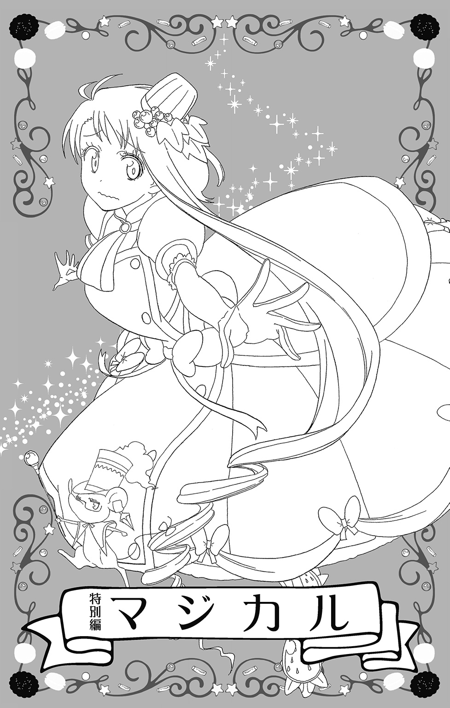
日はすっかり沈み、空気が肌を刺す冷たさになってくる時間帯。
夜の森林公園には、人気がまるでありませんでした。
申し訳程度に設置された街路灯は、電球が切れかかっているのか、ちかちかと頼りなく明滅を繰り返しており、何となく寂しい印象です。時折どこからか聞こえてくる野犬の遠吠えも、公園のさびれた雰囲気作りに一役買っているようです。
こんな時分、薄暗い公園に好きこのんで足を運ぼうとする人なんて、そうはいません。
いるとすれば、よからぬことを企む悪いオジサンたちと、彼らに狙われた薄幸の少女くらいなものです。
「な、なによ！ あんたたち！ ひとを呼ぶわよ！」
ブロンドに赤いリボンの気の強そうな美少女が、人相の悪い柄シャツの男性がたに囲まれていました。育ちの良さそうなご令嬢と、それを狙うヤクザ者といった雰囲気です。
明らかに、トラブルの臭いが漂っています。
「へっへっへ......周りには誰もいねえぜ？」
「どこかで見たツラだと思ったが、あんた桐崎の屋敷のお嬢さんじゃねえか」
「ひひ、お供も連れずに、こんなとこノコノコ歩くなんて不用心じゃねえのかい？」
下卑た笑みを浮かべながら、男のひとりが少女の腕をつかみました。
「きゃあっ!? なにすんのよ！」
「なあ、嬢ちゃん、おじさんたちと一緒に来てくれねえかな？ 痛くはしねえから」
男たちは少女を引っぱり、強引にどこかへ連れて行こうとしているようです。
これはもう、完全に未成年者略取の現行犯。もはや見て見ぬふりはできません。
それまで木陰から傍観していた私は、勢いよく彼らの前へと飛び出し、叫びました。
「そんなことしちゃだめですよ！ オジサンたち！」
「ああん......？」
オジサンたちが、舌打ち交じりで私をにらみつけてきます。
さすがにヤクザさんに凄まれるのは少し怖いのですが、そうも言ってはいられません。
なにせ今の私は、正義の味方なのですから。
「あ、愛と正義と甘味の魔法少女！ マジカルパティシエ小咲ちゃんです！ 私が来たからには、悪いことはさせませんよ！」
巨大なクリーム絞り器型のステッキを彼らに突きつけ、名乗りを上げます。
「はあ......魔法少女......？」
人相の悪いオジサンたちは、私の衣装を見て一様に首をかしげました。まあ、それも無理はないのかもしれません。
何と言ってもこの服、異様に目立ちますから。
ピンクと白のツートーンのエプロンドレスに、リボンがふんだんに装飾されたフリフリのスカート。帽子や靴には果物をモチーフにしたオーナメントが、いくつも飾りつけられています。どこからどう見ても、ザ・魔法少女。
ファンシーすぎて、夜の公園にはまったくそぐわない格好です。いや、それどころか、まともな現代社会で通用するような衣装ではないでしょう。
さすがにそのくらいは自分でもわかっています。
金髪のお嬢様も、眉をひそめて私を凝視していました。
「マジカルパティシエって......。なにこの子......？」
白い目です。完全に白眼視です。
これもいつものことなので、ある程度覚悟はしていましたが......できればそんな目で見ないで。
「と、とにかくオジサンたち！ 今すぐその子を放してください！ さもなければ、私のマジカルスイーツクッキングが火を噴きますよ！」
クリーム絞り器の口金を向けて、ヤクザ風のオジサンたちと対峙します。
さあ魔法で悪党退治だ......と思ったのですが、どうも彼らには暴力を振るうつもりはないようです。こちらをちらちらと見ながら、耳打ちをしあっているだけ。
「おい、ちょっとこの女ヤバくねえか......？」
「高校生くらいだろ......？ さすがに魔法少女ごっこはねえよな......」
「ちょっとアレな子なんだろ......。こういうのとは、あんまり関わりあいにはならねえほうがいいと思うぜ......」
私の登場で誘拐の気勢がそがれてしまったのか、彼らは一様に肩を落とし、そっとその場を離れていきます。
「え？ あの、ちょっと？」
私の声を無視するかのように、オジサンたちは足早に公園の出口へ。
その途中、一瞬だけこちらを振り返った彼らの表情は、可哀相なものを見る目をしていたように思います。
「行っちゃった............」
どうやら、戦わずして少女を助けることができたようです。
結果オーライとはいえ、なんなのでしょうか、この胸に押し寄せる寂寥感は。
「あ、えーと、お怪我はありませんか？」
不安げな顔の女の子に向けて、努めて笑顔を浮かべました。
こんな暗がりで多人数の男に襲われかけたのです。きっと彼女も、すっかり怯えてしまっていることでしょう。
「あ......うん......ど、ども......」
なぜでしょうか。少女はその整った顔に冷や汗を浮かべ、後ずさりしています。まるで私から距離を取ろうとしているかのように。
「そ、それじゃ......私、用事あるから」
彼女もまた、呼び止める間もなく走り去ってしまいました。
「あ......」
暗がりの公園に残されたのは、正義の魔法少女ひとりだけ。
パトロールの甲斐あって、なんとか困っている少女を助けることができたようですが、どうにも正義のヒーローらしくありません。
魔法少女になって数週間、今日もまた、同じ悩みに頭を抱えます。
「なんかこう、魔法少女ってもう少し違う気がするんだけど......」
並木に吹きすさぶ木枯らしが、まるで心に突き刺さるかのよう。
傍らのベンチに腰かけ、深くため息をついてしまいます。
「なんだかえらくアンニュイな様子ね、小咲ちゃん」
どこからともなく現れたねずみが、ぴょこん、と肩口に飛び乗り、私の顔を覗きこんでいました。
「あ、ルーリンさん」
シルクハットにメガネ姿の彼女は、魔法の国の魔法ねずみ、ルーリンさん。
彼女こそが、私を魔法少女に仕立て上げた張本人でもあります。ねずみらしく、好物はチーズだとか。
「これからあなたは『マジカルパティシエ小咲ちゃん』となって、世界の人々の平和を手助けするの。いい？」
この不思議なねずみさんが、放課後の家庭科室でお菓子作りの練習をしていた私の前に姿を現したのは、数週間ほど前のことだったでしょうか。
「え、えーと、ルーリンさん......でしたっけ？ あなた、いったい何者なんです......？」
「何者なのか、とはえらく哲学的な問いね。ごらんのとおり、私はこの世界ではしがない一匹のねずみよ。でも、これは私の霊的肉体が物質世界の境界を超える際に、この世界における適切な容に収まったというだけ。......魔法の国での本来の私の姿は、もう少し神々しいというか、威厳あるものなのよ？ こう見えても、十の世界構成要素の一つ、知恵をつかさどる大精霊なんだから」
突如現れ、淡々と語るねずみさんに、私は開いた口が塞がりませんでした。
何を言ってるんだか全然わかりません。
「でも、魔法の国の精霊も私のように善良な者ばかりではないの。何らかの要因で強力な魔素を得た精霊の中には、勝手に物質世界の境界を超え、この世界に堕ちてくる者もいる。その多くは人間の霊体に寄生して、その強力な魔素を自在に操り、欲望のままに振る舞ってしまうのよ」
「はあ......？」
「精霊によって魔素を体内に取りこみ、人外と化した人間を止められるのは、同じように魔素を操れる人間だけ......。魔法の国では、怪人たちを止めるため人間の協力者を募っているのよ」
ルーリンさんが、私をじっと見上げます。
「とりわけ今、魔法の国に必要とされているのは、魔素を精製し、魔法薬品を作ることのできる錬金術師よ。そして、錬金術に最も必要な才能は、『心をこめてモノを作ることができる』こと......」
「あの、よくわかんないけど、それでなんで私のところに......？」
ここまで説明したのにまだわからないの、とでも言いたげに、ルーリンさんは肩をすくめてみせました。
「毎日毎日、この家庭科室でお菓子作りに励んでる小咲ちゃん。あなたには現代の錬金術師――すなわち、魔法少女としての才能があるのよ」
彼女がものすごく簡単に説明してくれたところによると、どうやらお菓子作りの才能は、魔法の才能なんだそうで。
つまりルーリンさんは、お菓子作りが好きな女の子を探し、平和を守る魔法少女になれる者をスカウトするため、この世界にやってきたそうです。
「でも、私なんかにそんなことできるのかなあ......」
「大丈夫よ。誰にあげるためか知らないけど、あんなに毎日お菓子作り頑張ってるじゃない」
「うーん......でも......」
「それにまあ、魔法少女として正義のヒロイン的な活躍をすれば、きっとその相手に振り向いてもらえたりもするんじゃないかしら」
私のお菓子作りの練習の目的は、彼女にはバレバレだったようです。
ともあれルーリンさんの言うことは、目下絶賛片思い中の私にとっては、非常に魅力的に聞こえました。
可愛い衣装でカッコよく悪をやっつける魔法少女――。それは確かに、憧れのあのひとの目にも魅力的に映るに違いありません。
「うん！ 私、やるよ、ルーリンさん！ 魔法少女として契約する！」
しかし、その判断が軽率だったことを私が悟ったのは、魔法少女として活動をはじめてから、程なくしてのことでした。
そうです、活動内容が非常に地味なのです。
今夜のように、夜な夜なコスプレ姿で近所をパトロールするだけで、特に世界平和のための活動はいっさい行っていません。それどころか、トラブルに巡りあっても、さっきのように魔法すらほとんど使わないで解決に至ることもままあります。ルーリンさんの言う怪人なんて、本当にいるんでしょうか。
怪人がいなければそもそも活躍なんか、できるはずもありません。
私が魔法少女になった意味って、一体何なのだろう......。
ルーリンさんは、落ちこむ私の目をじいっと見つめながら、「ははあん」と深くうなずきました。
「小咲ちゃんが悩んでいるということは、きっとアレね......。恋の悩み」
全然違いました。
「いや、そういうことじゃなくて、私、魔法少女としてちゃんと仕事できてるのかなあって不安で......」
「なるほど......魔法少女の仕事への不安ね。つまり自分に自信がない、と」
「うん、まあ......そうなるのかな？」
「自分に自信がないときには、やっぱり恋を成就させることが一番よね」
「え、恋？」
そう言えばこの魔法ねずみさん、他人の恋の応援が三度のご飯より大好きなかたなのでした。びっくりするほどの恋愛脳です。
「で、どうなの？ 憧れの一条先輩との仲は。進展したの？」
「ああ、えーと......」
一条先輩とは、私が学校で陰ながら憧れている年上の男子生徒です。
頭脳明晰、スポーツ万能、おまけに超絶イケメンな生徒会長。彼に憧れる女子は星の数ほどいるそうですが、御多聞に漏れず、私もそのうちのひとりです。一説にはヤクザの御曹司だ、などという噂も流れていますが、それもまた俠気溢れる感じでかっこいい。
「ま、まあ、仲良くおしゃべりするくらいの仲にはなった......かな？」
もちろんこれは真っ赤なウソです。
そもそも私なんて、学校では超がつくほど地味なメガネ女子。
成績もパッとしないし、運動神経はからきしだし、あがり症だし、まったく目立ちようがありません。あの美形アイドルのような生徒会長が、そもそも私なんかを認識しているはずはないでしょう。
「どうせ、声をかけたことさえないんでしょう」
「う......」
私の可愛らしいウソは、ルーリンさんにはしっかり看破されていたようです。彼女が鋭いのは、前歯だけではない様子。
もちろん、非常に奥手な私に、憧れのあのひとに声をかける勇気なんてありません。残念ながら、〝恋の勇気が出る魔法〟なんて便利ものは、魔法少女にだって使えないのです。
私のささやかな強がりを見破ったルーリンさんは、やれやれ、と首を振りました。
「攻めの姿勢が足りないのよ、小咲ちゃんには。いっそのこと、その可愛らしい魔法少女衣装で悩殺しちゃえばいいじゃない」
「うう......そんなの無理だよ」
可愛いと言ってもらえるどころか、ドン引かれるイメージしか湧きません。
さっきのヤクザさんたちや金髪お嬢様ならともかく、一条先輩にまで引かれてしまっては、もうお終いでしょう。
「なんなら私が代わりに言ってあげましょうか？ 『小咲ちゃんがあなたに気があるみたいよ』って」
「や、やめてよ!? いきなりねずみのルーリンさんが声をかけたら、先輩だってビックリして悲鳴をあげちゃうんじゃ――」
そのときでした。
「ぎゃあああああああああああ!?」
突如公園に、鋭い悲鳴が響き渡ったのです。
声の主はおそらく同年代の少年。どうやら池のほうから聞こえてきたようです。
ルーリンさんと顔を見合わせます。
驚いたのは、こんな時間に公園内に、他に誰かいたことではなく。
「この声、一条先輩......!?」
※
息せききって池の近くまでやってくると、目を疑うような光景が展開されていました。
「ま、待て！ やめたまえ！ 貴様は一体何者だ!? どうして僕にこんなことをする!?」
大声であわてふためいているのは、やはり我らが生徒会長、一条先輩でした。
オールバックに決めた知的な髪型に、縁なしのオシャレメガネ。優秀な生徒会役員だけが身に纏うことを許される、その白の詰襟学生服を見間違うはずがありません。
しかしどういうわけか今の彼は、両手両足を荒縄で固く縛られて、謎の怪人の手で池に叩き落とされようとしていました。絶体絶命の大ピンチです。
「ふっふっふ......！ オレ様は悪の怪人ドクターマイコー！ お前を断罪するためにやってきた、モテない男たちの代弁者なんだよ！」
悪の怪人、ドクターマイコー。
瘦身の白衣姿に胡散臭げなサングラス、背負っているのは、巨大な金属製のランドセル状の何かです。彼はそのランドセルから伸びた鉄製のアームで、縄で縛られた一条先輩を軽々と抱え上げているのでした。
「おいっ！ この時季の池の水が、どんなに冷たいのかわからないのか!? これでは凍死してしまうぞ!?」
「わかってないのはお前のほうだ！ 美少女にばかりモテているお前には、他の男子連中の凍死寸前のハートなんて理解できねえだろうよ！」
「僕がモテているだと......？ 何をバカなことを言っている。女子生徒たちがキャーキャー言っているのは、この白制服を与えられた者への、単なる好奇の眼差しに過ぎない！」
「はあ......？ どんだけ周りに無頓着なのかねえ、この一条君は？」
ドクターマイコーがため息交じりに頭を振ります。
「大体お前がいつもそんなふうに鈍感すぎるおかげで、あっちの世界でオレら周りの者が苦労してるってのにさあ......！」
「あっちの世界......？ なんのことだ？」
「とにかく、寒中水泳でもして、少しは反省しとけ！ このスケコマシ！」
「うおおおおおっ!? やめろおおおおおっ!?」
このままでは、一条先輩が池にダイブさせられてしまう。
「小咲ちゃん、出番よ」
「うん！」
肩に乗ったルーリンさんと目線を交わすと、私は池のほとりに躍り出ました。
あれが例の怪人――これこそ、待ちに待った魔法少女としての活躍のチャンス。
ドクターマイコーなる怪人の蛮行を阻止し、一条先輩を救うのです！
「ま、待ってください！」
「ん？」
ドクターマイコーがこちらを振り向きました。
しかし夜だというのに、あんな黒メガネで前は見えているのでしょうか。
「一条先輩を池に落とすなんてダメです！ そんなの、愛と正義と甘味の魔法少女、マジカルパティシエ小咲ちゃんが許しません！」
クリーム絞り器を突きつけ、臨戦態勢はバッチリです。
敵は正体不明の怪人ですが、憧れの一条先輩を守るためには一歩たりとて引くことはできません。魔法バトルだって辞さない構えです。
しかし当のドクターマイコーは、私を見てやれやれと苦笑いを浮かべるだけでした。
「あー、ダメだね、そんなんじゃ」
「だ、ダメって......何が？」
初対面でいきなり怪人に「ダメ」呼ばわりされるとは思いませんでした。さすがの私も狼狽えてしまいます。
白衣の怪人は器用にアームを操作して一条先輩を地面に横たえると、こちらの衣装の頭の先から足の先まで、じっくりと舐めるように視線を這わせました。
そんなに凝視されると、なかなか恥ずかしいものがあります。
「だって君、魔法少女でしょ？」
「あ、まあ、そうですけど......？」
「だったらさあ......なんでもう変身してるのさ」
「なんでって......そりゃ、変身しないと魔法で戦えないから......」
そんな私のごく当たり前な返答を聞いて、ドクターマイコーは「あーこりゃダメだ」と言わんばかりに、手で顔を覆ってしまいました。
「な、なんなんですか、いったい......？」
いったい何がダメなのか。私も、それから縛られたままの一条先輩も、きょとんとして彼の次の言葉を待ちます。
「あのさあ。あらかじめ変身してくる魔法少女なんて常識的に許されると思う？ 正直、そんなの魔法少女の風上にもおけないんだよね～」
「は、はあ？」
「いいかい。魔法少女っていうのはさ、変身シーンを披露してナンボのもんなんだよ？ テレビの前の子供たちもさ、それから大きなお友達もさ、みんな変身シーンを期待して魔法少女アニメを見てるわけ。......それが何？ 最初から変身してきました？ ああ、ダメ。全然ダメ。そんなんで視聴率取れると思ってるの？」
「え？ す、視聴率って......？」
いったい何を言い始めたのでしょう、この自称悪の怪人は。
「だから、マジカルパティシエ......えーと、小咲ちゃんだっけ？ ほら、最初からやり直し。ここで変身シーンからもう一回やってよ」
「ええ!? い、いやですよそんなの！ 変身シーンなんて、他人に見せるもんじゃないし......」
実を言うと、私がマジカルパティシエに変身する数秒間は、一糸まとわぬ裸体を晒さなければならないのです。ある意味、致命的な弱点といいますか......完全に無防備になるという欠点以上に、さすがにうら若き乙女が全裸はマズいです。恥ずかしすぎて人前で変身なんて、とても無理です。
これまでに何度も私は、ルーリンさんにこの酷過ぎる仕様を何とかしてくれるように頼んでいるのですが、一向に改善の気配はない様子。
「もう......！ 一条先輩の前で裸になるなんてできるわけないよ！ そんなこと言う怪人さんなんか、私のマジカルスイーツクッキングで......！」
私はクリーム絞り器の金口をドクターマイコーに向け、毅然とした対応を取ることにしました。しかし、当のドクターマイコーは「やれやれ」と肩をすくめて見せるだけ。いっさいあわてた様子は見せません。
「この魔法少女ちゃんはどうにもわかってないようだねえ。まったく、るりちゃん......じゃなかった、ルーリンちゃんは一体どういう指導をしているんだか」
「るりちゃん言わないで。こっちの世界ではルーリンで通ってるのよ」
肩口のルーリンさんが、怪人をにらみつけます。
〝るりちゃん〟などという謎の単語が通じあうあたり、なにやらふたりの間には、私のあずかり知らない因縁があるようですが......。
「怪人さん。ルーリンさんを知ってるんですか？」
「知ってるも何も、ねえ......」
ドクターマイコーが、ルーリンさんに意味深な流し目を送っています。
魔法ねずみと怪人さんに、いったいどんな繫がりがあるのでしょうか。
「なにやらまた、けったいなヤツらが現れたな......」
身動きの取れない一条先輩も、地面でうんざりした表情を浮かべていました。まあ、私はともかく、喋るねずみやら白衣の怪人やらに囲まれればそれも仕方ないかもしれません。
「ともかく、あなたが魔法少女を語るなんて十年早いわよマイコー君。私の指導にケチをつけるのもね」
「ははは、ねずみのルーリンちゃんにメンチ切られても、ぜーんぜん怖くないけどね！」
このふたり、反目し合っているようにも見えますが、さりとて敵というわけでもないような......一体どんな関係なのでしょう。
にらみ合うふたりの間に割って入り、私はおずおずと口を開きます。
「あ、あのー、ルーリンさん。この怪人さんとはお友達なんですか？」
「お友達？ いいえ。そんな生易しい関係ではないわ。ドクターマイコーは紛うことなき宿敵よ。......小咲ちゃん、遠慮はいらないわ。やっておしまいなさい」
手に持った杖を、ご老公よろしくびしりと突きつけるルーリンさん。
もっともドクターマイコーは、手のひらサイズのルーリンさんなど恐れるに足りないのか、余裕の表情を崩しません。
「ふーん？ 変身シーンも披露できない魔法少女なんて、雑魚も雑魚......。魔法少女のイロハもわからないような子に、オレは倒せないと思うけどね」
「へえ」
ドクターマイコーの挑発に、ルーリンの額の青筋がぴくりと動くのがわかりました。
「......そこまで言うなら見せてあげようじゃないの、変身シーン」
ルーリンさんはくるりと向き直り、私を見上げました。
「え？」
見せてあげるって、どういうことですかルーリンさん。
「へんしんかいじょ～！」
ルーリンさんがステッキをひと振りすると、一瞬のうちに私が身に着けているものは、学校の制服に変わっていました。白いブラウスにリボンタイ、プリーツスカート。メガネも顔の定位置に収まっています。変身シーンは無駄に時間がかかって恥ずかしいのに、なぜ戻るときには一瞬で済むのでしょうか。永遠の謎です。
「ま、まさかこの場でまた変身させられるの、私!?」
「そうよ」
ルーリンさんが、事もなげに言い放ちます。
「だ、だめだよ!? ここには一条先輩だっているんだから......！」
「その先輩を助けるためでしょう？ 文句言わないの」
実に強引です。ルーリンさんがこうなっては、梃子でも動かないのは知っています。どうせ、従うしかないのでしょう。
私がため息をついていると、当の一条先輩が顔を上げました。
「む。その顔、どこかで......？」
もしかしたら、制服を見られたことで一条先輩に正体を気づかれてしまったのかもしれません。これでは魔法少女として失格です。
いや、それどころか、この後にさせられるであろうことを考えると、そもそも女子として失格な気が......。
「こ......このことは忘れてください、一条先輩。そしてこれから起こることも......」
悲嘆に暮れる私のことはお構いなく、ルーリンさんはあっけらかんと告げます。
「さあ小咲ちゃん変身よ。こまっしゃくれたメガネ野郎に、あなたの華麗な変身シーンを見せつけてやりなさい」
「拒否権はないんだよね......うう」
ルーリンさんがメガネの位置を直しつつ、にやりと鼻をひくつかせます。あれは本気の表情。もはやどうあがいても、一条先輩の前でフルヌードご披露は避けられないようです。
私も魔法少女のはしくれ。覚悟を決めるしかありません。
「はい、へーんし～ん」
ルーリンさんが淡々と告げると、私の衣服が魔法の粒子へと変換を始めました。ブラウス、スカート、そして下着までもが、次々と光になって空気に溶けていきます。
ああ、素肌に突き刺さる夜風が、妙に冷たい......。
「や、やっぱり恥ずかしいよ、ルーリンさん！」
「大丈夫。心配しないで、小咲ちゃん」
ルーリンさんはニヤリと笑うと、手にした杖を思いきり振りかぶります。
「それえっ！」
かけ声とともに投擲された杖は空を切り、ドクターマイコーのサングラスに突き刺さりました。
「ぎゃあああ!? 目があっ!?」
「ふふふ......隙だらけだったわよドクターマイコー。あなたごときに小咲ちゃんの裸を見せるわけないじゃない」
目元を押さえて悶絶するドクターマイコーを、ルーリンさんが冷たく見下ろします。どうやら、変身シーンを見せるというのはブラフで、最初から不意打ちを狙っていた様子です。
「ひ、ひどいよるりちゃん。あんた怪人以上の悪党だ......」
「正義のためなら手段は選ばないわ。......さあ小咲ちゃん。邪魔者の目は塞いだわ。心おきなく変身してちょうだい」
「え、で、でも......」
いくらドクターマイコーの目を塞いだといっても、ここにはそれ以上に気になる視線の主がいるわけで。
私の恥ずかしさとは裏腹に、変身シーンはつつがなく進行していきます。
「み、見ないでください、一条先輩っ......！」
必死にいろんなところを隠しながら、忍びがたき変身の数秒間を、なんとか忍びきります。
服やリボンがどこからともなく、ぽん、ぽん、ぽんと現れました。
変身完了。身に纏うのはヒラヒラでフリフリでプリティな、マジカルパティシエ衣装です。先ほどと同じ衣装のはずなのに、なぜか恥ずかしさが倍増しているのは、着脱シーンを見られたせいでしょうか。
「だ、大丈夫だ。僕は見てない......ぞ？」
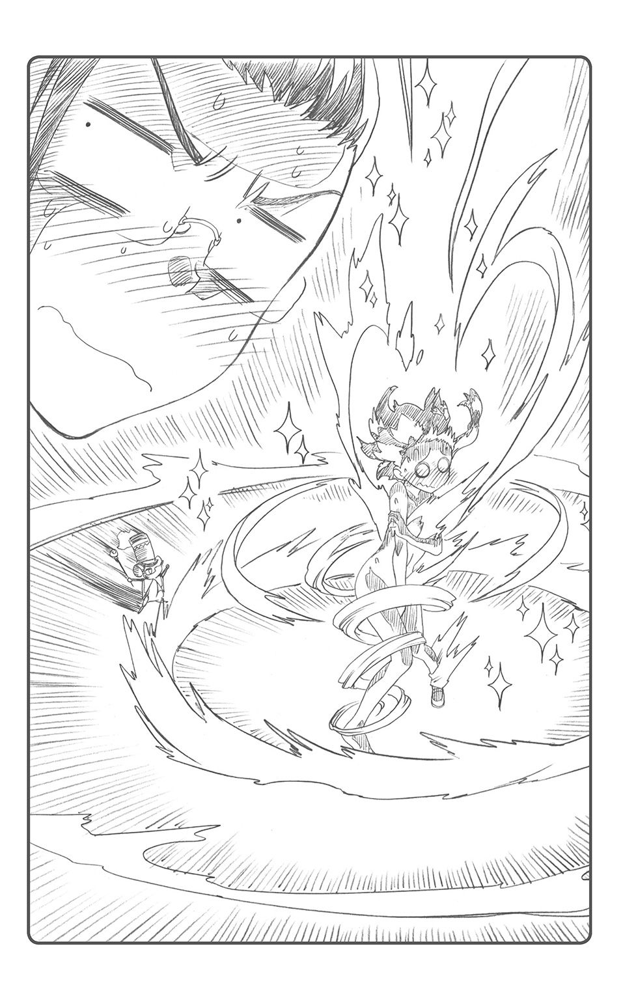
一条先輩は、必死に顔を背けてくれていたようです。
しかし悲しいかな、その横顔が朱に染まっているのがわかります。あれは間違いなく、こちらをチラ見してしまったことの表れ。そんな彼の優しい噓が、より一層こちらの羞恥心をかきたててしまいます。
「......うう、結局変身シーン見れなかったじゃないか。楽しみにしてたのに」
ぼやきながらドクターマイコーは、白衣のポケットからサングラスを取り出しました。さすが怪人、けっこうタフです。
「負けっぱなしは癪だし、この借りはきちんとリベンジさせてもらうよ、怪人らしく！」
ドクターマイコーは、背後の鋼鉄製ランドセルから、一丁の銃を取り出しました。
拳銃といっても黒光りするような金属製のモノではなく、やたらとカラフルなデザインの、オモチャの水鉄砲らしきものです。
「これでも食らえー！」
水鉄砲の先から、しびびびび......と光線が発射されました。どうやらあれは、水鉄砲じゃなくて光線銃だった模様。発射されたレトロフューチャーな光線は、なぜか私ではなく、傍らの一条先輩の身体に命中しました。
「ぎゃああああああああああああっ！」
「い、一条先輩!?」
光線を浴びて、一条先輩が悲鳴をあげています。
私と戦うと言っておきながら、やはり無抵抗の一条先輩を狙うというその所業、やはり悪の怪人だけに、血も涙もない外道だということでしょうか。
「これは、『煩悩解放ビーム』！ このビームを受ければ、いかなる清廉潔白な人間であろうとも、自らの煩悩に抗うことはできなくなるのだー！」
マッドサイエンティストが、「ぐううう」と唸る一条先輩を見下ろします。
「お前も人の子であれば、普段抑圧している色欲が必ずあるはず！ これからはイケメン生徒会長という仮面をかなぐり捨て、『ヘンタイ魔人・一条』として、存分にセクハラに勤しむがいい！」
「なんてことを......!?」
「ふふふ......一般人を操って僕にするのは、怪人のセオリーだからね」
「一条先輩に、いったい何をさせるつもりなんですか!?」
「そうだなあ......。階段の下からローアングルで女生徒のスカートの中を覗かせたり、あとは河原に落ちてるアレな本を拾い読みさせたり......。生徒会長がそんな蛮行に走っている姿が目撃されれば、きっとこの男の人気は地に堕ちる！ それでこそ、モテない男たちの溜飲が下がるというものだよ！」
なんという卑劣な......。この怪人、想像の斜め上を行く外道でした。
憧れの一条先輩にそんなこと、絶対にさせるわけにはいきません。
「ぐううう......か、身体が勝手に......！」
一条先輩が、ゆっくりと私のほうに向き直ります。心なしかその目は血走り、はあはあと息を荒らげている様子です。おそらくは、自らの内で、煩悩と理性が激しい戦いを繰り広げているに違いありません。
そんな一条先輩が私を見て、ぽつり、とつぶやきを漏らしました。
「......か、......可愛い......」
「――!?」
目の玉が飛び出るほどの衝撃でした。
あの一条先輩が。
私の憧れの白馬の王子様が。
全校生徒人気ナンバーワンの、超絶イケメン生徒会長が。
私を見て、「可愛い」と！ 一言「可愛い」と言ったのです！
今の彼が、『煩悩解放ビーム』とやらの影響で、まともな状態でないことはわかります。ですが、裏を返せばそれが彼の密かに秘めていた本心であるということ。これってある意味、告白......？ もう心臓がどっきんばっくん高鳴っています。
一条先輩が、さらに私に近づきます。
その切れ長の瞳を潤ませて、熱くこちらを見つめながら、
「ああ、本当に可愛いな君は......。僕のモノにしたい......！」
「い、一条先輩......!?」
いけません。乙女のときめき回路がぐんぐんと唸りをあげ始めました。
ですが、今の私は怪人と戦闘中の魔法少女。操られた一条先輩を元に戻さなくてはなりません。でも、ちょっとだけこのままでもいいかなぁ、とも思ってしまう自分がいます。
ああ公私混同。煩悩と理性の狭間にいるのは私も同じということです。
先輩は、熱っぽく続けます。
「今すぐ君を連れて帰りたいな。ねずみさん......」
......え？ ねずみさん......？
「ふわふわの毛並みに、愛らしい小さな身体。そのシルクハットも、とってもチャーミングだね。......ふふふ、名前はなんていうんだい？ さあ家に行こう。とっておきのカマンベールチーズをごちそうするよ」
なんと、一条先輩が語りかけていたのは、私の肩口――。そこにちょこん、と座っていたルーリンさんに、でした。
「......な、なんで......？」
「ふむ。どうやらこの一条先輩とやらが腹の中に抱えていた煩悩というのは、いわゆる〝動物フェチ〟......。可愛らしい動物を撫でまわして悦に浸りたいという欲求のようね」
ルーリンさんがそっけなく言い放ちました。
「ど、動物フェチって......」
「でも安心して小咲ちゃん。私、あなたの想い人だと知っていてホイホイついていくような尻軽ねずみではないわ。......カマンベールチーズは気になるけれど」
じゅるり、と舌舐めずりするルーリンさん。
自分の早とちりだったことを悟り、私はがっくりしました。
「そういうことだったの......」
なんでしょうか、この、えも言われぬ敗北感は。一条先輩の中では、私の魅力はねずみ以下......？
当の一条先輩は、自らの煩悩と戦いながら、ぶつぶつとつぶやきを漏らしていました。
「そうだ......僕は、生徒会長なんかになりたかったわけじゃない......！ 放課後はいつも動物たちと戯れてたいと思っていた......！」
慟哭が、公園に響き渡ります。
「犬や猫、亀やワニにチンパンジー......。そうだ。拾ってきた動物たちを学校に集めて、僕だけの動物王国を作るんだ......！ 名前をつけて、専用のケージもそろえて......！ おお、我ながらなんて素晴らしいアイディア！ さっそく明日から実行しなくては！」
天を仰ぎ、あははははは、と笑う一条先輩は、ちょっとヤバい感じです。
ドクターマイコーはため息交じりに、
「なんか想像してたのとは違うけど......まあいいや！ 『動物大好き魔人・一条』として、学校やこの街を阿鼻叫喚のアニマル地獄にしてくれれば、それで」
アニマル地獄......。一条先輩が数百匹の動物たちに囲まれて、満面の笑みを浮かべながら「よーしよしよし」と毛づくろいをしている光景が目に浮かびます。
なんだかほっこりする絵面ですが、実際にそんなことになったら大変そうです。エサやりとかお掃除とか、誰がするの？ って方向で。
私は、クリーム絞り器を握りしめます。
「ヘンタイ魔人になっちゃうよりはマシなのかもしれないけど......これはこれで止めたほうがいいよね？ このままじゃ、いつものクールな一条先輩のキャラが崩壊しちゃいそうだし......」
「あっちの世界の一条君は、デフォでこんな感じだけれどね。まあ、止めたほうがいいというのは同意するわ」
あっちの世界、とは何なんでしょうか。
ルーリンさんの言っていることは時々意味がわかりません。
「――ともかく、マジカルスイーツクッキングの出番よ、小咲ちゃん！」
「うん！」
一条先輩を怪人の手下にするわけにはいきません。
私は両手でクリーム絞り器を掲げ、バトンのようにくるくると器用に回します。
ぽん、ぽん、ぽん、と空中に現れたのは、白玉粉に、つぶあん一袋、そして真っ赤に熟した大きめのイチゴ。
マジカルでスイーツなクッキングの始まりです。
「しらたまこねこねー♪ つぶあんこねこねー♪ イチゴを包んでー♪」
歌うように呪文を詠ずると、魔法の食材が光を放ち、目の前で溶けあっていきます。さあ、おいしそうな感じに仕上がってきました。
「......レンジでチンして出来上がりー♪」
光がおさまると、私の目の前には、お皿に綺麗に盛りつけされたイチゴ大福が浮かんでいました。
「マジカル完成！ 〝洗脳解除イチゴ大福〟～！」
これを食べるとあら不思議、どんな暗示や洗脳もたちどころに解けるという、魔法のイチゴ大福なのです。なんともピンポイントで都合のいい魔法ですが、そこはそれ。魔法少女にだいたい不可能はありません。恋愛絡みを除けば。
「小咲ちゃん、早く一条先輩に」
ルーリンさんに促され、私はイチゴ大福を手に取りました。
「一条先輩......！ 私の魔法で、正気を取り戻して！」
いまだに「動物王国バンザーイ」とつぶやいている一条先輩の口に、それをねじこみます。
「むおっ......!? ももももも――――っ」
無理やり咀嚼させ、ごくり、と飲みこませることに成功します。
すると、どうしたことでしょう。
さっきまであんなにハイだった一条先輩の顔色が、真っ青になったのです。
「な、なんだこの衝撃的な味はっ......！ どろっと蕩けるような甘みがベースにありながら、それでいて舌先が痺れるような苦味を兼ね備えている、だと......!?」
一条先輩は「ぐはああああっ！」と苦悶の声を漏らし、そのままどさりと倒れ伏しました。その身体が、びくんびくん、と地面の上で細かい痙攣を繰り返しています。
予想はしていましたが、これってやっぱり。
「小咲ちゃん......また失敗したのね。料理......」
「うっ......」
ルーリンさんにジト目でにらまれ、うろたえてしまいます。
そう。自慢ではありませんが、私のマジカルスイーツクッキングは、ろくに成功したためしがありません。いや、見た目と魔法としての効果は完璧なんですが、肝心の味のほうがちょっと......大問題だそうで。
あばばば、と白目を剝いている一条先輩を見下ろしつつ、ドクターマイコーも頭を振っていました。
「あーあ......せっかくの僕が......。これじゃ、使い物になんないな......」
その様子を見て、ルーリンさんが私に小声で耳打ちしてきました。
いわく、「この隙にあの怪人をやっちゃいなさい」と。
「......え？ でも一条先輩が......」
「先輩のことは私に任せて。それよりあなたは、彼をこんな目に遭わせた諸悪の根源を打ち破るのよ！ マジカルパティシエ小咲ちゃん！」
一条先輩が人事不省に陥った原因はほぼ私の魔法にあるような気がするのですが、そんなことはまるっと敵に責任転嫁してしまうつもりのようです。
ルーリンさん、なかなかに鬼畜。
ともあれ私は魔法少女の使命を果たすべく、怪人にクリーム絞り器を突きつけました。
「か、怪人さん！ あなたの企みは打破します！ その悪逆非道、マジカルパティシエはもう許してはおけません！」
「むむっ！ ならば直接対決だね、パティシエちゃん！ こうなったらオレの作ったバイオ触手怪獣で、ぬらぬらネトネトのエロティック粘液地獄に――」
相手の台詞を遮るように、私は手にしたクリーム絞り器を振りかざします。
すると、魔力を帯びたステッキは、巨大な木製の〝延し棒〟に姿を変えました。もはやこのサイズだと、大きめの野球バット――凶悪な鈍器です。
さすがにドクターマイコーもあわてた様子で、
「え、ちょっと待ってよパティシエちゃん！ まだ、オレの触手怪獣の準備が......！」
「やっておしまいなさい小咲ちゃん。敵の準備を悠長に待つ魔法少女はいないわ。逆ならともかく」
ルーリンさんの冷徹な見解に多少は良心が痛みましたが、今の私は魔法少女です。とにかく私は魔法の延し棒を力の限りに振りかぶりました。
一条先輩を狙う怪人、容赦はできません。
「マジカル調理器具アタッ――――クッ！」
ドクターマイコーのサングラスを叩き割るかのように、魔力を上乗せした強烈なスイングがヒットします。
「あぶうううっ!?」
顔面に強打を受けたドクターマイコーは、そのままきりもみ回転しながら、池へと吹っ飛びます。会心のホームラン。
マッドサイエンティストな怪人は「それお菓子関係ないよねぇぇぇ!?」と叫びつつ、大きな水しぶきを上げて、秋の冷たい池の中へと沈んでいきました。
でもまあ、あれしきで死ぬような怪人だとも思えませんが。
「ひとまず悪は去ったわ。お手柄ね、小咲ちゃん」
※
次の日の放課後、家庭科室にて。
「はあ......」
私はひとり、ため息をついていました。
魔法少女として一条先輩を助け、悪い怪人をやっつけたはいいものの、それが活躍と呼べるものかどうかははなはだ疑問です。
だいたい、料理で失敗して一条先輩を昏倒させるなんて、魔法菓子職人の名が泣きます。
「......うっ......やっぱり不味い......」
調理台の上のお皿には、さっき試しに作ってみたイチゴ大福が載っています。魔法料理ではなく、私が普通に材料を買ってきて作ったものです。
でもやはり、その味は惨憺たるものでした。我ながら、見かけだけなら非常にいい出来栄えだと思うのですが、なぜでしょう。
「才能ないなあ......私」
料理の才能はすなわち魔法の才能。きっと向いていないのでしょう。
こうなればいっそのこと、マジカルパティシエなんてやめようかな......と、そんなふうに私がつぶやいていると。
「――下校時刻だぞ。校内に残っている生徒は速やかに下校するように」
突然家庭科室の引き戸が開かれ、白の詰襟の男子生徒が入ってきました。
「......あ、一条先輩」
私がブルーになっているうちに、すっかり空はオレンジに染まっていたようです。
真面目な生徒会長である彼は、こうして校内を回り、残っている生徒たちに下校を促しているのでしょう。まったく頭が下がります。
一条先輩は、私の地味な顔に目を留め、その切れ長の瞳でじいっと見つめてきました。
「君、以前に僕とどこかで会ったことはなかったかな？」
「......さ、さあ......？」
思わず、とぼけて誤魔化してしまいました。
昨夜、イチゴ大福で死ぬほどの目に遭わせた魔法少女が私だと知られたら、もう一巻の終わりです。片思いをしているどころの話ではありません。
一条先輩は「そうか」とうなずき、踵を返しました。
が、そこでふと、彼が目を落としたのは、調理台の上に載っていたイチゴ大福。
うう、これは非常にマズイ展開......！
「ふむ。家庭科の自主勉強をしていたのか。感心だな。......ひとつ頂いてもいいか？」
「......そ、それは――」
ダメです、という暇すらありませんでした。
一条先輩は、おもむろに大福をひとつつまみあげると、それを躊躇なく口に放りこんだのです。
「......むう、これは......筆舌に尽くしがたい味だな」
先輩は顔をしかめ、微妙そうな表情で私を見下ろします。
私が自分で食べてもヒドイ味なのだから、それも当然でしょう。
ですが、それ以上に心配だったのは、その味をきっかけに、私と昨夜の出来事の関連性を勘づかれてしまうことでした。
「――だが、どこか懐かしい味でもある。僕は、いつだったか、この味のおかげでピンチから救われた記憶があるような......？」
「え？」
どうやら、一条先輩は昨夜の出来事をよく覚えていない様子です。
というよりも、昨日のイチゴ大福が先輩の記憶まで吹き飛ばしたというべきなのかもしれませんが。
「思い出せん......。だが、僕はあのとき、確かにこれを作ってくれた女性にお礼を言わなければ、と思っていたんだ」
「......そ、そうなんですか......」
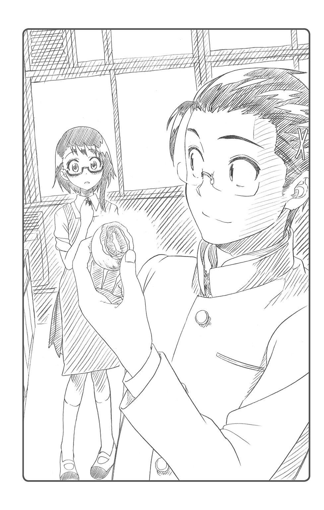
「君にお礼を言うのは筋違いかもしれんが――。ありがとう、助かったよ」
「......!?」
一条先輩は私に一礼して、そのまますっきりした表情で家庭科室を出て行ってしまいました。
後に残されたのは、調理台の前で赤面して、呆然とたたずむ私ひとりだけ。
――ありがとう、助かったよ。
何度も何度も、私はその言葉を心の中で反芻していました。
私が魔法少女としての活動を始めて数週間、人助けをしてまともに感謝されたのは、思えばこれが初めてだったような気もします。
その初めてが、まさか一条先輩だなんて――。
と、そんなふうに私がぼんやりしていると、
「ああもう、いい雰囲気だったのに......。素直にあそこで『助けたのは私です』って言えばよかったのよ」
「......え!? る、ルーリンさん!?」
いつの間にやら調理台の上に、シルクハットの魔法ねずみがちょこん、と座っていたのでした。
「の、覗いてたなんて趣味が悪いなあ」
「覗き？ いいえ。これも恋の応援よ。物陰から小咲ちゃんを見守っていたの」
屁理屈にしか聞こえません。
「それにしても、ほんと、小咲ちゃんは押しが弱いんだから......。そんなんじゃ、憧れの一条先輩のハートは、いつか犬猫に持っていかれちゃうわよ」
ルーリンさんが、半目で私をにらみつけています。
......奥手で悪かったですね。
「そ、そんなこと言ってるヒマがあったらルーリンさん、早く今日のパトロールに行こうよ！ また怪人が出るかもしれないし！」
「へえ？ 今日の小咲ちゃんはなんだかやる気みたいね」
こちらの内心を見透かすかのように、意地の悪い笑みを浮かべるルーリンさん。
私はそれに応えることなく、ぷいっと顔を背けてお皿を片づけます。
確かに、ほんのちょっとだけ、魔法少女を続けてもいいかなあ......なんて思っていたのは事実なんですけどね。
ア ト ガ キ
ニセコイ小説第２弾！ いかがでしたでしょうか？
まさか二冊目まで出させて頂けるとは思っていなかったのでとても嬉しく思います！
今回も原稿を渡されて、前回がとても面白かったものですからワクワクしながらページをめくったのですが、期待通りに面白くて一気に読み終えてしまいました。
僕の生み出したキャラクター達が、他の誰かの手を経て生き生きと活躍している様を見るととても嬉しく、幸せな気持ちになります。
田中先生、今回もありがとうございました！
そしてこの本を手に取って下さった方、携わって下さった方々に、深い深い感謝を。本当にありがとうございました!!
古味直志
『ニセコイ ウラバナ２』をお読みいただきありがとうございます。小説版を執筆させていただきました田中です。
本作もまた、「本編では見られない、ヒロインたちの一面を描き出す」というコンセプトでお送りしております。鶫のセクシードレスや、メイド万里花、ヘタレすぎるポーラ等々......。一条先輩に至っては、筆者ですら「誰だお前」とツッコミたくなるような変貌ぶりでした。まあ特別編ということで、その辺楽しんで読んでいただけると幸いです。
アニメ開始やら原作執筆やらでお忙しい中、素敵イラストの数々を描き上げてくださった古味直志先生、本当にありがとうございます。今後とも、先生の描く恋する女の子たちに、萌えさせていただく所存であります。
最後になりましたが、六郷様や齊藤様はじめ編集部の皆様、デザイン事務所や印刷所の方々、原稿が遅くなってしまい、大変ご迷惑をおかけしました。『ニセコイ』アニメ化の時期に出版が間に合ったのも、皆さんの尽力のおかげです。次の機会があればもっと早く書けるように頑張ります。
それでは二〇一四年が、読者の皆さんと『ニセコイ』にとっていい年でありますように。
田中 創
■初出
ニセコイ ウラバナ２ 書き下ろし
古味直志 NAOSHI KOMI
２００７年に週刊少年ジャンプにてデビュー。
２０１１年から連載を開始した『ニセコイ』が、高い画力とストーリーで人気を博す。
田中 創 HAJIME TANAKA
２０１０年、ジャンプ小説新人賞
jNGP'10 Winter 小説テーマ部門銅賞を受賞。
『貧乏神が！』の小説にてデビュー。
ジャンプジェイブックスDIGITAL
ニセコイ ウラバナ ２
著者 古味直志／田中 創
© 2015 N.KOMI／H.TANAKA
２０１５年４月30日発行
この電子書籍は、ジャンプジェイブックス「ニセコイ ウラバナ ２」
２０１４年７月30日発行の第５刷を底本としています。
装丁 石山武彦［Freiheit］
発行者 鈴木晴彦
発行所 株式会社 集英社
〒１０１－８０５０
東京都千代田区一ツ橋２丁目５番10号
０３－３２３０－６０８０（読者係）
制作所 株式会社デジタルディレクターズ
本作品の全部また一部を無断で複製、転載、改竄、インターネット上に掲載すること、および有償無償に関わらず、本データを第三者に譲渡することを禁じます。なお個人利用の目的であっても、コピーガードを解除しての複製は、法律で禁じられています。